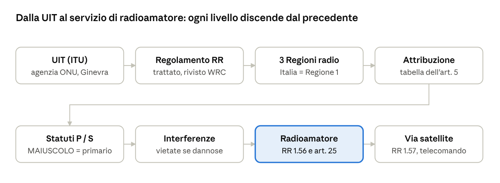
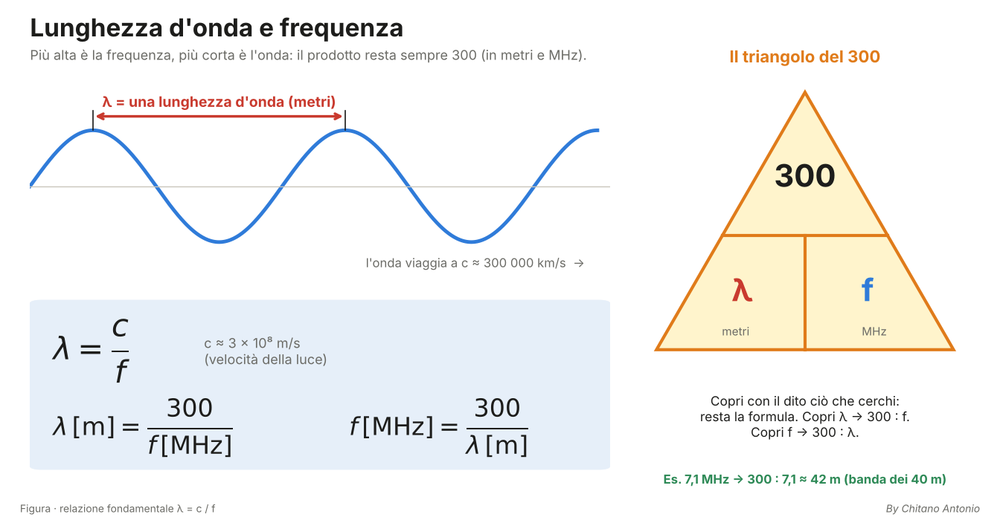
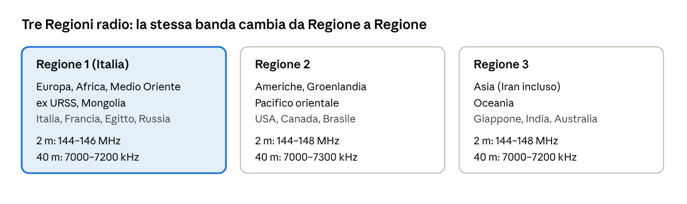
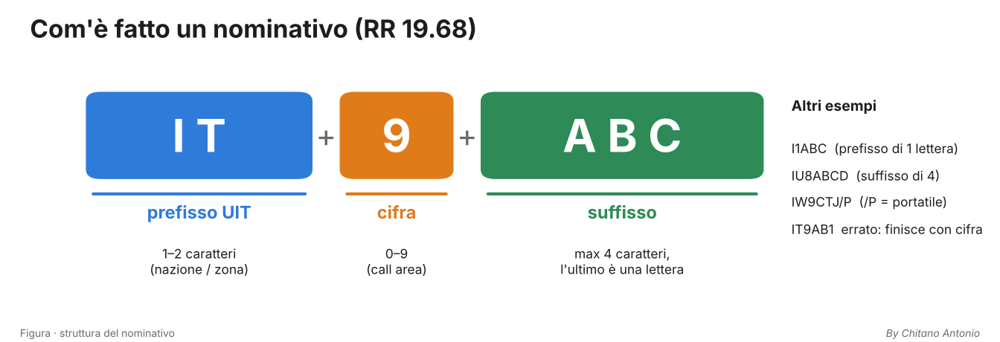
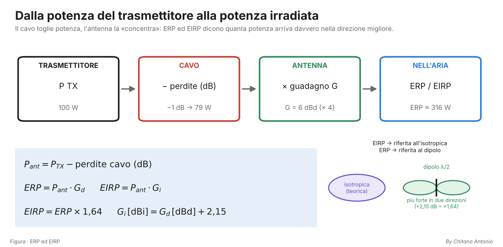
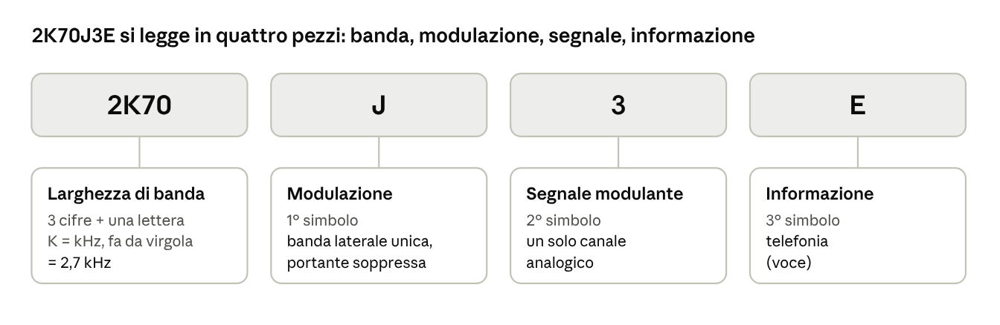
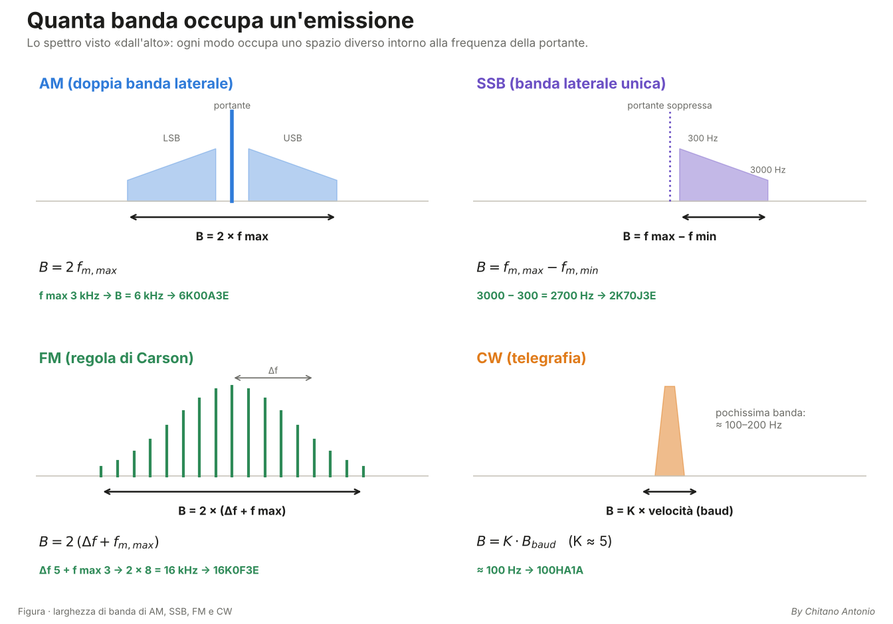
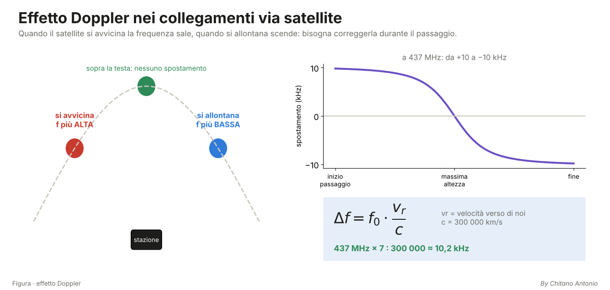
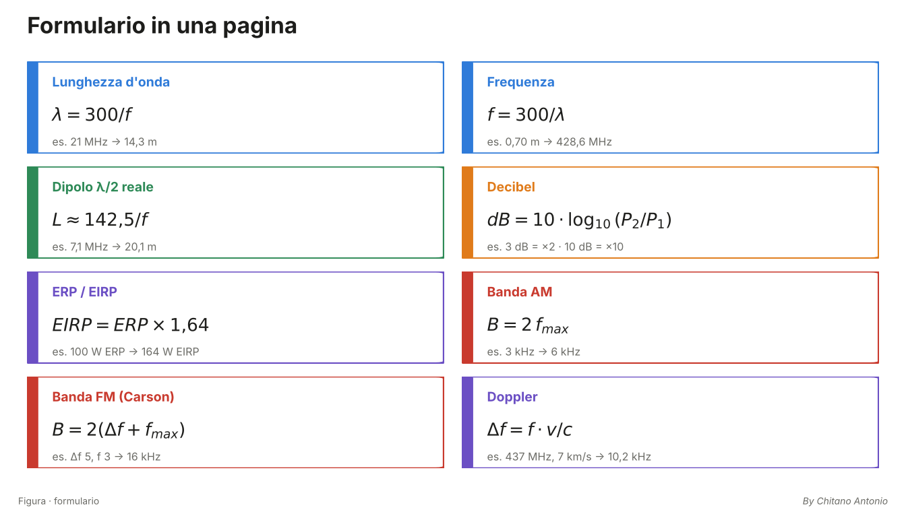

Regolamentazione nazionale e internazionale dei servizi di radioamatore
Dispensa per l'esame di patente di radioamatore · versione 7 · 12 novembre 2026 · By Chitano Antonio
Novità della v7 (12 novembre 2026, risposte del docente): art. 144, il titolare dell’autorizzazione «madre» non deve essere maggiorenne, bastano 14 anni; emergenza in 40 m su 7110 kHz LSB, Rete Zamberletti su 6990 kHz LSB, 7110 come centro di attività da non occupare (nuovo paragrafo 10.I2).
Novità della v6 (12 novembre 2026): verifica completa, slide per slide, delle slide 1–167 del corso. Aggiunte le parti mancanti in fondo ai capitoli 0, 1, 2, 3, 4, 5, 6, 7, 8, 9, 10, 14, 15, 16 e 17 (paragrafi con la lettera I, «Integrazioni dalle slide»). Corretti: segmenti degli 80 m, contributo di 50 €, scala del QSA, origine dell’alfabeto fonetico (ICAO), marca da bollo all’esame, comma dei beacon (art. 143 c. 4), requisiti alternativi dell’art. 137. Segnalati gli errori presenti nelle slide stesse.
Novità della v5: tutte le formule (§1.1, §7.1, §8.1, §9.6, §11.4 e §12.1) sono ora rappresentate con figure a colori, ognuna con lo schema, la formula leggibile, un esempio svolto e la spiegazione «in parole».
0. Introduzione e mappa del percorso
L'attività radioamatoriale è regolata a tre livelli: mondiale (UIT/ITU e il suo Regolamento delle Radiocomunicazioni), europeo (CEPT) e nazionale (Codice delle comunicazioni elettroniche, Allegato 26, Piano nazionale di ripartizione delle frequenze). Ogni livello discende dal precedente: l'Italia non può concedere ai radioamatori ciò che il Regolamento UIT non consente nella Regione 1.
Il filo logico da ricordare all'esame è questo:
UIT → Regolamento delle Radiocomunicazioni → Regioni radio → attribuzione delle bande → servizi primari/secondari → interferenze → servizio di radioamatore → servizio di radioamatore via satellite.

Figura 1 · la catena normativa in 8 passi
Si legge da sinistra a destra e dall'alto in basso: ogni riquadro è vincolato da quello che lo precede.
Definizione chiave (RR n. 1.56). Il servizio di radioamatore è un servizio di radiocomunicazione destinato all'istruzione individuale, all'intercomunicazione e allo studio tecnico, effettuato da persone debitamente autorizzate e interessate alla radiotecnica a titolo personale e senza interesse pecuniario.
Tre parole della definizione sono le più chieste: istruzione individuale, debitamente autorizzate, senza interesse pecuniario. Da queste derivano quasi tutti i divieti pratici: niente pubblicità, niente traffico commerciale, niente comunicazioni per conto terzi a scopo di lucro.
| Livello | Ente / fonte | Cosa stabilisce per il radioamatore |
|---|---|---|
| Mondiale | UIT (ITU), Regolamento delle Radiocomunicazioni (RR) | Definizioni, Regioni, tabella di attribuzione (art. 5), identificazione (art. 19), norme del servizio (art. 25) |
| Europeo | CEPT / ECC | Licenza CEPT (T/R 61-01), certificato HAREC (T/R 61-02), armonizzazione delle bande |
| Associativo (non normativo) | IARU, Regione 1 | Band plan volontari, rappresentanza presso UIT |
| Nazionale | Codice comunicazioni elettroniche + Allegato 26 + PNRF | Patente, autorizzazione generale, nominativo, bande e potenze in Italia |
L'Italia appartiene alla Regione 1 UIT, insieme a Europa, Africa, Medio Oriente e ex URSS.
0.I Programma d’esame ufficiale (slide 6–7)
Il programma d’esame con esonero parziale è il sub allegato D dell’Allegato 26 (D.M. 1° marzo 2021), pubblicato sulla G.U. Serie Generale n. 70 del 22 marzo 2021, pagine 48–50.
Parte B – Regole e procedure di esercizio nazionali e internazionali
1. Alfabeto fonetico (ICAO – NATO).
2. Codice Q.
3. Abbreviazioni operative usate nel servizio di radioamatore.
4. Segnali internazionali di soccorso, traffico d’urgenza e comunicazioni in caso di catastrofi naturali: SOS (radiotelegrafia) e MAYDAY (radiotelefonia); Risoluzione n. 640 del RR UIT; uso internazionale di una stazione di radioamatore nelle catastrofi naturali; bande del servizio di radioamatore per le catastrofi naturali.
5. Indicativi di chiamata (nominativo ministeriale univoco): identificazione delle stazioni, uso degli indicativi, composizione, prefissi nazionali.
6. Piani di frequenza della IARU: i piani e i loro obiettivi.
Parte C – Regolamentazione nazionale e internazionale dei servizi di radioamatore e di radioamatore via satellite
1. Regolamento delle radiocomunicazioni UIT: definizione del servizio di radioamatore e di radioamatore via satellite; definizione della stazione di radioamatore; articolo S25; bande del servizio e relativi statuti; Regioni radio UIT.
2. Regolamentazione CEPT: Raccomandazioni T/R 61-01 e T/R 61-02; uso temporaneo delle stazioni nei Paesi CEPT e nei Paesi non membri che partecipano al sistema della T/R 61-01.
3. Legislazione nazionale e condizioni per la licenza: Codice delle comunicazioni elettroniche, norme in vigore, PNRF; condizioni per ottenere la licenza; tenuta del registro di stazione (log book): modo di tenuta (cartaceo e/o elettronico), obiettivi, dati da registrare.
1. Classificazione delle radiofrequenze
L'UIT divide lo spettro radio (da 3 kHz a 3000 GHz) in bande decadiche: ogni banda va da 0,3 × 10^N a 3 × 10^N Hz ed è numerata con N (RR, art. 2). A ogni banda di frequenza corrisponde una banda di lunghezza d'onda (onde chilometriche, ettometriche, decametriche…).
Il Regolamento delle Radiocomunicazioni disciplina lo spettro da 9 kHz a 300 GHz. La numerazione delle bande (Racc. ITU-R V.431) parte dalla banda 4 (VLF, 3–30 kHz): le bande 1–3 (ELF, SLF, ULF, sotto 3 kHz) coincidono con le frequenze acustiche e non si propagano in modo utile come onde radio. La classificazione risale alla conferenza di Atlantic City del 1947. Le frequenze dei radioamatori sono elencate, a livello internazionale, nella tabella dell'art. 5 del RR e, in Italia, nel PNRF.
1.1 Relazione fondamentale

In parole: λ (metri) = 300 : f (MHz) · f (MHz) = 300 : λ (metri). La velocità della luce c vale circa 3 × 10⁸ m/s. Usa il triangolo del 300: copri la grandezza che cerchi e leggi la formula che resta.
1.2 Tabella delle bande UIT
| N | Sigla | Nome italiano | Frequenze | Lunghezza d'onda | Bande radioamatoriali tipiche |
|---|---|---|---|---|---|
| 4 | VLF | Onde miriametriche | 3–30 kHz | 100–10 km | — |
| 5 | LF | Onde chilometriche | 30–300 kHz | 10–1 km | 2200 m (135,7–137,8 kHz) |
| 6 | MF | Onde ettometriche | 300–3000 kHz | 1 km–100 m | 630 m, 160 m |
| 7 | HF | Onde decametriche | 3–30 MHz | 100–10 m | 80, 60, 40, 30, 20, 17, 15, 12, 10 m |
| 8 | VHF | Onde metriche | 30–300 MHz | 10–1 m | 6 m, 4 m, 2 m |
| 9 | UHF | Onde decimetriche | 300–3000 MHz | 1 m–10 cm | 70 cm, 23 cm, 13 cm |
| 10 | SHF | Onde centimetriche | 3–30 GHz | 10–1 cm | 6 cm, 3 cm, 1,2 cm |
| 11 | EHF | Onde millimetriche | 30–300 GHz | 10–1 mm | 6 mm, 4 mm, 2,5 mm… |
| 12 | — | Onde decimillimetriche | 300–3000 GHz | 1–0,1 mm | — |
Trucco mnemonico. La banda N termina a 3 × 10^N Hz: la banda 7 (HF) termina a 3 × 10^7 Hz = 30 MHz. Il nome della banda radioamatoriale in metri si ottiene con 300/f e arrotondando: 14 MHz → 21,4 m, ma per convenzione si chiama «20 metri».
1.3 Esempi svolti
Lunghezza d'onda a 7,1 MHz: λ = 300 / 7,1 = 42,3 m → banda dei 40 m (HF, banda 7).
Frequenza per λ = 2 m: f = 300 / 2 = 150 MHz → la banda 144–146 MHz è detta «2 metri» (VHF, banda 8).
A quale banda UIT appartiene 432 MHz? 300 MHz ≤ 432 MHz < 3000 MHz → UHF, onde decimetriche, banda 9. λ = 300/432 ≈ 0,69 m.
Dipolo a mezz'onda per 145 MHz (fattore di accorciamento ≈ 0,95): λ/2 = 150/145 × 0,95 ≈ 0,98 m.
Banda dei 23 cm: f = 300 / 0,23 ≈ 1304 MHz → segmento 1240–1300 MHz (UHF, banda 9).
1.4 Propagazione in sintesi
| Banda | Propagazione prevalente | Uso radioamatoriale |
|---|---|---|
| LF/MF | Onda di terra; di notte anche ionosferica | Collegamenti regionali, sperimentazione |
| HF | Riflessione ionosferica (strati E, F1, F2) | DX intercontinentale |
| VHF/UHF | Ottica (linea di vista), troposferica, Es sporadico in 6 m e 2 m | Locale, ponti ripetitori, satelliti |
| SHF/EHF | Ottica, forte attenuazione da pioggia | Sperimentazione, satelliti, EME |
1.I Classificazione delle onde: dati completi delle slide 80–82
La suddivisione segue lo standard IEEE (Institute of Electrical and Electronic Engineers), adottato dall’ITU nel 1947 all’assemblea di Atlantic City. Lo spettro radio è diviso in nove bande, numerate da 4 a 12. Il numero di banda è l’esponente di 10: la banda N termina a 3 × 10^N Hz (Racc. ITU-R V.431).
| N | Sigla | Frequenza | λ | Onde | Usi (slide 82) |
|---|---|---|---|---|---|
| 1 | ELF | 3–30 Hz | 100 000–10 000 km | — | studi geofisici, onde di Schumann |
| 2 | SLF | 30–300 Hz | 10 000–1000 km | — | monitoraggio ambientale spaziale |
| 3 | ULF | 300–3000 Hz | 1000–100 km | — | monitoraggio ambientale spaziale |
| 4 | VLF | 3–30 kHz | 100–10 km | miriametriche | trasmissioni con i sommergibili |
| 5 | LF | 30–300 kHz | 10–1 km | chilometriche | trasmissioni della marina |
| 6 | MF | 300–3000 kHz | 1–0,1 km | ettometriche | radio AM, sistemi aeroportuali |
| 7 | HF | 3–30 MHz | 100–10 m | decametriche | radio OC, CB, radiocomandi, allarmi |
| 8 | VHF | 30–300 MHz | 10–1 m | metriche | radio FM, radioamatori, televisione |
| 9 | UHF | 300–3000 MHz | 100–10 cm | decimetriche | televisione, cellulari, ponti radio, GPS |
| 10 | SHF | 3–30 GHz | 10–1 cm | centimetriche | radar, ponti radio, satelliti |
| 11 | EHF | 30–300 GHz | 10–1 mm | millimetriche | radar, satelliti, sonde spaziali |
| 12 | — | 300–3000 GHz | 1–0,1 mm | decimillimetriche | radar, satelliti, sonde spaziali |
Le bande 1–3 coincidono con le frequenze acustiche e richiederebbero antenne lunghe migliaia di chilometri: per questo lo spettro «allocabile» parte dalla banda 4 (VLF), storicamente usata per le comunicazioni navali e transoceaniche.
Trucco per i nomi: il prefisso indica la lunghezza d’onda più corta della banda. Miria = 10 km (VLF), chilo = 1 km (LF), etto = 100 m (MF), deca = 10 m (HF), metriche = 1 m (VHF), deci = 10 cm (UHF), centi = 1 cm (SHF), milli = 1 mm (EHF), decimilli = 0,1 mm (banda 12).
Attenzione: la slide 81 contiene due errori. Per la SLF scrive λ «10.000–100.000 km» (corretto: 10 000–1000 km) e per la ULF «30–30.000 Hz» (corretto: 300–3000 Hz).
2. UIT (ITU) e Regolamento delle Radiocomunicazioni
L'Unione Internazionale delle Telecomunicazioni (UIT, in inglese ITU) è l'agenzia specializzata delle Nazioni Unite per le telecomunicazioni. Nasce a Parigi nel 1865 come Unione telegrafica internazionale, ha sede a Ginevra e opera con tre settori:
| Settore | Compito |
|---|---|
| ITU-R (Radiocomunicazioni) | Gestione dello spettro e delle orbite satellitari; prepara il Regolamento delle Radiocomunicazioni |
| ITU-T (Standardizzazione) | Standard delle reti di telecomunicazione |
| ITU-D (Sviluppo) | Assistenza ai Paesi in via di sviluppo |
Il Regolamento delle Radiocomunicazioni (RR) è un trattato internazionale vincolante per gli Stati membri. Viene modificato dalle Conferenze mondiali delle radiocomunicazioni (WRC), che si tengono ogni 3–4 anni. Le amministrazioni nazionali (in Italia il Ministero delle Imprese e del Made in Italy, MIMIT) lo recepiscono nei piani nazionali.
2.1 Articoli del RR da conoscere
| Articolo | Contenuto |
|---|---|
| Art. 1 | Termini e definizioni (servizi, stazioni, interferenze) |
| Art. 2 | Nomenclatura delle bande di frequenza (bande decadiche) |
| Art. 5 | Tabella di attribuzione delle bande per Regione, servizi primari e secondari |
| Art. 15 | Interferenze: divieto di emissioni inutili e dannose |
| Art. 18 | Obbligo di licenza per ogni stazione trasmittente |
| Art. 19 | Identificazione delle stazioni, serie di nominativi (prefissi) |
| Art. 25 | Norme del servizio di radioamatore e di radioamatore via satellite |
| Appendice 1 | Classificazione delle emissioni (designazione) |
| Appendice 42 | Tabella di ripartizione delle serie internazionali di nominativi |
2.2 Le due definizioni fondamentali
Servizio di radioamatore (RR 1.56): servizio di radiocomunicazione destinato all'istruzione individuale, all'intercomunicazione e allo studio tecnico, effettuato da persone debitamente autorizzate e interessate alla radiotecnica a titolo personale e senza interesse pecuniario.
Servizio di radioamatore via satellite (RR 1.57): servizio di radiocomunicazione che utilizza stazioni spaziali situate su satelliti della Terra per gli stessi scopi del servizio di radioamatore.
2.3 Articolo 25 in sintesi
Sezione I – Servizio di radioamatore
Le comunicazioni tra stazioni di radioamatore di Paesi diversi sono permesse, salvo che l'amministrazione di uno dei Paesi interessati vi si opponga.
Le trasmissioni si limitano a comunicazioni legate agli scopi del servizio e a osservazioni di carattere personale.
Le trasmissioni non devono essere cifrate per nasconderne il significato; fanno eccezione i segnali di controllo tra stazioni terrene di telecomando e stazioni spaziali del servizio via satellite.
Non è permesso trasmettere comunicazioni internazionali per conto di terzi, salvo in caso di emergenza e soccorso in caso di catastrofe (o accordi speciali tra amministrazioni).
Ogni amministrazione decide se richiedere la conoscenza del codice Morse (dal 2003 non è più un obbligo internazionale) e verifica la qualificazione tecnica e operativa del candidato (Racc. ITU-R M.1544).
La potenza massima è fissata dalle singole amministrazioni.
Durante le trasmissioni la stazione deve trasmettere il proprio nominativo a brevi intervalli.
Le amministrazioni sono incoraggiate a preparare i radioamatori alle comunicazioni di emergenza.
Un'amministrazione può consentire a radioamatori autorizzati da un altro Paese di operare temporaneamente sul proprio territorio.
Sezione II – Servizio di radioamatore via satellite
Tutte le norme della Sezione I si applicano anche al servizio via satellite.
Le stazioni spaziali devono poter interrompere immediatamente le emissioni su richiesta dell'amministrazione (RR 22.1).
L'amministrazione che autorizza una stazione spaziale deve garantire un numero sufficiente di stazioni terrene di telecomando.
Come lo sintetizza il corso: scopo non commerciale; niente radiodiffusione al pubblico; identificazione con il nominativo all'inizio, alla fine e a intervalli regolari; comunicazioni internazionali permesse salvo divieto notificato all'UIT; traffico per conto terzi regolato dalle amministrazioni nazionali; si opera solo nelle bande attribuite, usando la minima potenza necessaria per un collegamento soddisfacente. Nei programmi l'art. 25 è spesso citato come «art. S25».
Il RR definisce anche la stazione (n. 1.61): uno o più trasmettitori o ricevitori, o una loro combinazione, comprese le apparecchiature accessorie, necessari in un'unica sede per un servizio di radiocomunicazione o di radioastronomia; ogni stazione è classificata in base al servizio in cui opera, in modo permanente o temporaneo.
2.I UIT, Regolamento delle radiocomunicazioni, articoli 1, 19 e 25 (slide 37–40, 72–79)
L’UIT è l’agenzia specializzata delle Nazioni Unite per le tecnologie dell’informazione e della comunicazione (TIC): fissa standard internazionali che garantiscono interoperabilità e compatibilità dei sistemi. Tre ruoli ricordati nel corso: orientamento normativo (quadri e linee guida per le politiche nazionali), connettività globale (reti e servizi, soprattutto nelle aree meno servite), comunicazione di emergenza (coordinamento e mantenimento delle reti durante crisi e disastri).
Il Regolamento delle radiocomunicazioni (RR), detto la «bibbia dell’etere», disciplina secondo il diritto internazionale i servizi di radiocomunicazione e l’uso delle radiofrequenze da 9 kHz a 300 GHz. Integra la Costituzione e la Convenzione dell’UIT ed è conforme al Regolamento internazionale delle telecomunicazioni (ITR).
Sigle delle conferenze. UIT in inglese è ITU (International Telecommunication Union). Le conferenze che modificano il RR si chiamavano WARC (World Administrative Radio Conference) fino ai primi anni ’90; oggi si chiamano WRC (World Radiocommunication Conference). La Risoluzione 640 fu adottata dalla WARC di Ginevra del 1979. (La slide 40 scrive «WRCS – Radiocommunation»: è un refuso.)
Articolo 1 – Termini e definizioni
| Punto | Testo |
|---|---|
| 1.1 | Ai fini del Regolamento i termini hanno il significato indicato; le definizioni non valgono necessariamente per altri scopi. |
| 1.56 | Servizio di radioamatore: servizio di radiocomunicazione a scopo di autoistruzione, intercomunicazione e studi tecnici, svolto da persone debitamente autorizzate, interessate alla tecnica radio solo per fini personali e senza interesse economico. |
| 1.57 | Servizio di radioamatore via satellite: usa stazioni spaziali su satelliti della Terra per gli stessi scopi del servizio di radioamatore. |
| 1.61 | Stazione: uno o più trasmettitori o ricevitori, o una loro combinazione, con le apparecchiature accessorie, necessari in un’unica sede per un servizio di radiocomunicazione o di radioastronomia. Ogni stazione è classificata in base al servizio in cui opera, in modo permanente o temporaneo. |
Articolo 19 – Identificazione delle stazioni
1. 19.1 Tutte le trasmissioni devono essere identificabili, con segnali di identificazione o con altri mezzi.
2. 19.2 Sono vietate le trasmissioni con identificazione falsa o fuorviante.
3. 19.3 Dove possibile, i segnali di identificazione vanno trasmessi automaticamente, secondo le Raccomandazioni ITU.
4. 19.4–19.5 Salvo i punti 19.13–19.15, devono portare segnali di identificazione le trasmissioni di alcuni servizi, tra cui il servizio di radioamatore.
5. 19.45 Per i nominativi si usano le 26 lettere dell’alfabeto e, nei casi previsti, le cifre; sono escluse le lettere accentate.
6. 19.46–19.47 Non si usano combinazioni confondibili con segnali di soccorso o simili.
7. 19.48 Non si usano le combinazioni riservate alle abbreviazioni della Raccomandazione ITU-R M.1172 (WRC-15).
8. 19.50 I nominativi della serie internazionale si formano come ai punti 19.51–19.71 (aerei, navi, stazioni terrestri). I primi due caratteri (due lettere, lettera + cifra o cifra + lettera) identificano la nazionalità; il divieto delle cifre 0 e 1 non vale per i radioamatori.
Articolo 25 (detto anche S25) – i commi con il loro numero (ITU RR edizione 2024, pagina 323)
| Comma | Contenuto |
|---|---|
| 25.1 | Vietati i collegamenti con un Paese la cui amministrazione ha notificato opposizione |
| 25.2 | Tra Paesi diversi solo comunicazioni sull’oggetto del servizio (1.56) e osservazioni di carattere puramente personale |
| 25.2A | Vietato cifrare per nasconderne il senso, tranne i segnali di comando tra stazioni terrestri di comando e satelliti radioamatoriali |
| 25.3 | Messaggi internazionali per conto di terzi solo in emergenza e per soccorsi in caso di catastrofe (ogni amministrazione decide se applicarlo) |
| 25.4 | SOPPRESSO |
| 25.5 | L’amministrazione decide se chiedere la prova di ricezione e trasmissione in codice Morse |
| 25.6 | L’amministrazione verifica le attitudini operative e tecniche |
| 25.7 | La potenza massima è fissata dalle amministrazioni |
| 25.8 | Ai radioamatori si applicano tutte le disposizioni pertinenti di Costituzione, Convenzione e Regolamento |
| 25.9 | Il nominativo va trasmesso a brevi intervalli durante le emissioni |
| 25.9A | Le amministrazioni sono invitate a preparare i radioamatori alle comunicazioni di soccorso in caso di catastrofe |
| 25.9B | Un’amministrazione può autorizzare un radioamatore straniero presente temporaneamente sul suo territorio |
| 25.10 | (Sezione II) Le regole della Sezione I valgono anche per il servizio via satellite |
| 25.11 | Prima del lancio servono abbastanza stazioni terrestri di comando per eliminare subito le interferenze nocive |
In sintesi (slide 76): scopo non commerciale; niente radiodiffusione al pubblico (no broadcasting); identificazione all’inizio, alla fine e a intervalli regolari; collegamenti internazionali ammessi salvo divieto notificato all’UIT; traffico di terzi regolato dalle amministrazioni; solo bande assegnate e minima potenza necessaria.
3. Regioni radio UIT e zone
Il RR (art. 5) divide il mondo in tre Regioni radio, perché la stessa banda può essere attribuita in modo diverso a seconda del continente. L'Italia è in Regione 1.
| Regione | Area geografica | Esempi |
|---|---|---|
| Regione 1 | Europa, Africa, Medio Oriente a ovest del Golfo Persico (Iraq incluso), ex URSS, Mongolia | Italia, Francia, Egitto, Russia, Turchia |
| Regione 2 | Americhe, Groenlandia, alcune isole del Pacifico orientale | USA, Brasile, Canada |
| Regione 3 | Asia non compresa nella Regione 1 (Iran incluso), Oceania | Giappone, India, Australia |
3.1 Perché la Regione conta: stesse bande, limiti diversi
| Banda | Regione 1 (Italia) | Regione 2 (Americhe) | Regione 3 |
|---|---|---|---|
| 160 m | 1810–2000 kHz | 1800–2000 kHz | 1800–2000 kHz |
| 80 m | 3500–3800 kHz | 3500–4000 kHz | 3500–3900 kHz |
| 40 m | 7000–7200 kHz | 7000–7300 kHz | 7000–7200 kHz |
| 2 m | 144–146 MHz | 144–148 MHz | 144–148 MHz |
| 70 cm | 430–440 MHz | 420–450 MHz | 430–440 MHz |
Esempio d'esame. Un radioamatore statunitense in visita in Italia non può usare 147 MHz: in Regione 1 la banda dei 2 m finisce a 146 MHz. Vale sempre la tabella della Regione in cui si trova la stazione.
3.2 Zone ITU e zone CQ
Oltre alle Regioni esistono zone usate per diplomi e contest. Non hanno valore normativo.
| Suddivisione | Numero di zone | Italia |
|---|---|---|
| Zone ITU | 90 | 28 (Sardegna 28 anch'essa) |
| Zone CQ (rivista CQ) | 40 | 15 |
3.3 Mappa schematica delle Regioni

Figura 2 · le tre Regioni UIT con due bande a confronto
La Regione dipende dal luogo in cui si trova la stazione, non dalla nazionalità dell'operatore.
3.I Le Regioni UIT nel dettaglio (slide 66)
Le Regioni sono fasce da polo a polo e comprendono le zone polari: Regione 1 Europa, Africa, Medio Oriente e zone polari nord e sud; Regione 2 Americhe, Canada, Groenlandia e zone polari; Regione 3 Asia, Australia, Oceano Pacifico e parte dell’Antartide. Nel corso si chiamano anche «IARU Reg.».
4. Attribuzione delle bande, servizi primari e secondari, interferenze
4.1 Tre verbi da non confondere
| Termine | A chi si riferisce | Chi lo decide | Esempio |
|---|---|---|---|
| Attribuzione (allocation) | Una banda a un servizio | UIT, tabella art. 5 | 144–146 MHz attribuita al servizio di radioamatore |
| Assegnazione (assignment) | Una frequenza a una stazione | Amministrazione nazionale | Frequenza di un ponte ripetitore |
| Allotment (ripartizione) | Una frequenza a un'area/Paese | Piani UIT concordati | Canali di radiodiffusione per Paese |
4.2 Statuto primario e secondario (RR 5.23–5.31)
Nella tabella dell'art. 5 i servizi primari sono scritti in MAIUSCOLO, i secondari in carattere normale. Esempio: «AMATORE» = primario, «Amatore» = secondario.
Un servizio secondario:
non deve causare interferenze dannose alle stazioni dei servizi primari, già autorizzate o che lo saranno in futuro;
non può pretendere protezione dalle interferenze causate da stazioni di servizi primari;
può pretendere protezione dalle interferenze di altre stazioni dello stesso servizio secondario o di altri servizi secondari autorizzate in seguito.
Tra servizi primari che condividono la stessa banda vale la parità di diritti: si coordinano tra loro.
Esempio. In Italia la banda 430–434 MHz è attribuita al servizio di radioamatore a titolo secondario, con servizi primari come radiolocalizzazione. Se un radar primario disturba un ponte radioamatoriale, il radioamatore non può chiedere protezione; se il ponte disturba il radar, deve cessare o modificare l'emissione.
4.3 Esclusiva e condivisa
Banda esclusiva: attribuita a un solo servizio (es. 7000–7100 kHz, 14000–14250 kHz: radioamatore primario ed esclusivo in tutto il mondo).
Banda condivisa: attribuita a più servizi, primari e/o secondari.
Note della tabella (es. 5.282, 5.138): possono attribuire statuti speciali ad alcuni Paesi o per usi particolari (ISM, satelliti).
Lettura pratica degli statuti (dal punto di vista del radioamatore):
| Statuto | Chi usa la banda | Protezione dal MIMIT |
|---|---|---|
| Esclusivo | Solo i radioamatori | Sì |
| Primario | Più servizi, ma i radioamatori sono utilizzatori principali, con diritto di precedenza | Sì |
| Secondario | Più servizi; i radioamatori cedono il passo quando un primario rivendica la banda | No, verso i primari |
Una banda secondaria resta utilizzabile: bisogna verificare la presenza di servizi primari e accettare le loro interferenze senza chiedere protezione. Nel PNRF (e nel RR) il termine ufficiale per «interferenza dannosa» è disturbo pregiudizievole (harmful interference).
4.4 Le interferenze (RR art. 1 e art. 15)
| Tipo | Definizione sintetica |
|---|---|
| Interferenza | Effetto di energia indesiderata su un ricevitore, che degrada la qualità o causa perdita di informazioni |
| Interferenza ammissibile | Interferenza osservata o prevista che rispetta i criteri quantitativi fissati da RR o raccomandazioni |
| Interferenza accettata | Interferenza più elevata dell'ammissibile, concordata tra due o più amministrazioni |
| Interferenza dannosa | Interferenza che compromette il funzionamento di un servizio di radionavigazione o di sicurezza, oppure degrada gravemente, ostacola o interrompe ripetutamente un servizio che opera secondo il RR |
L'art. 15 vieta le emissioni inutili, le trasmissioni superflue, i segnali falsi o ingannevoli e le trasmissioni senza identificazione. Le emissioni spurie e fuori banda vanno ridotte al minimo tecnicamente possibile (Appendice 3 del RR).
4.5 Cosa fare in caso di interferenza
Verificare che la propria stazione sia in regola: potenza, emissione, filtri, messa a terra.
Se il disturbo è causato dalla propria stazione (TVI, BCI), eliminarlo con filtri passa-basso/passa-alto, ferriti, riduzione di potenza.
Se il disturbo è subito, segnalarlo all'Ispettorato territoriale del MIMIT, che ha competenza di controllo.
Mai reagire trasmettendo a propria volta disturbi (è un'infrazione).
Il PNRF 2022 in sintesi (testo ufficiale)
D.M. 31 agosto 2022, Supplemento ordinario n. 35 alla G.U. n. 214 del 13/09/2022. Disciplina l'uso delle frequenze in tempo di pace, da 0 a 3000 GHz, sulla base dell'art. 5 del RR.
Quattro parti: introduzione, tabella di attribuzione, note, glossario; più un'appendice (canalizzazioni del servizio fisso) e la lista delle abbreviazioni.
Colonne della tabella: bande; servizi (MAIUSCOLO = primario, minuscolo = secondario) con le note; gestore (es. MiSE/MIMIT, Ministero della difesa); utilizzazioni civili; norme internazionali.
Se più servizi condividono una banda non c'è precedenza, salvo nota; il coordinamento tecnico lo fa l'autorità civile competente. Il Ministero tiene il registro nazionale delle frequenze e notifica le assegnazioni all'UIT.
Revisione ogni 3 anni, o dopo una WRC, o quando serve. Sono protette le stazioni di radioastronomia di San Basilio (CA), Medicina (BO) e Noto (SR).
Attribuzione = una banda a uno o più servizi nel Piano; allocazione = un canale a Paesi o aree in un piano di allocazione; assegnazione = autorizzazione a una stazione a usare una frequenza.
Disturbo pregiudizievole: compromette un servizio di radionavigazione o di sicurezza, oppure degrada seriamente, interrompe ripetutamente o impedisce un servizio usato secondo il Piano.
Servizio secondario: non deve disturbare i primari e non può chiederne protezione, ma ha diritto a protezione dai disturbi di stazioni dello stesso o di altri servizi secondari a cui le frequenze siano assegnate in seguito.
4.I Glossario PNRF e statuto esclusivo, primario, secondario (slide 84–86)
1. UTC – Scala dei tempi coordinata: basata sul secondo del Sistema Internazionale, Raccomandazione ITU-R TF.460-6.
2. ISM – Utilizzazioni industriali, scientifiche e medicali: apparecchiature che producono e usano, in uno spazio ridotto, energia radioelettrica per fini industriali, scientifici, medici, domestici o simili, escluso ogni uso di telecomunicazione.
3. Attribuzione (allocation) di una banda: iscrizione nel PNRF di una banda per uno o più servizi di radiocomunicazione di terra o spaziali, o per la radioastronomia.
4. Allocazione (allotment) di un canale: iscrizione di un canale in un piano di allocazione adottato da una conferenza competente, per uno o più Paesi o aree geografiche. Alcuni testi la chiamano «ripartizione»: all’esame conviene conoscere entrambi i nomi.
5. Assegnazione (assignment): autorizzazione dell’organo competente a usare, in una stazione, una frequenza o un canale a condizioni specificate.
6. Servizio di radiocomunicazione: servizio che implica trasmissione, emissione o ricezione di onde radio per fini di telecomunicazione.
7. Servizio fisso: tra punti fissi determinati. Servizio mobile: tra stazioni mobili e stazioni terrestri, o tra stazioni mobili.
8. Servizio d’esplorazione della Terra via satellite: tra stazioni terrene e spaziali; con sensori attivi o passivi su satelliti raccoglie informazioni sulla Terra e sui suoi fenomeni naturali, anche da piattaforme aeree o a terra, le distribuisce e può interrogare le piattaforme.
| Statuto | Situazione | Protezione MIMIT |
|---|---|---|
| Esclusivo | i radioamatori sono gli unici utilizzatori della banda | sì |
| Primario | più categorie autorizzate; i radioamatori sono gli utilizzatori principali, con diritto di precedenza | sì |
| Secondario | più categorie autorizzate; i radioamatori cedono il passo quando un primario rivendica l’uso | no |
Un utente in statuto secondario non può chiedere protezione al MIMIT contro un utente primario. Nota pratica: una banda secondaria non è inutilizzabile, ma bisogna verificare la presenza di servizi primari e accettare le interferenze senza diritto di protezione.
5. CEPT, HAREC e IARU
La CEPT (Conferenza Europea delle amministrazioni delle Poste e delle Telecomunicazioni, fondata nel 1959) riunisce le amministrazioni di circa 46 Paesi europei. Il suo comitato ECC (Electronic Communications Committee) emana raccomandazioni e decisioni che armonizzano l'uso dello spettro in Europa, nel quadro del RR.
5.1 Le due raccomandazioni fondamentali
| Raccomandazione | Oggetto | Effetto pratico |
|---|---|---|
| T/R 61-01 | Licenza CEPT | Chi ha l'autorizzazione in un Paese aderente può operare temporaneamente negli altri Paesi aderenti senza chiedere una licenza locale |
| T/R 61-02 | HAREC (Harmonised Amateur Radio Examination Certificate) | Programma d'esame armonizzato; la patente HAREC è riconosciuta dagli altri Paesi aderenti per ottenere una licenza stabile (in caso di trasferimento) |
| ECC Rep. 89 / ECC Rec. (05)06 | Licenza novizi (entry level) | Base per le patenti di tipo «novice» nazionali, riconosciute in alcuni Paesi |
5.2 Come si opera all'estero con la licenza CEPT
Portare con sé l'autorizzazione generale originale (in Italia riporta il riferimento alla T/R 61-01).
Anteporre al proprio nominativo il prefisso del Paese visitato, separato da una barra: un italiano in Francia trasmette come F/IT9XYZ.
Aggiungere eventuali suffissi: /P (portatile), /M (mobile), /MM (marittimo mobile, solo con permessi specifici).
Rispettare bande e potenze del Paese ospitante, non quelle italiane.
La permanenza è temporanea (tipicamente non oltre 3 mesi per soggiorno); per soggiorni stabili si chiede una licenza locale presentando l'HAREC.
Esempio. IT9ABC va in vacanza a Malta (Paese CEPT, prefisso 9H). Nominativo in aria: 9H/IT9ABC. Se opera da un'escursione con stazione portatile: 9H/IT9ABC/P.
5.3 IARU (International Amateur Radio Union)
Fondata a Parigi nel 1925, è la federazione delle associazioni radioamatoriali nazionali.
Divisa in 3 Regioni IARU corrispondenti alle Regioni UIT; l'Italia è in IARU Regione 1.
In Italia l'associazione membro è l'ARI (Associazione Radioamatori Italiani).
Partecipa alle WRC come osservatore e redige i band plan: suddivisioni volontarie delle bande per modo di emissione (CW, digitali, fonia, beacon, satellite).
I band plan IARU non sono legge, ma il loro rispetto è considerato buona pratica operativa ed è richiesto all'esame.
Da non confondere: UIT/CEPT e il MIMIT fanno norme; IARU e ARI fanno raccomandazioni associative.
5.I IARU e band plan (slide 63–68)
La IARU (www.iaru.org) è la federazione mondiale delle organizzazioni nazionali di radioamatori, con oltre 160 società membri. Rappresenta gli interessi del servizio di radioamatore presso le organizzazioni internazionali e cerca di proteggere e migliorare l’accesso allo spettro. L’ONU la riconosce come organizzazione non governativa (ONG) con status consultivo; l’UIT come organizzazione internazionale. Collabora con l’UIT da quasi un secolo ed è membro del Settore Radiocomunicazioni (ITU-R) e del Settore Sviluppo (ITU-D), per i Paesi in via di sviluppo e le comunicazioni di emergenza.
I band plan sono elaborati dalle tre organizzazioni regionali IARU per conciliare interessi operativi e modi di emissione. Rispettarli è buona pratica, di solito volontaria; ma alcune amministrazioni li inseriscono nei regolamenti nazionali e molti organizzatori di contest ne chiedono il rispetto.
Attenzione alla slide 68: dice che il PNRF è «Legge dello Stato adeguata al piano IARU». In realtà il PNRF (D.M. 31/08/2022) recepisce la tabella dell’art. 5 del RR UIT, non il band plan IARU, che non è legge.
6. Normativa italiana
In Italia per trasmettere servono due titoli distinti: la patente (attesta la competenza, si ottiene con l'esame) e l'autorizzazione generale (permette di impiantare ed esercire la stazione, si ottiene con una dichiarazione). La sola patente consente di operare come secondo operatore presso la stazione di un radioamatore autorizzato, sotto la sua responsabilità.
6.1 Le fonti
| Fonte | Contenuto per il radioamatore |
|---|---|
| Codice delle comunicazioni elettroniche (D.Lgs. 259/2003, testo integralmente sostituito dal D.Lgs. 207/2021) | Capo dedicato ai radioamatori: attività, patente, autorizzazione generale, nominativo, stazioni di associazioni e scuole, sanzioni |
| Allegato 26 al Codice (sostituito dal D.M. 1° marzo 2021, G.U. n. 70/2021) | Norme tecniche: esami, patente HAREC, nominativi, ponti ripetitori, potenze, norme di esercizio, modulistica (sub-allegati) |
| PNRF – Piano Nazionale di Ripartizione delle Frequenze (decreto ministeriale, aggiornato periodicamente) | Bande attribuite in Italia, statuti primario/secondario, note nazionali e limiti di potenza per banda |
| Raccomandazioni CEPT recepite | T/R 61-01 (licenza CEPT), T/R 61-02 (HAREC) |
Autorità competente: il Ministero delle Imprese e del Made in Italy (MIMIT), tramite gli Ispettorati territoriali, che ricevono le dichiarazioni, rilasciano i nominativi, organizzano gli esami ed effettuano i controlli.
Articoli del Codice citati a lezione: art. 134 (attività di radioamatore), art. 136 (patente), art. 138 (dichiarazione / autorizzazione generale), art. 139 (nominativo), art. 141 (collegamenti speciali in caso di pubblica calamità). Il Codice definisce anche la stazione radioelettrica (art. 2): uno o più apparati radioelettrici, comprese le apparecchiature accessorie, necessari in una data postazione, anche mobile o portatile, per assicurare un servizio di radiocomunicazione o di radioastronomia. Ogni stazione è classificata in base al servizio a cui partecipa, in modo permanente o temporaneo.
| Documento | Cosa fa | Scade? |
|---|---|---|
| Patente (con HAREC) | Abilita l'operatore alla conduzione della stazione (antenne comprese). Non chiamarla «patentino» | No |
| Nominativo | Identifica univocamente la stazione (e il suo operatore) in tutto il mondo | Resta finché resta l'autorizzazione |
| Autorizzazione generale (attestato) | Autorizza il titolare all'esercizio della stazione: trasmettere e collegarsi con qualsiasi radioamatore del mondo | Sì, 10 anni |
6.2 La patente
Classe A – HAREC: consente l'uso di tutte le bande attribuite al servizio in Italia, con le potenze ammesse. Riporta la dizione «Harmonized Amateur Examination Certificate – HAREC – level A – CEPT TR 61-02».
Classe N (novizi): prevista dalla normativa più recente con uso limitato di bande e potenze e senza valore HAREC; la sua piena operatività dipende da provvedimenti attuativi. Verifica lo stato attuale con il corso.
Le vecchie classi A e B sono state unificate: la classe B (solo ≥ 30 MHz, 50 W) non viene più rilasciata.
La patente non scade; l'autorizzazione generale sì.
L'esame (sessioni presso gli Ispettorati):
| Parte | Materia | Chi la sostiene |
|---|---|---|
| A | Tecnica (elettricità, componenti, circuiti, ricevitori, trasmettitori, antenne, propagazione, misure, interferenze, sicurezza) | Tutti, salvo esonero |
| B | Regole e procedure operative (codici Q, RST, alfabeto fonetico, procedure di chiamata, emergenza) | Tutti |
| C | Regolamentazione nazionale e internazionale | Tutti |
Esonero parziale (art. 5 dell'Allegato 26, D.M. 1° marzo 2021). La conoscenza della parte A (tecnica) si considera già dimostrata per chi possiede:
comma 1 – titoli professionali: certificato GMDSS (limitatamente a GOC e LRC) in corso di validità; certificati esteri analoghi riconosciuti (D.Lgs. 71/2015); certificato di radiotelegrafista per navi di 1ª, 2ª classe e speciale; diploma di radiotelegrafista di bordo;
comma 2 – titoli di studio: lauree di primo livello (es. L08 Ingegneria dell'informazione, L09 Ingegneria industriale, L28, L30, L31, L35, o classi equivalenti del vecchio ordinamento); lauree magistrali (es. LM17 Fisica, LM18 Informatica, LM27 Ingegneria delle telecomunicazioni, LM29 Ingegneria elettronica, LM32 Ingegneria informatica…); diplomi di istituto tecnico nei settori Elettronica ed elettrotecnica o Informatica e telecomunicazioni.
Come si svolge l'esame con esonero parziale: 20 domande estratte dalla busta, solo sulle parti B (regole e procedure) e C (regolamentazione). Si supera con 12 risposte esatte su 20 (60%), cioè al massimo 8 errori. La prova di codice Morse non è più obbligatoria.
6.3 L'autorizzazione generale
Istanza di ammissione agli esami sul portale Radioamatori del MIMIT (ispcmi.mimit.gov.it, accesso con SPID o CIE), allegando l'eventuale titolo per l'esonero.
Esame presso l'Ispettorato territoriale (calendario degli Ispettorati).
Rilascio della patente con certificato HAREC (documento digitale). Dall'11 maggio 2026 è richiesta una sola marca da bollo da 16 €, per l'istanza telematica, e solo dopo aver superato l'esame: il codice identificativo della marca, inserito sul portale, compare sul retro della patente (non va attaccata alcuna marca).
Versamento del contributo per l'autorizzazione: 50 € una tantum («contributo unificato decennale»), a ogni richiesta e a ogni rinnovo (Allegato 25, art. 35, come sostituito dal D.M. 19/04/2023). Solo le autorizzazioni rilasciate prima di quel decreto pagano ancora 5 € l'anno entro il 31 gennaio, fino alla scadenza.
Richiesta contestuale di nominativo e autorizzazione generale (artt. 138 e 139 del Codice): dal 2026 il nominativo ministeriale e l'attestato di autorizzazione generale sono rilasciati nello stesso momento amministrativo, sempre tramite il portale. (Con la procedura precedente la dichiarazione andava inoltrata entro 30 giorni dall'assegnazione del nominativo: la domanda può ancora comparire nei quiz.)
L'autorizzazione dura 10 anni (es. dall'11/01/2024 al 31/12/2033) ed è rinnovabile. L'attestato riporta i riferimenti CEPT T/R 61-01 e HAREC T/R 61-02.
L'attestato deve accompagnare la stazione ed essere esibito su richiesta dei funzionari del Ministero o delle forze di polizia.
La stazione si può usare, e quindi detenere, ovunque e su qualsiasi mezzo, tranne il mezzo aereo.
Cambio di residenza o di sede della stazione: va comunicato all'Ispettorato.
Requisiti personali: cittadinanza UE o di Paesi con accordi di reciprocità (CEPT) oppure residenza in Italia (requisiti alternativi: basta uno), età non inferiore a 14 anni (prima 16; per i minorenni non emancipati serve il consenso di chi esercita la potestà), nessuna condanna per delitti non colposi a pena superiore a 2 anni (art. 137; dettagli nel capitolo 17).
6.4 Altre regole italiane
Solo ascolto (SWL): libero, non richiede autorizzazione; l'SWL può chiedere un nominativo di ascolto per ricevere QSL.
Stazioni ripetitrici automatiche (ponti): gestite da associazioni o radioamatori autorizzati; devono essere accessibili a tutti i radioamatori; nominativo ripetuto ogni 10 minuti; potenza massima 10 W ERP; le variazioni tecniche vanno comunicate in anticipo all'Ispettorato.
Stazioni di associazioni, scuole, sezioni: autorizzate a nome dell'ente; le fanno funzionare operatori patentati indicati nella dichiarazione.
Stazioni speciali / manifestazioni: nominativi speciali (II, IO, IP, IB per eventi; IY per le stazioni marconiane) su richiesta, validi solo per la durata dell'evento (vedi capitolo 7).
Antenne: il Codice tutela il diritto di installare antenne, nel rispetto delle norme urbanistiche, condominiali e sui limiti di esposizione ai campi elettromagnetici.
Apparati: acquistati, modificati o autocostruiti, devono rispettare i requisiti tecnici della normativa internazionale del settore.
Sanzioni: chi trasmette senza autorizzazione, fuori banda o con potenze non consentite è soggetto a sanzioni amministrative e, nei casi gravi, alla sospensione o revoca dell'autorizzazione.
6.I Normativa, esame, titoli, patente e portale (slide 3–5, 8, 10, 13–17)
1. Il D.M. 1° marzo 2021 ha modificato l’Allegato 26 al D.Lgs. 1° agosto 2003, n. 259 (Codice delle comunicazioni elettroniche).
2. Le regole della prova sono fissate dal decreto direttoriale MIMIT del 6 marzo 2024 (prot. 49052): con l’esonero parziale l’esame verte solo sulle 20 domande delle parti B e C ed è superato con 12 risposte giuste (60%).
3. Titoli professionali (art. 5 c. 1): a) certificato generale di operatore GMDSS (Global Maritime Distress Safety System), limitatamente a GOC (General Operator’s Certificate) e LRC (Long Range Certificate), in corso di validità; b) certificati esteri analoghi riconosciuti ai sensi degli artt. 19 e 20 del D.Lgs. 12 maggio 2015, n. 71; c) certificato di radiotelegrafista per navi di classe 1ª, 2ª e speciale; d) diploma di radiotelegrafista di bordo di un istituto professionale di Stato o riconosciuto.
4. Portale: la domanda d’esame si presenta sul Portale Radioamatori del MIMIT (https://ispcmi.mimit.gov.it/suite/sites/radioamatori, operativo dall’11 maggio 2026) con SPID, CIE, CNS o eIDAS. Il vecchio portale appradioamatori.invitalia.it non si usa più.
5. Bollo: alla domanda d’esame si paga solo il contributo per l’esame (25 €) con pagoPA. Dall’11 maggio 2026 non c’è più marca da bollo alla prenotazione: l’unica marca da 16 € si paga dopo aver superato l’esame e il suo codice compare sul retro della patente.
6. Contributo: 50 € una tantum («contributo unificato decennale»), a ogni richiesta e rinnovo (Allegato 25, art. 35, come sostituito dal D.M. 19 aprile 2023). Solo le autorizzazioni rilasciate prima di quel decreto pagano ancora 5 € l’anno entro il 31 gennaio, fino alla scadenza.
7. Stazione radioelettrica (art. 2 c. 1 lett. zzz del Codice): uno o più apparati radioelettrici, con le apparecchiature accessorie, necessari in una postazione, anche mobile o portatile, per un servizio di radiocomunicazione o di radioastronomia oppure per un’attività di comunicazione elettronica ad uso privato o in gruppo chiuso di utenti. Ogni stazione è classificata in base al servizio o all’attività, in modo permanente o temporaneo.
8. Modelli: la patente è il sub allegato C dell’Allegato 26 (art. 2 c. 3), con i riferimenti CEPT TR 61-01 e HAREC level A – CEPT TR 61-02; l’attestato di autorizzazione generale è il sub allegato B (art. 1 c. 4), con dicitura in inglese, francese e tedesco, dati del titolare, numero di patente, nominativo e validità.
6.I2 Titoli di studio che danno l’esonero dalla parte A (art. 5 c. 2, slide 5)
| Lettera | Titolo | Classi |
|---|---|---|
| a) | Laurea di primo livello (D.M. 270/2004) | L08 Ingegneria dell’informazione · L09 Ingegneria industriale · L28 Scienze e tecnologie della navigazione · L30 Scienze e tecnologie fisiche · L31 Scienze e tecnologie informatiche · L35 Scienze matematiche |
| b) | Laurea di primo livello (D.M. 509/1999) | 9 Ingegneria dell’informazione · 10 Ingegneria industriale · 22 Navigazione marittima e aerea · 25 Scienze e tecnologie fisiche · 26 Scienze e tecnologie informatiche · 32 Scienze matematiche |
| c) | Laurea magistrale (D.M. 270/2004) | LM17 Fisica · LM18 Informatica · LM25 Ingegneria dell’automazione · LM26 Ingegneria della sicurezza · LM27 Ingegneria delle telecomunicazioni · LM28 Ingegneria elettrica · LM29 Ingegneria elettronica · LM32 Ingegneria informatica · LM33 Ingegneria meccanica · LM34 Ingegneria navale · LM40 Matematica · LM44 Modellistica matematico-fisica per l’ingegneria · LM66 Sicurezza informatica · LM72 Scienze e tecnologie della navigazione · LM91 Tecniche e metodi per la società dell’informazione |
| d) | Vecchio ordinamento o laurea specialistica equiparata a una magistrale della lettera c) | decreto interministeriale 9 luglio 2009 |
| e) | Diploma di istituto tecnico, settore tecnologico | indirizzi Elettronica ed elettrotecnica oppure Informatica e telecomunicazioni |
7. Nominativi (call sign)
Ogni stazione trasmittente deve poter essere identificata (RR art. 19). Il nominativo è assegnato dal Ministero, non può essere modificato dal titolare ed è strettamente personale (o della stazione dell'ente).
7.1 Struttura secondo il RR
Nel servizio di radioamatore il nominativo è formato da:

In parole: prefisso UIT (1–2 caratteri) + una cifra (0–9) + suffisso (massimo 4 caratteri, l'ultimo è sempre una lettera).
Le serie di prefissi sono ripartite tra gli Stati dall'Appendice 42 del RR. All'Italia spetta la serie IAA–IZZ.
7.2 Struttura del nominativo italiano
Secondo l'Allegato 26 il nominativo è formato dalla lettera I, eventualmente seguita da una seconda lettera, da una cifra legata alla regione di residenza e da un gruppo di lettere.
| Esempio | Prefisso | Cifra (area) | Suffisso |
|---|---|---|---|
| IT9ABC | IT | 9 = Sicilia | ABC |
| IZ2XYZ | IZ | 2 = Lombardia | XYZ |
| IK0AB | IK | 0 = Lazio/Umbria | AB |
| IS0QQQ | IS | 0 = Sardegna | QQQ |
Prefisso e suffisso. Il prefisso (I, IT, IK… + cifra) indica il luogo da cui la stazione trasmette; il suffisso (il gruppo finale di lettere, da 1 a 4) individua la singola stazione. Per il RR (art. 19) i primi caratteri identificano la nazionalità; ai radioamatori, a differenza di altri servizi, è consentito l'uso delle cifre 0 e 1. Sono vietate le trasmissioni con identificazione falsa o fuorviante (RR 19.2).
Il significato della seconda lettera (Italia peninsulare):
| Seconda lettera | Significato | Esempio |
|---|---|---|
| nessuna (solo I) | Nominativi storici (fino agli anni '70 tutti I1…, poi I + cifra della call area) | I2ABC |
| K, Z, U | Autorizzazione di classe A, assegnati in ordine alfabetico: prima IK, poi IZ (esaurito a marzo 2013), oggi IU | IK9…, IZ2…, IU8… |
| W | Ex classe B / Licenza speciale (introdotta nel 1972, solo VHF e superiori, 10 W); classe B abolita, i nominativi IW restano validi | IW9CTJ |
| Q | Sezioni di associazioni radioamatoriali legalmente costituite (nominativi di club) | IQ9DE (ARI Catania) |
Storia utile per capire la cifra. Dal 1972 la cifra della call area corrisponde alla prima cifra del CAP (introdotto nel 1967) del luogo in cui è installata la stazione: 00100 Roma → I0, 20100 Milano → I2, 90100 Palermo → IT9. Le regioni a statuto speciale hanno una lettera propria: X = Valle d'Aosta (IX1), V = Friuli-Venezia Giulia (IV3), N = Trentino-Alto Adige (IN3), S = Sardegna (IS0), T = Sicilia (IT9).
7.3 Cifra e aree di chiamata
| Call area | Prefissi | Regione | Province (esempi) |
|---|---|---|---|
| 0 | I0, IK0, IZ0, IU0 | Lazio, Umbria | Roma, Latina, Frosinone, Rieti, Viterbo, Perugia, Terni |
| 0 | IS0 | Sardegna (isole minori comprese, salvo IM0) | Cagliari, Sassari, Nuoro, Oristano, Sud Sardegna |
| 1 | I1, IK1, IZ1, IU1 | Piemonte e Liguria | Torino, Cuneo, Novara…; Genova, Imperia, La Spezia, Savona |
| 1 | IX1 | Valle d'Aosta | Aosta |
| 2 | I2, IK2, IZ2, IU2 | Lombardia | Milano, Bergamo, Brescia, Como, Pavia, Varese… |
| 3 | I3, IK3, IZ3, IU3 | Veneto | Venezia, Padova, Verona, Vicenza, Treviso, Rovigo, Belluno |
| 3 | IN3 | Trentino-Alto Adige | Trento, Bolzano |
| 3 | IV3 | Friuli-Venezia Giulia | Trieste, Gorizia, Udine, Pordenone |
| 4 | I4, IK4, IZ4, IU4 | Emilia-Romagna | Bologna, Modena, Parma, Ravenna, Rimini… |
| 5 | I5, IK5, IZ5, IU5 | Toscana | Firenze, Pisa, Livorno, Siena, Lucca… |
| 6 | I6, IK6, IZ6, IU6 | Marche, Abruzzo | Ancona, Macerata, Pescara, L'Aquila, Chieti, Teramo… |
| 7 | I7, IK7, IZ7, IU7 | Puglia e Basilicata ionica | Bari, Foggia, Lecce, Taranto, Brindisi, BAT, Matera |
| 8 | I8, IK8, IZ8, IU8 | Campania, Calabria, Molise, Basilicata tirrenica | Napoli, Salerno, Cosenza, Reggio C., Campobasso, Potenza |
| 9 | IT9 | Sicilia (isole minori comprese, salvo prefissi propri) | Palermo, Catania, Messina, Siracusa, Ragusa, Trapani, Agrigento, Enna, Caltanissetta |
7.3-a La mappa dei CAP e le call area
Il CAP è stato introdotto nel 1967; dal 1972 la cifra del nominativo segue la prima cifra del CAP (la cifra grande sulla mappa). Prima di allora tutti i radioamatori italiani avevano I1, ovunque si trovassero (slide 50 e 53).
| Prima cifra CAP | CAP di riferimento | Call area e prefissi | Regioni | Isole minori con prefisso proprio |
|---|---|---|---|---|
| 0 | 00100 Roma, 06100 Perugia, 09100 Cagliari | I0, IK0, IZ0, IU0 · IS0 Sardegna | Lazio, Umbria, Sardegna | IB0 isole del Lazio (Ponza, Palmarola, Ventotene, Santo Stefano) · IM0 isole minori della Sardegna (La Maddalena, Caprera, Tavolara, Sant'Antioco) |
| 1 | 10100 Torino, 16100 Genova, 11100 Aosta | I1, IK1, IZ1, IU1 · IX1 Valle d'Aosta | Piemonte, Liguria, Valle d'Aosta | — |
| 2 | 20100 Milano | I2, IK2, IZ2, IU2 | Lombardia | — |
| 3 | 30100 Venezia, 38100 Trento, 34100 Trieste | I3, IK3, IZ3, IU3 · IN3 Trentino-Alto Adige · IV3 Friuli-Venezia Giulia | Veneto, Trentino-Alto Adige, Friuli-Venezia Giulia | — |
| 4 | 40100 Bologna | I4, IK4, IZ4, IU4 | Emilia-Romagna | — |
| 5 | 50100 Firenze | I5, IK5, IZ5, IU5 | Toscana | IA5 isole toscane (Elba, Giglio, Capraia, Pianosa, Montecristo) |
| 6 | 60100 Ancona, 67100 L'Aquila | I6, IK6, IZ6, IU6 | Marche, Abruzzo | — |
| 7 | 70100 Bari, 75100 Matera | I7, IK7, IZ7, IU7 | Puglia, Basilicata ionica (Matera) | IJ7 isole ioniche di Puglia e Matera (Cheradi, Isola dei Conigli) · IL7 isole adriatiche della Puglia (Tremiti: San Domino, San Nicola, Capraia, Pianosa) |
| 8 | 80100 Napoli, 85100 Potenza, 86100 Campobasso | I8, IK8, IZ8, IU8 | Campania, Calabria, Molise, Basilicata tirrenica (Potenza) | IC8 isole di Campania, Calabria e prov. di Potenza (Capri, Ischia, Procida) |
| 9 | 90100 Palermo, 95100 Catania | IT9 | Sicilia | ID9 Eolie (Lipari, Salina, Stromboli, Vulcano, Panarea, Filicudi, Alicudi…) · IE9 Ustica · IF9 Egadi (Favignana, Levanzo, Marettimo) · IG9 Pelagie (Lampedusa, Linosa, Lampione) · IH9 Pantelleria |
Come si compone il nominativo di un'isola: I + lettera dell'isola + cifra della call area della regione + suffisso. Esempi dalle slide: IF9ABC (Egadi), IG9ITO (Pelagie), IH9AYM (Pantelleria), IM0FGH (isole sarde), IE9SA (Ustica).
Attenzione: la cifra segue la regione, non sempre il CAP. Confrontando la mappa con la tabella del corso (slide 58) ci sono due eccezioni da ricordare:
Mantova ha CAP 46 (zona 4) ma è in Lombardia: call area 2.
Piacenza ha CAP 29 (zona 2) ma è in Emilia-Romagna: call area 4.
Altri casi che la mappa aiuta a ricordare: Massa (CAP 54) e La Spezia (CAP 19) seguono le loro regioni, Toscana 5 e Liguria 1; Matera (75) va in area 7 e Potenza (85) in area 8, per questo si parla di Basilicata «ionica» e «tirrenica»; la Sardegna ha CAP che iniziano con 07, 08 e 09, quindi area 0.
Esempio. Un radioamatore che vive a Lampedusa (CAP 92031, provincia di Agrigento) ha la cifra 9 della Sicilia; con il prefisso delle Pelagie il suo nominativo è del tipo IG9xxx.
7.3-bis Isole minori: prefissi propri
Le isole e gli arcipelaghi hanno un prefisso speciale (utile per diplomi come IOTA). Regola di composizione: I + lettera dell'isola + cifra della call area + suffisso.
| Prefisso | Isole | Esempio |
|---|---|---|
| IA5 | Isole tirreniche della Toscana (Elba, Giglio, Capraia, Pianosa, Montecristo) | IA5ABC |
| IB0 | Isole tirreniche del Lazio (Ponza, Palmarola, Ventotene, Santo Stefano) | IB0XYZ |
| IC8 | Isole della Campania, Calabria e prov. di Potenza (Capri, Ischia, Procida) | IC8ABC |
| ID9 | Isole Eolie (Lipari, Salina, Stromboli, Vulcano, Panarea, Filicudi, Alicudi) | ID9ABC |
| IE9 | Isola di Ustica | IE9SA |
| IF9 | Isole Egadi (Favignana, Levanzo, Marettimo) | IF9ABC |
| IG9 | Isole Pelagie (Lampedusa, Linosa, Lampione) | IG9ITO |
| IH9 | Isola di Pantelleria | IH9AYM |
| IJ7 | Isole ioniche della Puglia e prov. di Matera (Cheradi, Isola dei Conigli) | IJ7ABC |
| IL7 | Isole adriatiche della Puglia (Tremiti: San Domino, San Nicola, Capraia, Pianosa) | IL7ABC |
| IM0 | Isole minori della Sardegna (La Maddalena, Caprera, Tavolara, Sant'Antioco) | IM0FGH |
Esempio. IT9ABC (Catania) va in vacanza a Lampedusa e opera da lì: il suo nominativo rimane IT9ABC. In portatile trasmette IT9ABC/P; il docente (lezione 7) insegna di aggiungere il prefisso dell'isola, IT9ABC/IG9, che identifica meglio il luogo (utile anche per i diplomi IOTA). I prefissi IG9, IH9 ecc. come nominativo principale sono assegnati solo a chi è residente sull'isola: chi si trasferisce definitivamente lì chiede un nuovo nominativo.
7.3-ter Prefissi per stazioni particolari ed eventi
| Prefisso | Uso | Esempio |
|---|---|---|
| IR + cifra | Stazioni ripetitrici automatiche non presidiate (ponti) | IR9C (ponte sull'Etna, ARI Catania) |
| IQ + cifra | Sezioni di associazioni radioamatoriali, comitati regionali, gruppi | IQ9DE |
| IY + cifra | Stazioni marconiane: luoghi, eventi e manifestazioni legati a Guglielmo Marconi | IY4FGM (Fondazione Marconi, Pontecchio) |
| II, IO, IP, IB + cifra | Nominativi speciali per manifestazioni, contest, diplomi, eventi importanti; suffisso da 1 a 4 lettere (anche parole) | II2EXPO (ARI Milano, Expo 2015) |
Regole per i nominativi speciali di evento:
Si chiedono all'Ispettorato territoriale competente, indicando evento, luogo, periodo e operatori.
Valgono solo per la durata dell'evento.
La cifra segue la call area del luogo dell'evento (Catania → 9: es. II9…, IO9…).
Il suffisso può essere una parola legata all'evento (EXPO, ETNA…).
Gli operatori devono essere radioamatori autorizzati; si applicano le normali regole di identificazione (inizio, fine, ogni 10 minuti).
7.4 Suffissi aggiuntivi e prefissi esteri
| Forma | Significato | Esempio |
|---|---|---|
| /P | Stazione portatile | IT9ABC/P |
| /M | Stazione mobile terrestre (veicolo) | IT9ABC/M |
| /MM | Marittimo mobile (a bordo di nave) | IT9ABC/MM |
| /AM | Aeronautico mobile: NON consentito in Italia (l'autorizzazione vale su ogni mezzo tranne quello aereo) | IT9ABC/AM |
| Prefisso estero/ | Operazione all'estero con licenza CEPT | F/IT9ABC, DL/IT9ABC/P |
| Nominativo speciale | Eventi, ricorrenze (su autorizzazione) | II9…, IO9…, IY9… |
7.5 Identificazione in aria
Il nominativo si trasmette all'inizio e alla fine di ogni collegamento e, durante collegamenti lunghi, a intervalli regolari (art. 12 dell'Allegato 26: ogni 10 minuti; nelle trasmissioni a pacchetto in ogni pacchetto).
Si trasmette in chiaro: in fonia con l'alfabeto fonetico ICAO (IT9ABC = India Tango Nine Alfa Bravo Charlie), in CW/digitale nel modo in uso.
Le trasmissioni senza identificazione sono vietate dall'art. 15 del RR.
I ponti ripetitori trasmettono il proprio nominativo ogni 10 minuti.
Esempio di chiamata corretta in fonia: «CQ CQ CQ, qui India Tango Nove Alfa Bravo Charlie, IT9ABC, chiama CQ e passa in ascolto.»
7.I Nominativi: storia, call area complete, prefissi speciali (slide 50–62)
1. Il nominativo si chiama anche indicativo di chiamata o call sign: identifica univocamente la stazione in tutto il mondo e lo assegna il Ministero di ogni Paese, secondo le regole UIT.
2. Storia: all’inizio tutti i nominativi italiani avevano prefisso I1 più due o tre lettere scelte in modo arbitrario, di solito le iniziali del titolare (es. I1ABC). Dal 1972 la cifra è quella della call area. A fine anni ’70, finite le combinazioni, nasce IK, con suffissi in rigoroso ordine alfabetico da AAA a ZZZ; il blocco KAA–KZZ non fu assegnato, riservato ai futuri nominativi di club. Poi IZ (esaurito a marzo 2013) e IU. Il 10 giugno 1972 nasce la patente speciale (prefisso IW): senza prova di telegrafia, solo VHF e superiori, massimo 10 W.
3. CAP: introdotto nel 1967 dal Ministero delle Poste e Telecomunicazioni, 5 cifre, secondo le raccomandazioni dell’Unione postale universale; la prima cifra corrisponde alla zona postale e quindi alla call area.
4. IR9C è il ripetitore R5 sul Monte Etna della Sezione ARI di Catania. IY4FGM è la stazione della Fondazione Guglielmo Marconi a Pontecchio Marconi (BO) (Villa Griffone, casa dei primi esperimenti: Marconi nacque a Bologna).
5. ID9 – Eolie, elenco completo della slide: Alicudi, Basiluzzo, Filicudi, Formiche, Lipari, Lisca Bianca, Panarea, Salina, «San Pietro a Canna», Stromboli, Strombolicchio, Vulcano.
| Prefissi | Regione | Province |
|---|---|---|
| I1 IK1 IZ1 IU1 | Piemonte e Liguria | Torino, Cuneo, Asti, Alessandria, Vercelli, Novara, Biella, Verbano-Cusio-Ossola; Genova, Imperia, La Spezia, Savona |
| IX1 | Valle d’Aosta | Aosta |
| I2 IK2 IZ2 IU2 | Lombardia | Milano, Bergamo, Brescia, Como, Cremona, Lecco, Lodi, Mantova, Monza, Pavia, Sondrio, Varese |
| I3 IK3 IZ3 IU3 | Veneto | Belluno, Padova, Rovigo, Treviso, Venezia, Verona, Vicenza |
| IN3 | Trentino-Alto Adige | Bolzano, Trento |
| IV3 | Friuli-Venezia Giulia | Trieste, Gorizia, Udine, Pordenone |
| I4 IK4 IZ4 IU4 | Emilia-Romagna | Bologna, Ravenna, Parma, Modena, Reggio Emilia, Forlì-Cesena, Piacenza, Rimini, Ferrara |
| I5 IK5 IZ5 IU5 | Toscana | Arezzo, Firenze, Pisa, Grosseto, Livorno, Siena, Lucca, Massa Carrara, Prato, Pistoia |
| I6 IK6 IZ6 IU6 | Marche, Abruzzo | Ancona, Ascoli Piceno, Fermo, Macerata, Pesaro-Urbino; Pescara, L’Aquila, Chieti, Teramo |
| I7 IK7 IZ7 IU7 | Puglia, Basilicata (ionica) | Bari, Brindisi, Foggia, Lecce, Taranto, Barletta-Andria-Trani; Matera |
| I8 IK8 IZ8 IU8 | Campania, Calabria, Molise, Basilicata (tirrenica) | Avellino, Benevento, Caserta, Napoli, Salerno; Catanzaro, Cosenza, Crotone, Reggio Calabria, Vibo Valentia; Campobasso, Isernia; Potenza |
| IT9 | Sicilia | Palermo, Catania, Enna, Messina, Siracusa, Ragusa, Caltanissetta, Trapani, Agrigento |
| IS0 | Sardegna | Cagliari, Nuoro, Oristano, Sassari, Sud Sardegna |
| I0 IK0 IZ0 IU0 | Lazio, Umbria | Frosinone, Latina, Rieti, Roma, Viterbo; Perugia, Terni |
8. Bande e potenze in Italia
La potenza massima di una stazione di radioamatore in Italia è 500 W PEP, sia per stazioni fisse sia mobili/portatili, fatte salve le limitazioni del PNRF per singole bande. I ponti ripetitori sono limitati a 10 W ERP.
8.1 Le grandezze di potenza
| Sigla | Nome | Definizione |
|---|---|---|
| PEP | Potenza di picco dell'inviluppo | Potenza media fornita alla linea di alimentazione dell'antenna durante un ciclo RF, in corrispondenza della massima ampiezza dell'inviluppo di modulazione (definizione dell'Allegato 26) |
| ERP | Potenza apparente irradiata | Potenza all'antenna × guadagno rispetto al dipolo a mezz'onda |
| EIRP | Potenza equivalente isotropica irradiata | Potenza all'antenna × guadagno rispetto all'antenna isotropica |

In parole: potenza all'antenna = potenza del TX meno le perdite del cavo. ERP = potenza all'antenna × guadagno rispetto al dipolo (G d). EIRP = potenza all'antenna × guadagno rispetto all'isotropica (G i). Le due si convertono così: EIRP = ERP × 1,64 e dBi = dBd + 2,15.
Esempio 1 – ponte ripetitore. TX 25 W, perdite cavo 3 dB (dimezza) → 12,5 W all'antenna. Antenna con guadagno 0 dBd → ERP = 12,5 W: supera i 10 W, va ridotta la potenza a ≤ 20 W in uscita dal TX.
Esempio 2 – banda dei 60 m (limite 15 W EIRP). Dipolo con 2,15 dBi (0 dBd), perdite trascurabili: potenza massima all'antenna = 15 / 1,64 ≈ 9,1 W.
Esempio 3 – conversione dB. Un'antenna Yagi da 10 dBd moltiplica la potenza per 10: con 50 W all'antenna, ERP = 500 W; EIRP = 500 × 1,64 = 820 W.
8.2 Tabella delle bande (Italia, Regione 1)
Statuto: P = primario, S = secondario. I valori seguono RR e PNRF (D.M. 31 agosto 2022, estratti mostrati al corso); limiti e segmenti possono essere aggiornati: confrontali con il PNRF in vigore e con le slide del corso.
| Banda | Frequenze | Statuto (PNRF) | Note / potenza |
|---|---|---|---|
| 2200 m | 135,7–137,8 kHz | S | Max 1 W EIRP (PNRF 2022, nota 5.67A) |
| 630 m | 472–479 kHz | S | Max 1 W EIRP (PNRF, nota 5.80A); non disturbare i 490 kHz (NAVTEX) |
| 160 m | 1830–1850 kHz | P | Il band plan IARU (slide 94) la indica come «statuto esclusivo» |
| 80 m | 3500–3800 kHz | S | Secondaria (PNRF, slide 105) |
| 60 m | 5351,5–5366,5 kHz | S | Max 15 W EIRP (PNRF 2022, nota 5.133B, WRC-15); in fonia si usa la USB. Le slide citavano 5331–5365,5 kHz (PNRF 2018) |
| 40 m | 7000–7200 kHz | P | RA + satellite: primaria su tutta la banda nel PNRF 2022 (prospetti più vecchi indicano 7100–7200 secondaria) |
| 30 m | 10100–10150 kHz | S | Banda WARC (1979); solo CW e digitali per band plan |
| 20 m | 14000–14350 kHz | P | RA + satellite; esclusiva |
| 17 m | 18068–18168 kHz | P | Banda WARC; RA + satellite; esclusiva |
| 15 m | 21000–21450 kHz | P | RA + satellite; esclusiva |
| 12 m | 24890–24990 kHz | P | Banda WARC; RA + satellite; esclusiva |
| 10 m | 28000–29700 kHz | P | RA + satellite; esclusiva |
| 6 m | 50–52 MHz | S | 50–51 MHz autorizzata in Italia dal 29/12/1998; primario il mobile terrestre (Difesa) |
| 4 m | 70 MHz | — | NON attribuita nel PNRF: solo autorizzazioni temporanee di sperimentazione (art. 123), di solito chieste dall'ARI |
| 2 m | 144–146 MHz | P | RA + satellite; esclusiva |
| 70 cm | 430–434 MHz | S | |
| 70 cm | 434–435 MHz | — | NON attribuita |
| 70 cm | 435–436 MHz | P | RA + satellite |
| 70 cm | 436–438 MHz | S | RA + satellite (primario il fisso) |
| 23 cm | 1240–1245 MHz | S | |
| 23 cm | 1260–1298 MHz | S | PNRF 2022: radioamatore 1270–1298 MHz; 1260–1270 per il via satellite (1267–1270 solo Terra→spazio, nota 5.282) |
| 13 cm | 2300–2450 MHz | S | RA + satellite |
| 6 cm | 5650–5670 MHz | S | |
| 6 cm | 5760–5770 MHz | P | |
| 6 cm | 5830–5850 MHz | S | RA + satellite |
| 3 cm | 10,3–10,5 GHz | S | RA + satellite |
| 1,2 cm | 24,00–24,05 GHz | P | RA + satellite |
| mm | 47,0–47,2 GHz, 76–81 GHz e oltre | P / S | Primarie: 47,0–47,2; 77,5–78; 134–136; 248–250 GHz. Secondarie: 76–77,5; 78–81,5; 122,25–123; 136–141; 241–248 GHz (PNRF 2022) |
Regola d'oro: si trasmette solo sulle bande attribuite al servizio di radioamatore in Italia, e l'intera emissione (non solo la frequenza portante) deve stare dentro la banda.
Esempio – margine di banda. In LSB con banda occupata di 2,7 kHz, la frequenza indicata più bassa utilizzabile in 40 m è circa 7002,7 kHz: il segnale LSB si estende 2,7 kHz sotto la frequenza indicata e non deve scendere sotto 7000 kHz.
8.I Tabella di attribuzione PNRF: come si legge (slide 87–90)
La tabella ha cinque colonne: Banda – Servizio (MAIUSCOLO primario, minuscolo secondario; numeri come 1, 7A, 32, 100A rimandano alle note) – Gestore (MISE, oggi MIMIT; Ministero della difesa) – Utilizzazioni – Normativa internazionale.
| Banda | Servizi | Gestore | Normativa |
|---|---|---|---|
| 1830–1850 kHz | RADIOAMATORE | MISE | 2006/771/CE, ERC/REC 70-03 |
| 7000–7200 kHz | RADIOAMATORE, RADIOAMATORE VIA SATELLITE | MISE | idem |
| 10100–10150 kHz | FISSO (primario), Radioamatore (secondario) | MISE, Ministero difesa | idem |
| 14000–14350 kHz | RADIOAMATORE, RADIOAMATORE VIA SATELLITE | MISE | idem |
| 18068–18168 kHz | RADIOAMATORE, RADIOAMATORE VIA SATELLITE | MISE | idem |
| 21000–21450 kHz | RADIOAMATORE, RADIOAMATORE VIA SATELLITE | MISE | idem |
| 24890–24990 kHz | RADIOAMATORE, RADIOAMATORE SAT | MISE | idem |
| 50–52 MHz | MOBILE TERRESTRE (primario), Radioamatore (secondario) | Ministero difesa | Res. 217 RR (wind profilers), ERC/REC 70-03 |
| 144–146 MHz | RADIOAMATORE, RADIOAMATORE SAT | MISE | — |
| 430–432 MHz | FISSO, MOBILE escluso aeronautico, Radioamatore, Radiolocalizzazione | Ministero difesa, MISE | 2006/771/CE, ERC/REC 70-03 |
| 432–434 MHz | come sopra + Esplorazione della Terra via satellite (attiva) | Ministero difesa, MISE | ITU-R RS.1260-2 |
| 434–435 MHz | FISSO, MOBILE, Radiolocalizzazione, Esplorazione della Terra (nessun radioamatore) | Ministero difesa | ITU-R RS.1260-2 |
| 435–436 MHz | RADIOAMATORE, RADIOAMATORE VIA SATELLITE (primari), Radiolocalizzazione, Esplorazione della Terra | MISE, Ministero difesa | ITU-R RS.1260-2 |
| 436–438 MHz | FISSO, Radioamatore, Radiolocalizzazione, Esplorazione della Terra | MISE, Ministero difesa | ITU-R RS.1260-2 |
Sigle delle utilizzazioni: SRD (Short Range Devices: apparati a corto raggio e bassa potenza, uso collettivo dello spettro, senza diritto a protezione e senza interferire); NMR (risonanza magnetica nucleare); ISM; ULP-WMCE; Active sensors (satellite); wind profilers (radar Doppler VHF/UHF che misurano velocità e direzione del vento dal suolo alla troposfera, 8–17 km). 2006/771/CE è la decisione europea sugli SRD; ERC/REC 70-03 la raccomandazione CEPT sugli SRD. La slide 88 ripete due volte la riga 24890–24990 kHz.
Note sulle slide 105–106: per i 2200 m la slide scrive «max ERP 1 W», ma il limite corretto è 1 W e.i.r.p. (RR 5.67A); per i 24 GHz scrive «24–24,5 GHz primario», ma è primario solo 24,00–24,05 GHz (refuso della slide).
9. Classi di emissione (RR, Appendice 1)
Ogni emissione si designa con larghezza di banda necessaria (4 caratteri) seguita da 3 simboli obbligatori (2 simboli aggiuntivi facoltativi). Esempio: 2K70J3E = 2,7 kHz, SSB a portante soppressa, un canale analogico, telefonia.

Figura 3 · anatomia della designazione 2K70J3E
Lo stesso schema vale per ogni emissione: prima la banda, poi i tre simboli nell'ordine modulazione → segnale → informazione.
9.1 La larghezza di banda (4 caratteri)
Tre cifre e una lettera che fa da virgola decimale e indica l'unità:
| Lettera | Unità | Esempi |
|---|---|---|
| H | Hz | 100H = 100 Hz · 60H0 = 60 Hz |
| K | kHz | 2K70 = 2,7 kHz · 16K0 = 16 kHz |
| M | MHz | 6M00 = 6 MHz |
| G | GHz | 1G25 = 1,25 GHz |
Regole di scrittura (slide 165, RR punto 1.152). Sempre tre cifre e una lettera; la lettera sta al posto della virgola. Il primo carattere non può essere zero né K, M o G. Si arrotonda a tre cifre significative.
| Valore | Designazione | Valore | Designazione |
|---|---|---|---|
| 0,002 Hz | H002 | 12,5 kHz | 12K5 |
| 0,1 Hz | H100 | 180,4 kHz | 180K |
| 25,3 Hz | 25H3 | 180,5 kHz | 181K |
| 400 Hz | 400H | 1,25 MHz | 1M25 |
| 2,4 kHz | 2K40 | 10 MHz | 10M0 |
| 6 kHz | 6K00 | 5,65 GHz | 5G65 |
I simboli 4 (dettagli del segnale) e 5 (natura del multiplexing) sono facoltativi (Appendice 6 del RR, Ginevra 1982).
9.2 Primo simbolo: tipo di modulazione della portante principale
| Simbolo | Significato |
|---|---|
| N | Portante non modulata |
| A | Modulazione d'ampiezza, doppia banda laterale (AM) |
| H | Banda laterale unica, portante intera |
| R | Banda laterale unica, portante ridotta |
| J | Banda laterale unica, portante soppressa (SSB) |
| B | Bande laterali indipendenti |
| C | Banda laterale residua (vestigiale) |
| F | Modulazione di frequenza |
| G | Modulazione di fase |
| D | Ampiezza + angolo, simultanee o in sequenza |
| P, K, L, M, Q, V | Emissioni a impulsi |
| W, X | Combinazioni / altri casi |
9.3 Secondo simbolo: natura del segnale modulante
| Simbolo | Significato |
|---|---|
| 0 | Nessun segnale modulante |
| 1 | Un solo canale digitale senza sottoportante modulante (es. CW a interruzione di portante) |
| 2 | Un solo canale digitale con sottoportante modulante (es. RTTY/PSK via audio SSB) |
| 3 | Un solo canale analogico (es. voce) |
| 7 | Due o più canali digitali |
| 8 | Due o più canali analogici |
| 9 | Sistema composito, analogico + digitale |
| X | Altri casi |
9.4 Terzo simbolo: tipo di informazione trasmessa
| Simbolo | Significato |
|---|---|
| N | Nessuna informazione |
| A | Telegrafia per ricezione auditiva (CW) |
| B | Telegrafia per ricezione automatica (RTTY, PSK) |
| C | Facsimile |
| D | Trasmissione dati, telemetria, telecomando |
| E | Telefonia (compresa la radiodiffusione sonora) |
| F | Televisione (video) |
| W | Combinazione dei precedenti |
| X | Altri casi |
9.5 Emissioni tipiche del radioamatore
| Designazione | Modo | Lettura |
|---|---|---|
| 100HA1A | CW (telegrafia Morse) | 100 Hz · AM on/off · digitale senza sottoportante · telegrafia auditiva |
| 2K70J3E | SSB fonia | 2,7 kHz · SSB portante soppressa · analogico · telefonia |
| 6K00A3E | AM fonia | 6 kHz · doppia banda laterale · analogico · telefonia |
| 16K0F3E | FM fonia (canalizzazione 25 kHz) | 16 kHz · FM · analogico · telefonia |
| 11K0F3E | FM a banda stretta (12,5 kHz) | 11 kHz · FM · analogico · telefonia |
| 250HF1B | RTTY FSK | 250 Hz · FM (FSK) · digitale · telegrafia automatica |
| 60H0J2B | PSK31 via SSB | 60 Hz · SSB · digitale con sottoportante · telegrafia automatica |
| J2D (banda variabile) | Modi dati via SSB (FT8, packet su SSB) | dati |
| 16K0F2D | Packet radio / APRS in FM | 16 kHz · FM · digitale con sottoportante · dati |
9.6 Formule della larghezza di banda necessaria

| Modo | Formula in parole | Esempio |
|---|---|---|
| AM (doppia banda laterale) | B = 2 × frequenza modulante massima | 3 kHz → 6 kHz |
| SSB (banda laterale unica) | B = f modulante max − f modulante min | 3000 − 300 = 2700 Hz |
| FM (regola di Carson) | B = 2 × (deviazione Δf + f modulante max) | 2 × (5 + 3) = 16 kHz |
| CW (telegrafia) | B = K × velocità in baud (K ≈ 5) | ≈ 100 Hz |
Esempi svolti
FM con deviazione Δf = 5 kHz e fm max = 3 kHz: B = 2 × (5 + 3) = 16 kHz → 16K0F3E.
AM con fm max = 3 kHz: B = 2 × 3 = 6 kHz → 6K00A3E. La SSB occupa meno della metà: per questo è preferita in HF.
CW a circa 20 baud (≈ 24 parole al minuto), K = 5: B = 100 Hz → 100HA1A.
Decodifica inversa: «3K00J3E» = 3 kHz, SSB a portante soppressa, voce. «F3E» senza larghezza = FM fonia.
Domanda trabocchetto: la differenza tra A1A e F1B è il tipo di modulazione (ampiezza on/off contro spostamento di frequenza) e il tipo di ricezione (orecchio contro macchina).
9.I Classe di emissione: definizione e simboli a impulsi (slide 159–165)
Classe di emissione: insieme delle caratteristiche di un’emissione (banda passante necessaria, tipo di modulazione della portante, natura del segnale modulante, genere di informazione). Si indica con tre simboli fondamentali (1° lettera = modulazione della portante; 2° numero = natura del segnale; 3° lettera = tipo di informazione) più due facoltativi (4° dettagli del segnale, 5° natura del multiplexing). Nell’edizione di Ginevra 1982 la classificazione era nell’Appendice 6 del RR; oggi è nell’Appendice 1.
| Simbolo | Significato |
|---|---|
| P | Treno d’impulsi non modulato |
| K | Treno d’impulsi modulato in ampiezza |
| L | Treno d’impulsi modulato in larghezza/durata |
| M | Treno d’impulsi modulato in posizione/fase |
| Q | Treno d’impulsi con portante modulata angolarmente durante l’impulso |
| V | Combinazione dei casi precedenti o prodotta con altri mezzi |
| W | Portante modulata, simultaneamente o in sequenza, da una combinazione di modulazione in ampiezza, angolare o a impulsi |
| X | Altri casi |
| Larghezza di banda | Lettera | Esempi |
|---|---|---|
| 0,001–999 Hz | H | 0,002 Hz = H002 · 0,1 Hz = H100 · 25,3 Hz = 25H3 · 400 Hz = 400H |
| 1,00–999 kHz | K | 2,4 kHz = 2K40 · 6 kHz = 6K00 · 12,5 kHz = 12K5 · 180,4 kHz = 180K · 180,5 kHz = 181K · 180,7 kHz = 181K |
| 1,00–999 MHz | M | 1,25 MHz = 1M25 · 2 MHz = 2M00 · 10 MHz = 10M0 · 202 MHz = 202M |
| 1,00–999 GHz | G | 5,65 GHz = 5G65 |
La larghezza di banda (4 caratteri) si scrive subito prima dei simboli di classificazione. Nella slide 160 la lettera H è etichettata «SSB»: è imprecisa, perché la SSB dei radioamatori è J (portante soppressa); H è la banda laterale unica con portante intera.
10. Stazioni e norme di esercizio
Per il RR una stazione è l'insieme di uno o più trasmettitori o ricevitori, compresi gli accessori, necessari in un luogo per assicurare un servizio di radiocomunicazione. Una stazione di radioamatore è una stazione del servizio di radioamatore.
10.1 Tipi di stazione
| Tipo | Caratteristica | Identificativo tipico |
|---|---|---|
| Fissa | Opera da un luogo stabilito (la sede dichiarata) | IT9ABC |
| Portatile | Trasportabile, opera da punti fissi diversi dalla sede | IT9ABC/P |
| Mobile | Opera in movimento o in soste in luoghi non determinati (veicolo) | IT9ABC/M |
| Marittima mobile | A bordo di una nave, con consenso del comandante | IT9ABC/MM |
| Ripetitrice automatica (ponte) | Non presidiata, ritrasmette i segnali ricevuti | nominativo dell'ente |
| Radiofaro (beacon) | Trasmette segnali di identificazione per studi di propagazione | nominativo dedicato |
| Stazione terrena | Sulla superficie terrestre, comunica con stazioni spaziali | nominativo del radioamatore |
| Stazione spaziale | Su un satellite o altro oggetto oltre l'atmosfera | nominativo assegnato al satellite |
| Stazione terrena di telecomando | Invia comandi alla stazione spaziale | nominativo del gestore |
10.2 Cosa è permesso e cosa è vietato
| Permesso | Vietato |
|---|---|
| Comunicazioni tecniche e personali tra radioamatori | Scopo di lucro, pubblicità, traffico commerciale |
| Sperimentazione, autocostruzione | Trasmissione di musica, programmi di radiodiffusione |
| Contest, diplomi, attività satellitari ed EME | Messaggi cifrati per nasconderne il significato (salvo telecomando satelliti) |
| Traffico per conto terzi in emergenza | Traffico internazionale per conto terzi fuori dall'emergenza |
| Comunicazioni con stazioni di altri Paesi | Collegamenti con Paesi che si oppongono (RR 25.1) |
| Uso di ponti e gateway radioamatoriali | Emissioni senza identificazione, false o ingannevoli; linguaggio offensivo |
10.3 Registro di stazione (log)
Le regole storiche di tenuta (inchiostro, fogli numerati, conservazione) sono nel D.P.R. 1214/1966, capitolo 16. Il programma HAREC chiede di conoscerne tenuta, scopi e dati. Il registro documenta l'attività e aiuta a risolvere contestazioni su interferenze; serve anche per QSL e diplomi.
| Dato da registrare | Esempio |
|---|---|
| Data e ora (in UTC) | 2026-10-01, 18:32 UTC |
| Frequenza o banda | 14,205 MHz |
| Modo di emissione | SSB (J3E) |
| Nominativo del corrispondente | EA3XYZ |
| Rapporti scambiati (RST) | 59 / 57 |
| Potenza (facoltativa) | 100 W |
| Note (QTH, nome, QSL) | Barcellona, Juan |
Esempio di conversione UTC. L'Italia in estate è UTC+2: un QSO alle 20:32 ora italiana si registra alle 18:32 UTC; in inverno (UTC+1) sarebbe 19:32 UTC.
10.4 Emergenza
Segnali di soccorso: in telegrafia SOS (· · · — — — · · ·), in fonia MAYDAY (dal francese «m'aider», in uso dal 1927), solo in caso di pericolo immediato di naufragio o di morte. Hanno priorità assoluta: chi li ascolta cessa ogni trasmissione che possa disturbarli.
Se si riceve una richiesta di soccorso (anche sulle bande radioamatoriali, da qualunque parte del mondo) c'è l'obbligo di informare subito l'Autorità di Pubblica Sicurezza, comunicando frequenza, ora dell'ascolto e ogni informazione utile a individuare chi chiede aiuto; l'Autorità può chiedere di continuare l'ascolto (artt. 134 e 141 del Codice). Esempio storico: il radioamatore russo che captò i messaggi di Biagi dalla «tenda rossa» del dirigibile Italia (1928).
Frequenze di soccorso di altri servizi (da conoscere): canale 16 VHF nautico 156,800 MHz; emergenza aerea civile 121,500 MHz (AM); emergenza aerea militare 243,000 MHz.
Risoluzione 640 UIT (WARC, Ginevra 1979): in caso di catastrofi naturali le bande radioamatoriali indicate al n. 510 del RR (3,5 – 7,0 – 10,1 – 14,0 – 18,068 – 21,0 – 24,89 MHz e 144 MHz) possono essere usate dalle amministrazioni per le comunicazioni internazionali di soccorso. In quei casi sono ammessi il traffico per conto terzi e i collegamenti con stazioni non radioamatoriali, normalmente vietati.
La Ris. 640 stabilisce inoltre che: l'uso è limitato alle comunicazioni di soccorso, al periodo di emergenza e alle zone definite dall'autorità del Paese colpito; le comunicazioni avvengono dentro la zona sinistrata e tra questa e la sede dell'organizzazione di soccorso; serve il consenso dell'amministrazione del Paese colpito; il soccorso dall'estero non sostituisce le reti di emergenza radioamatoriali esistenti; va evitata l'interferenza alle reti radioamatoriali.
Art. 141 del Codice: in caso di pubblica calamità o di contingenze di interesse pubblico l'autorità può autorizzare collegamenti speciali oltre i limiti ordinari (istituto della deroga, anche su frequenze non normalmente assegnate).
Centri di attività IARU Regione 1 per l'emergenza: 3760 e 7110 kHz (LSB), 14300, 18160 e 21360 kHz (USB). Non sono frequenze «assolute»: il traffico si trova entro ±20 kHz dal centro.
Ogni organizzazione regionale IARU ha un coordinatore per le emergenze. In Italia l'ARI opera con la Protezione civile tramite ARI-RE (Radiocomunicazioni di Emergenza).
10.5 Sicurezza della stazione
Rispettare i limiti di esposizione ai campi elettromagnetici fissati dalla normativa nazionale.
Messa a terra, protezione da scariche atmosferiche, antenne lontane da linee elettriche.
Filtri per ridurre emissioni spurie e armoniche (causa di TVI e BCI).
10.I Risoluzione 640 ed emergenze: testo completo (slide 41–48)
Titolo ufficiale: Resolution No. 640 «Relating to the International Use of Radiocommunications, in the Event of Natural Disasters, in Frequency Bands Allocated to the Amateur Service» (Atti finali WARC Ginevra 1979, pagine 837–838).
Considerando: a) nelle catastrofi naturali i sistemi normali sono spesso sovraccarichi, danneggiati o inutilizzabili; b) bisogna ristabilire rapidamente le comunicazioni per i soccorsi; c) le bande amatoriali non sono vincolate da piani o procedure di notifica internazionali e si prestano all’uso a breve termine; d) le comunicazioni internazionali di soccorso sono facilitate dal ricorso provvisorio a certe bande del servizio d’amatore; e) le stazioni d’amatore, per la loro larga diffusione, possono aiutare a soddisfare i bisogni essenziali; f) esistono reti nazionali e regionali d’amatore per l’emergenza; g) la comunicazione diretta tra stazioni d’amatore e altre stazioni può essere utile finché non tornano le comunicazioni normali. Riconoscendo che diritti e responsabilità spettano alle amministrazioni interessate.
Decide: 1. le bande del n. 510 del RR (3,5 – 7,0 – 10,1 – 14,0 – 18,068 – 21,0 – 24,89 MHz e 144 MHz) possono essere usate dalle amministrazioni per le comunicazioni internazionali in caso di catastrofe; 2. solo per le comunicazioni relative alle operazioni di soccorso; 3. l’uso da parte di stazioni non appartenenti al servizio d’amatore è limitato al periodo dell’emergenza e alle zone definite dall’autorità del Paese colpito; 4. le comunicazioni avvengono dentro la zona sinistrata e tra questa e la sede permanente dell’organizzazione di soccorso; 5. solo con il consenso dell’amministrazione del Paese colpito; 6. i soccorsi dall’esterno non sostituiscono le reti d’amatore d’emergenza già previste; 7. è desiderabile una stretta collaborazione tra stazioni d’amatore e stazioni di altri servizi; 8. evitare per quanto possibile disturbi alle reti d’amatore.
Invita le amministrazioni: 1. a soddisfare i bisogni delle comunicazioni internazionali in caso di catastrofe; 2. a prevedere nella propria regolamentazione nazionale i mezzi per le comunicazioni d’emergenza (in Italia: art. 141 del Codice e D.M. 27 maggio 1974).
Perché i radioamatori servono: con un ricetrasmettitore HF a bassa potenza, una batteria per auto e un filo come antenna si comunica da quasi ovunque verso tutto il mondo; in VHF e UHF si realizzano reti locali indipendenti dalle infrastrutture commerciali. Le società affiliate IARU (in Italia l’ARI, con ARI-RE) organizzano e addestrano soci e club; il coordinatore per le emergenze di ciascuna organizzazione regionale sostiene questi sforzi e coordina l’assistenza internazionale. Le frequenze di emergenza IARU sono inserite nei band plan regionali, ma alcuni Paesi possono averne altre per esigenze locali.
10.I2 Emergenza in 40 m: 7110 kHz LSB e Rete Zamberletti
Fonia in emergenza su 40 m, risposta del docente del 12/11/2026:
1. Per ascoltare o fare una chiamata di emergenza in fonia sui 40 m, la frequenza di riferimento è 7110 kHz LSB, il centro di attività IARU Regione 1 della slide 70. Il bandplan ARI Milano indica 7170 kHz: per l’emergenza vale 7110.
2. La Rete Zamberletti (Rete nazionale di radiocomunicazioni alternative di emergenza delle Prefetture, gestita dai volontari ARI) usa come frequenza di riserva propria 6990 kHz LSB, distinta dal canale IARU generale. Attenzione: 6990 kHz è fuori dalla banda dei 40 m dei radioamatori (7000–7200 kHz), quindi è riservata alla rete e non si usa per i normali collegamenti.
3. 7110 kHz è un centro di attività, non un canale da occupare stabilmente. In emergenza ci si annuncia lì e poi, se possibile, ci si sposta su un’altra frequenza per lasciarla libera. Il traffico di emergenza si svolge entro ±20 kHz dal centro.
11. Servizio di radioamatore via satellite
Il servizio di radioamatore via satellite (RR 1.57) usa stazioni spaziali poste su satelliti della Terra per gli stessi scopi del servizio di radioamatore. È un servizio distinto, con proprie attribuzioni di banda, ma soggetto a tutte le regole del servizio di radioamatore (RR 25, Sezione II).
11.1 Le tre stazioni del sistema
| Stazione | Dove si trova | Compito |
|---|---|---|
| Stazione spaziale | A bordo del satellite | Riceve e ritrasmette (transponder, ripetitore FM, digipeater) o trasmette telemetria |
| Stazione terrena | A terra (anche un radioamatore con antenna Yagi) | Collegamenti tramite il satellite |
| Stazione terrena di telecomando | A terra, autorizzata dall'amministrazione | Invia comandi al satellite, compreso lo spegnimento |
11.2 Regole specifiche
La stazione spaziale deve poter cessare immediatamente le emissioni tramite telecomando, se l'amministrazione lo richiede (RR 22.1).
L'amministrazione che autorizza la stazione spaziale deve disporre di un numero sufficiente di stazioni terrene di telecomando prima del lancio.
I segnali di telecomando possono essere cifrati: è l'unica eccezione al divieto di cifratura dell'art. 25, per impedire che terzi prendano il controllo del satellite.
Il progetto va notificato all'UIT e coordinato in frequenza (per i satelliti amatoriali la IARU offre un servizio di coordinamento).
Il satellite deve rispettare le norme sui detriti spaziali e il rientro a fine vita.
11.3 Bande attribuite al servizio via satellite
| Banda | Frequenze | Note |
|---|---|---|
| 40 m | 7000–7100 kHz | |
| 20 m | 14000–14250 kHz | |
| 17 m | 18068–18168 kHz | |
| 15 m | 21000–21450 kHz | |
| 12 m | 24890–24990 kHz | |
| 10 m | 28000–29700 kHz | Downlink storici (modo A) |
| 2 m | 144–146 MHz | Uplink e downlink (satelliti FM, ISS) |
| 70 cm | 435–438 MHz | RR: 435–438 MHz; nel PNRF italiano il satellite è attribuito a 435–436 MHz |
| 23 cm | 1260–1270 MHz | Solo Terra → spazio (uplink) |
| 13 cm | 2400–2450 MHz | Uplink del geostazionario QO-100 (2400 MHz) |
| 6 cm | 5650–5670 MHz (↑) · 5830–5850 MHz (↓) | Uplink e downlink in due segmenti separati |
| 3 cm | 10,45–10,5 GHz | Downlink QO-100 (10489 MHz) |
| 1,2 cm | 24,00–24,05 GHz |
11.4 Esempi pratici
ISS (ARISS): ripetitore FM con uplink a 145,990 MHz e downlink a 437,800 MHz; contatti con le scuole e APRS a 145,825 MHz.
QO-100 (Es'hail-2): primo transponder amatoriale su orbita geostazionaria, visibile da Europa, Africa, Medio Oriente, parte dell'Asia. Uplink a 2,4 GHz, downlink a 10,489 GHz.
Satelliti LEO FM (es. SO-50): passaggi di circa 10–15 minuti; serve compensare l'effetto Doppler.
Effetto Doppler (formula):

In parole: spostamento Δf = frequenza f₀ × velocità radiale vᵣ : velocità della luce c. Il satellite che si avvicina fa salire la frequenza, quello che si allontana la fa scendere.
Esempio. Downlink a 437 MHz, velocità radiale massima 7 km/s: Δf = 437 × 10^6 × 7000 / (3 × 10^8) ≈ 10,2 kHz. A 145 MHz lo scostamento è circa un terzo (≈ 3,4 kHz): per questo si trasmette in VHF e si riceve in UHF, correggendo soprattutto la ricezione.
Modi operativi (nomenclatura storica): U/V = uplink UHF, downlink VHF; V/U = uplink VHF, downlink UHF; S/X = 2,4 GHz / 10 GHz (QO-100).
12. Formulario e tabelle riassuntive
12.1 Formule

La stessa raccolta, in tabella:
| Grandezza | Formula | Esempio |
|---|---|---|
| Lunghezza d'onda | λ [m] = 300 / f [MHz] | 21 MHz → 14,3 m |
| Frequenza | f [MHz] = 300 / λ [m] | 0,70 m → 428,6 MHz |
| Dipolo λ/2 reale | L [m] ≈ 142,5 / f [MHz] | 7,1 MHz → 20,1 m |
| ERP | P antenna × G (rispetto al dipolo) | 10 W, 6 dBd (×4) → 40 W ERP |
| EIRP | ERP × 1,64 (dBi = dBd + 2,15) | 40 W ERP → 65,6 W EIRP |
| Decibel di potenza | dB = 10 · log10(P2/P1) | 3 dB = ×2 · 10 dB = ×10 · 20 dB = ×100 |
| Banda AM | B = 2 · fm max | 3 kHz → 6 kHz |
| Banda SSB | B = fm max − fm min | 3000 − 300 = 2,7 kHz |
| Banda FM (Carson) | B = 2 · (Δf + fm max) | Δf 5, fm 3 → 16 kHz |
| Banda CW | B = 5 · baud | 20 baud → 100 Hz |
| Doppler | Δf = f · v / c | 437 MHz, 7 km/s → 10,2 kHz |
| Ora UTC in Italia | UTC = ora legale − 2 h; UTC = ora solare − 1 h | 20:00 estate → 18:00 UTC |
12.2 I numeri da sapere a memoria
| Dato | Valore |
|---|---|
| Regione UIT dell'Italia | Regione 1 |
| Zona ITU / zona CQ dell'Italia | 28 / 15 |
| Serie di nominativi italiana | IAA–IZZ |
| Potenza massima stazione (Allegato 26) | 500 W PEP, salvo limiti PNRF |
| Potenza massima ponte ripetitore | 10 W ERP |
| Ripetizione nominativo del ponte | ogni 10 minuti |
| Durata autorizzazione generale | 10 anni, rinnovabile |
| Termine per la dichiarazione dopo il nominativo | 30 giorni |
| Raccomandazione licenza CEPT | T/R 61-01 |
| Raccomandazione HAREC | T/R 61-02 |
| Definizione servizio di radioamatore | RR 1.56 |
| Definizione servizio via satellite | RR 1.57 |
| Norme del servizio | RR art. 25 |
| Tabella delle attribuzioni | RR art. 5 |
| Identificazione e prefissi | RR art. 19 e Appendice 42 |
| Classificazione emissioni | RR Appendice 1 |
La «regola dei quattro 10» del corso ARI Catania: 10 minuti (ripetizione del nominativo in QSO e dei ponti), 10 anni (durata dell'autorizzazione generale), 10 W ERP (potenza massima dei ponti ripetitori) e 10 secondi (un ponte deve interrompere la portante entro 10 secondi dall'ultimo segnale ricevuto, slide 138).
Altri numeri dal corso: esame con esonero = 20 domande, superato con 12 esatte (massimo 8 errori); contributo per l'autorizzazione = 50 € per dieci anni; una marca da bollo da 16 € dopo l'esame; Ris. 640 = WARC Ginevra 1979; emergenza IARU R1 ±20 kHz dai centri di attività.
12.3 Schema a catena da ripetere a voce
L'UIT emana il Regolamento delle Radiocomunicazioni.
Il RR divide il mondo in 3 Regioni (Italia = Regione 1).
Per ogni Regione la tabella dell'art. 5 attribuisce le bande ai servizi.
Ogni attribuzione ha uno statuto: primario (maiuscolo) o secondario (minuscolo).
Il secondario non deve interferire con il primario e non è protetto da esso.
L'interferenza dannosa è vietata (art. 15).
Il servizio di radioamatore (1.56) è istruzione, intercomunicazione, studio tecnico, senza lucro.
Il servizio via satellite (1.57) ha gli stessi scopi, con stazioni spaziali, telecomando e obbligo di spegnimento su richiesta.
La CEPT armonizza in Europa (T/R 61-01 e 61-02).
L'Italia applica tutto con Codice, Allegato 26 e PNRF.
13. Domande d'esame con risposta spiegata
Prova a rispondere coprendo la soluzione. Le domande seguono lo stile delle prove ministeriali a scelta multipla.
A. UIT, RR e definizioni
1. Il servizio di radioamatore è definito: a) dal Codice delle comunicazioni · b) dal Regolamento delle Radiocomunicazioni UIT · c) dalla IARU · d) dalla CEPT
Risposta: b. La definizione è nel RR (n. 1.56). Il Codice italiano la riprende, la IARU è un'associazione e la CEPT armonizza a livello europeo.
2. Quale elemento NON fa parte della definizione del servizio di radioamatore? a) Istruzione individuale · b) Intercomunicazione · c) Studio tecnico · d) Servizio di pubblica utilità a pagamento
Risposta: d. Il servizio è svolto senza interesse pecuniario; qualunque scopo di lucro è escluso.
3. Il servizio di radioamatore via satellite utilizza: a) solo stazioni terrene · b) stazioni spaziali su satelliti della Terra per gli stessi scopi del servizio di radioamatore · c) satelliti commerciali a noleggio · d) solo la banda dei 10 GHz
Risposta: b. È la definizione RR 1.57: stessi scopi, ma con stazioni spaziali.
4. Chi modifica il Regolamento delle Radiocomunicazioni? a) Il MIMIT · b) La IARU · c) Le Conferenze mondiali delle radiocomunicazioni (WRC) · d) La CEPT
Risposta: c. Le WRC dell'UIT, ogni 3–4 anni, sono l'unica sede in cui il trattato viene rivisto.
5. In quale articolo del RR si trovano le norme specifiche dei servizi di radioamatore? a) Art. 1 · b) Art. 5 · c) Art. 19 · d) Art. 25
Risposta: d. L'art. 1 contiene le definizioni, l'art. 5 le attribuzioni, l'art. 19 l'identificazione.
B. Regioni, attribuzioni, statuti
6. L'Italia appartiene alla: a) Regione 1 · b) Regione 2 · c) Regione 3 · d) Regione 1 per le HF e 2 per le VHF
Risposta: a. Le Regioni sono geografiche e valgono per tutte le frequenze.
7. In Regione 1 la banda dei 2 metri è: a) 144–148 MHz · b) 144–146 MHz · c) 142–146 MHz · d) 145–148 MHz
Risposta: b. 144–148 MHz vale per le Regioni 2 e 3.
8. Nella tabella di attribuzione del RR un servizio scritto in MAIUSCOLO è: a) secondario · b) primario · c) esclusivo · d) sperimentale
Risposta: b. Primario in maiuscolo, secondario in carattere normale. «Esclusivo» significa che la banda ha un solo servizio, informazione diversa dallo statuto.
9. Una stazione di un servizio secondario: a) può chiedere protezione dai servizi primari · b) non deve causare interferenze dannose ai servizi primari e non può chiederne protezione · c) ha gli stessi diritti del primario · d) può operare solo di notte
Risposta: b. È la regola RR 5.28–5.30. Il secondario può però chiedere protezione da altri secondari autorizzati in seguito.
10. Il servizio di radioamatore nella banda 430–434 MHz in Italia è: a) primario esclusivo · b) primario condiviso · c) secondario · d) non attribuito
Risposta: c. Deve accettare le interferenze dei servizi primari (es. radiolocalizzazione) senza causarne.
11. La differenza tra attribuzione e assegnazione è: a) nessuna · b) l'attribuzione riguarda una banda a un servizio, l'assegnazione una frequenza a una stazione · c) il contrario · d) l'attribuzione è nazionale, l'assegnazione internazionale
Risposta: b. L'attribuzione è nella tabella UIT; l'assegnazione la fa l'amministrazione nazionale.
12. Un'interferenza che degrada gravemente o interrompe ripetutamente un servizio che opera secondo il RR è detta: a) ammissibile · b) accettata · c) dannosa · d) spuria
Risposta: c. «Spuria» è un tipo di emissione indesiderata, non una categoria di interferenza.
C. CEPT e attività all'estero
13. La raccomandazione CEPT T/R 61-01 riguarda: a) il certificato d'esame armonizzato · b) la licenza CEPT per operare temporaneamente nei Paesi aderenti · c) le potenze massime · d) i band plan
Risposta: b. L'HAREC è la T/R 61-02.
14. Un radioamatore italiano, IT9ABC, opera in portatile in Germania (prefisso DL) con licenza CEPT. Il nominativo corretto è: a) IT9ABC/DL · b) DL/IT9ABC/P · c) IT9ABC/P · d) DL9ABC
Risposta: b. Il prefisso del Paese ospite va davanti al nominativo, il suffisso /P dopo.
15. Operando all'estero con licenza CEPT si devono rispettare: a) bande e potenze italiane · b) bande e potenze del Paese ospitante · c) le più favorevoli tra le due · d) solo i band plan IARU
Risposta: b. La licenza CEPT consente di operare, ma nelle condizioni del Paese in cui ci si trova.
16. I band plan IARU sono: a) obbligatori per legge · b) raccomandazioni volontarie · c) parte del RR · d) emanati dal MIMIT
Risposta: b. Sono buona pratica operativa, non norme.
D. Normativa italiana
17. La norma tecnica italiana che disciplina l'attività radioamatoriale è: a) l'Allegato 26 al Codice delle comunicazioni elettroniche · b) l'Appendice 42 del RR · c) la T/R 61-01 · d) il band plan ARI
Risposta: a. Sostituito dal D.M. 1° marzo 2021, contiene esami, nominativi, potenze e norme di esercizio.
18. La potenza massima di una stazione di radioamatore in Italia è: a) 100 W · b) 300 W · c) 500 W PEP, fatte salve le limitazioni del PNRF · d) 1 kW
Risposta: c. In alcune bande (es. 60 m, 2200 m, 630 m) il PNRF impone limiti molto più bassi.
19. L'autorizzazione generale ha durata: a) 5 anni · b) 10 anni · c) illimitata · d) 1 anno
Risposta: b. È rinnovabile. La patente, invece, non scade.
20. Per ottenere l'autorizzazione generale occorre: a) solo la patente · b) patente, nominativo e dichiarazione all'Ispettorato territoriale · c) iscrizione all'ARI · d) un apparato omologato CE
Risposta: b. L'iscrizione ad associazioni è facoltativa.
21. Una stazione ripetitrice automatica deve: a) essere riservata ai soci · b) essere accessibile a tutti i radioamatori, trasmettere il nominativo ogni 10 minuti, non superare 10 W ERP · c) operare solo in HF · d) trasmettere il nominativo ogni ora
Risposta: b. Tutte e tre le condizioni sono nell'Allegato 26.
22. L'ascolto delle bande radioamatoriali (SWL): a) richiede la patente · b) è libero · c) richiede l'autorizzazione generale · d) è vietato
Risposta: b. Serve un titolo solo per trasmettere.
23. Il nominativo di una stazione di radioamatore: a) può essere cambiato liberamente dal titolare · b) è assegnato dal Ministero e può essere modificato solo da esso · c) è scelto dall'ARI · d) cambia a ogni rinnovo
Risposta: b. Il nominativo è identificativo ufficiale della stazione.
E. Nominativi ed emissioni
24. Il nominativo IT9XYZ appartiene a una stazione della: a) Sardegna · b) Sicilia · c) Toscana · d) Trentino
Risposta: b. Sardegna = IS0/IM0, Toscana = cifra 5, Trentino-Alto Adige = IN3.
25. Quando va trasmesso il proprio nominativo? a) Solo all'inizio · b) All'inizio, alla fine e a intervalli regolari durante il collegamento · c) Solo su richiesta · d) Una volta al giorno
Risposta: b. Il RR (art. 25) chiede la trasmissione a brevi intervalli; le trasmissioni non identificate sono vietate dall'art. 15.
26. La designazione J3E indica: a) FM fonia · b) AM fonia · c) SSB a portante soppressa, fonia · d) telegrafia Morse
Risposta: c. J = banda laterale unica a portante soppressa, 3 = un canale analogico, E = telefonia.
27. L'emissione A1A corrisponde a: a) CW, telegrafia per ricezione auditiva · b) RTTY · c) AM fonia · d) televisione
Risposta: a. A = modulazione d'ampiezza (on/off della portante), 1 = digitale senza sottoportante, A = ricezione a orecchio.
28. Nella designazione 16K0F3E, «16K0» indica: a) la frequenza di 16 MHz · b) una larghezza di banda necessaria di 16 kHz · c) la potenza di 16 W · d) la deviazione di 16 kHz
Risposta: b. La lettera K funge da virgola decimale e indica i kHz.
29. Con la regola di Carson, un segnale FM con deviazione 2,5 kHz e fm max 3 kHz occupa: a) 5,5 kHz · b) 11 kHz · c) 16 kHz · d) 6 kHz
Risposta: b. B = 2 × (2,5 + 3) = 11 kHz → 11K0F3E (FM a banda stretta).
F. Satellite, emergenza, esercizio
30. Una stazione spaziale del servizio di radioamatore via satellite deve: a) poter essere spenta immediatamente tramite telecomando su richiesta dell'amministrazione · b) trasmettere solo in CW · c) avere una potenza minima di 100 W · d) operare solo in HF
Risposta: a. È l'obbligo di RR 22.1 richiamato dall'art. 25, garantito dalle stazioni terrene di telecomando.
31. Nel servizio di radioamatore la cifratura dei messaggi è: a) sempre ammessa · b) vietata, salvo i segnali di controllo tra stazioni di telecomando e stazioni spaziali · c) ammessa in emergenza · d) ammessa sopra i 30 MHz
Risposta: b. L'eccezione serve a proteggere il controllo del satellite.
32. La banda 1260–1270 MHz nel servizio via satellite è utilizzabile: a) solo spazio → Terra · b) solo Terra → spazio · c) in entrambe le direzioni · d) solo per telemetria
Risposta: b. È un'attribuzione per i soli uplink.
33. Il traffico per conto di terzi, a livello internazionale: a) è sempre permesso · b) è vietato, salvo in caso di emergenza e soccorso in caso di catastrofe · c) è permesso se gratuito · d) è permesso solo in CW
Risposta: b. Può essere consentito anche da accordi speciali tra amministrazioni.
34. Ascoltando una chiamata MAYDAY si deve: a) rispondere subito in ogni caso · b) cessare le trasmissioni che possono disturbare, ascoltare, annotare e, se nessuna stazione di soccorso risponde, avvisare le autorità · c) cambiare frequenza · d) ignorarla perché non è una frequenza di soccorso
Risposta: b. Il traffico di soccorso ha priorità assoluta su ogni altra comunicazione.
35. Nel registro di stazione l'orario si annota in: a) ora locale · b) UTC · c) ora del corrispondente · d) ora legale italiana
Risposta: b. L'UTC è comune a tutti i radioamatori e rende i log confrontabili (QSL, contest, contestazioni).
36. Una stazione di radioamatore italiana può trasmettere musica? a) Sì, se di propria composizione · b) No, la trasmissione di musica e di programmi di radiodiffusione non rientra negli scopi del servizio · c) Sì, di notte · d) Sì, in FM
Risposta: b. Le trasmissioni devono limitarsi a comunicazioni legate agli scopi del servizio e a osservazioni personali (RR 25).
G. Nominativi speciali, isole, procedure italiane (dalle slide del corso)
41. Il prefisso IG9 identifica una stazione situata: a) nelle Isole Eolie · b) nelle Isole Pelagie (Lampedusa, Linosa) · c) a Pantelleria · d) nelle Egadi
Risposta: b. Eolie = ID9, Pantelleria = IH9, Egadi = IF9.
42. Quale prefisso usano le isole minori della Sardegna (La Maddalena, Caprera)? a) IS0 · b) IM0 · c) IB0 · d) IA5
Risposta: b. IS0 è la Sardegna; IB0 le isole del Lazio; IA5 quelle toscane.
43. Il nominativo IR9C indica: a) una stazione di club · b) una stazione ripetitrice automatica non presidiata · c) una stazione marconiana · d) un nominativo per un contest
Risposta: b. IR = ponti; IQ = sezioni/associazioni; IY = stazioni marconiane.
44. Un nominativo come II2EXPO è: a) permanente · b) un nominativo speciale valido solo per la durata dell'evento · c) riservato ai ponti · d) un nominativo estero
Risposta: b. I prefissi II, IO, IP, IB servono per manifestazioni, contest ed eventi importanti.
45. Da cosa dipende la cifra del nominativo italiano? a) dalla classe della patente · b) dalla call area, legata alla prima cifra del CAP del luogo della stazione · c) dall'anno di rilascio · d) dalla banda usata
Risposta: b. Dal 1972: es. 95100 Catania → IT9, 20100 Milano → I2.
46. Una stazione in provincia di Matera ha call area: a) 7 · b) 8 · c) 9 · d) 6
Risposta: a. La Basilicata ionica (Matera) è con la Puglia (7); quella tirrenica (Potenza) è in area 8.
47. La stazione di radioamatore può essere usata: a) solo in postazione fissa · b) su qualsiasi mezzo tranne il mezzo aereo · c) anche in aereo con /AM · d) solo su veicoli terrestri
Risposta: b. È una regola dell'autorizzazione generale italiana.
48. Con l'esonero parziale l'esame si supera con: a) 10 risposte esatte su 20 · b) 12 esatte su 20 · c) 15 esatte su 20 · d) 18 esatte su 20
Risposta: b. 60% di 20 = 12, cioè al massimo 8 errori.
49. La Risoluzione 640 dell'UIT riguarda: a) i band plan IARU · b) l'uso internazionale delle bande radioamatoriali in caso di catastrofi naturali · c) la licenza CEPT · d) i nominativi speciali
Risposta: b. Approvata alla WARC di Ginevra del 1979; consente traffico per conto terzi e collegamenti con stazioni non radioamatoriali durante l'emergenza.
50. Chi riceve una richiesta di soccorso deve: a) ignorarla se non è su una frequenza di soccorso · b) informare subito l'Autorità di P.S. indicando frequenza, ora e dati utili · c) rispondere e poi cambiare frequenza · d) avvisare solo l'ARI
Risposta: b. L'Autorità può chiedere di proseguire l'ascolto.
51. I centri di attività IARU R1 per l'emergenza a 3760 e 7110 kHz si usano in: a) USB · b) LSB · c) CW · d) FM
Risposta: b. 14300, 18160 e 21360 kHz sono invece in USB; il traffico si trova entro ±20 kHz.
52. Nel PNRF, la banda 434–435 MHz per i radioamatori è: a) primaria · b) secondaria · c) non attribuita · d) esclusiva
Risposta: c. 430–434 secondaria, 435–436 primaria (anche satellite), 436–438 secondaria.
53. La banda 1830–1850 kHz nel PNRF è attribuita al servizio di radioamatore a titolo: a) primario · b) secondario · c) non attribuita · d) solo satellite
Risposta: a. RADIOAMATORE compare in maiuscolo nella tabella.
54. Il Regolamento delle Radiocomunicazioni disciplina lo spettro: a) da 3 kHz a 3000 GHz · b) da 9 kHz a 300 GHz · c) da 30 kHz a 30 GHz · d) solo le HF
Risposta: b. La numerazione delle bande parte comunque dalla banda 4 (3–30 kHz).
H. Band plan e D.P.R. 1214/1966 (slide 91–120)
55. Le bande WARC, assegnate nel 1979, sono: a) 160, 80 e 40 m · b) 30, 17 e 12 m · c) 60, 6 e 2 m · d) 20, 15 e 10 m
Risposta: b. Non sono in relazione armonica con le bande storiche.
56. Un dipolo a mezz'onda per i 40 m risuona anche sui: a) 20 m · b) 15 m · c) 10 m · d) 80 m
Risposta: b. 7 × 3 = 21 MHz: sui 15 m il dipolo lavora a 3/2 d'onda.
57. Per convenzione in SSB si usa: a) sempre USB · b) LSB fino a 10 MHz e USB sopra · c) USB fino a 10 MHz e LSB sopra · d) LSB solo in VHF
Risposta: b.
58. Un collegamento è considerato QRP se la potenza è: a) ≤ 1 W · b) ≤ 5 W · c) ≤ 10 W · d) ≤ 50 W
Risposta: b.
59. Nel band plan IARU dei 2 m la frequenza di chiamata FM è: a) 144,300 MHz · b) 144,800 MHz · c) 145,500 MHz · d) 145,800 MHz
Risposta: c. 144,300 è il centro attività SSB, 144,800 l'APRS.
60. La banda dei 60 m in Italia (PNRF 2022) è: a) 5351,5–5366,5 kHz, max 15 W EIRP · b) 5000–5500 kHz, max 100 W · c) 5351,5–5366,5 kHz, max 500 W · d) non attribuita
Risposta: a.
61. Secondo il PNRF la banda 3500–3800 kHz è attribuita al servizio di radioamatore a titolo: a) primario · b) secondario · c) esclusivo · d) non attribuita
Risposta: b.
62. Secondo il D.P.R. 1214/1966, quante sono le lingue ammesse nelle comunicazioni tra radioamatori di Paesi diversi? a) 3 · b) 5 · c) 7 · d) tutte
Risposta: c. Italiano, francese, inglese, spagnolo, portoghese, tedesco, russo.
63. La tolleranza di frequenza ammessa dal D.P.R. 1214/1966 è: a) 0,5% · b) 0,05% · c) 5% · d) 0,005%
Risposta: b.
64. Le onde smorzate: a) sono ammesse solo in CW · b) sono vietate a livello internazionale · c) sono consentite sopra i 30 MHz · d) sono le emissioni FM
Risposta: b. Erano tipiche dei trasmettitori a scintilla, rumorosi e a banda larga.
65. Il registro di stazione va conservato almeno: a) 6 mesi · b) per l'intero anno solare successivo all'ultima annotazione · c) 10 anni · d) finché dura l'autorizzazione
Risposta: b.
66. Le cancellature sul registro di stazione devono: a) essere fatte con il correttore · b) lasciare leggibili le parole cancellate · c) essere vietate · d) essere firmate dal Ministero
Risposta: b.
67. Se un aeromobile lancia un segnale di soccorso, il radioamatore avverte: a) l'ARI · b) il Comando soccorso aereo chiamando la stazione SVH · c) la Capitaneria di porto · d) nessuno
Risposta: b. SVH = Sauvez la Vie Humaine.
68. Un operatore patentato che usa la stazione di un altro radioamatore deve trasmettere con: a) il proprio nominativo · b) il nominativo della stazione ospitante, con inizio e fine fatti dal titolare · c) un nominativo speciale · d) nessun nominativo
Risposta: b. Art. 10 lett. b) del D.P.R. 1214/1966.
69. Dell'intero D.P.R. 1214/1966 è stato abrogato: a) tutto · b) solo l'art. 7 · c) solo l'art. 10 · d) nulla
Risposta: b.
I. Codice delle comunicazioni, Allegato 26, sanzioni (slide 120–167)
70. L'età minima per ottenere l'autorizzazione generale è: a) 12 anni · b) 14 anni · c) 16 anni · d) 18 anni
Risposta: b. Art. 137; prima del 2024 era 16 anni.
71. Le classi di autorizzazione previste dall'art. 135 sono: a) A e B · b) A e N · c) solo A · d) A, B e C
Risposta: b. Classe A (CEPT T/R 61-01) e classe N, novizi (ECC/REC (05)06). La vecchia classe B non esiste più.
72. Una stazione ripetitrice deve interrompere la portante: a) dopo 1 minuto · b) entro 10 secondi dall'ultimo segnale ricevuto · c) mai · d) ogni 10 minuti
Risposta: b. È il «quarto 10»: 10 anni, 10 minuti, 10 secondi, 10 W ERP.
73. Un beacon installato da IW9CTJ si identifica come: a) IW9CTJ/P · b) IR9CTJ · c) IW9CTJ/B · d) IB9CTJ
Risposta: c. Art. 143 comma 4: nominativo seguito da /B.
74. Ogni quanto va ripetuto il nominativo secondo l'Allegato 26 vigente? a) 5 minuti · b) 10 minuti · c) 15 minuti · d) 30 minuti
Risposta: b. Inizio, fine e ogni 10 minuti (art. 12); in packet in ogni pacchetto. I 5 minuti erano del D.P.R. 1214/1966.
75. IT9ABC opera temporaneamente in Veneto. Come si identifica? a) IT9ABC · b) IT9ABC/3 · c) I3ABC · d) IV3/IT9ABC
Risposta: b. Art. 13: si aggiunge /cifra della call area, per massimo tre mesi, senza comunicazione.
76. Il nominativo a scelta dell'art. 139 comma 2-bis può avere al massimo: a) 4 caratteri · b) 5 caratteri · c) 6 caratteri · d) 7 caratteri
Risposta: b. Es. di fantasia I9MHZ, in aggiunta al nominativo di stazione.
77. Se non si rinnova l'autorizzazione generale alla scadenza: a) si proroga in automatico · b) decade, e il nominativo resta disponibile per un anno · c) decade anche la patente · d) il nominativo passa a un altro subito
Risposta: b. Allegato 26, art. 7 comma 3.
78. La radioassistenza a gare sportive richiede: a) nulla · b) comunicazione preventiva all'Ispettorato di nominativi, località, durata e orario · c) una licenza speciale · d) il permesso del CONI
Risposta: b. Art. 142.
79. Quali scuole NON possono ottenere l'autorizzazione speciale dell'art. 144? a) Università · b) Scuole elementari · c) Scuole superiori · d) Scuole militari
Risposta: b.
80. L'uso indebito del segnale di soccorso è punito con: a) una multa da 34 a 670 € · b) l'arresto fino a 6 mesi o l'ammenda fino a 670 € · c) la sola sospensione · d) nessuna sanzione
Risposta: b. Art. 217.
81. Chi usa una potenza superiore a quella consentita o non tiene il registro rischia: a) da 34 a 670 € · b) da 300 a 3000 € · c) l'arresto · d) la revoca immediata
Risposta: a. Art. 215, come per i nominativi falsi.
82. In caso di inosservanza degli obblighi, previa diffida, l'autorizzazione può essere sospesa per: a) 10 giorni · b) 30 giorni · c) 6 mesi · d) 1 anno
Risposta: b. Art. 103; se l'inosservanza continua si arriva alla revoca; se manca un requisito, alla decadenza.
83. Il contributo annuo per la vigilanza sui radioamatori è: a) 5 € entro il 31 gennaio · b) 50 € entro il 31 dicembre · c) 16 € · d) gratuito
Risposta: a. Allegato 25, D.M. 19/04/2023: vale per le autorizzazioni rilasciate prima del decreto; per le nuove si pagano 50 € una tantum (slide 154).
84. Gli apparati CB e PMR 446: a) richiedono la patente · b) sono di libero uso, senza adempimenti né contributi · c) richiedono l'autorizzazione generale · d) sono vietati
Risposta: b. Art. 105 e D.L. 76/2020.
85. Come si scrive una larghezza di banda di 12,5 kHz? a) 012K · b) 12K5 · c) K125 · d) 12,5K
Risposta: b. Tre cifre e una lettera al posto della virgola; il primo carattere non può essere 0, K, M o G.
86. Chi può essere titolare dell'autorizzazione di una stazione per manifestazioni (art. 144)? a) Anche un minorenne · b) Solo un maggiorenne · c) Solo un'università · d) Chiunque
Risposta: a. Il titolare può essere anche minorenne: basta l'età minima dell'autorizzazione generale, 14 anni (art. 137). In quelle occasioni possono trasmettere anche persone senza patente, sotto la responsabilità del titolare.
Esercizi di calcolo
37. Calcola λ a 50,1 MHz. → λ = 300 / 50,1 ≈ 5,99 m (banda dei 6 m, VHF).
38. Un TX eroga 50 W; cavo con 3 dB di perdita; antenna da 7 dBd (×5). ERP? → 50 W − 3 dB = 25 W all'antenna; ERP = 25 × 5 = 125 W. Per un ponte (max 10 W ERP) sarebbe fuori norma.
39. Quale designazione ha una SSB con banda 300–2800 Hz? → B = 2500 Hz → 2K50J3E.
40. QSO alle 07:15 ora italiana in gennaio: che ora UTC? → Ora solare, UTC+1 → 06:15 UTC.
14. Parte B in sintesi: alfabeto, codice Q, abbreviazioni, RST
14.1 Alfabeto fonetico ICAO/NATO (adottato dall'UIT)
| A–G | H–N | O–U | V–Z |
|---|---|---|---|
| Alfa, Bravo, Charlie, Delta, Echo, Foxtrot, Golf | Hotel, India, Juliett, Kilo, Lima, Mike, November | Oscar, Papa, Quebec, Romeo, Sierra, Tango, Uniform | Victor, Whiskey, X-ray, Yankee, Zulu |
Numeri in inglese secondo l'Annesso 10 ICAO: ZE-RO, WUN, TOO, TREE, FOW-er, FIFE, SIX, SEV-en, AIT, NIN-er, DAY-SEE-MAL (decimal), HUN-dred, TOU-SAND. Esempio: 145.275 MHz = «One Four Five decimal Two Seven Five»; locatore JM77MM = «Juliett Mike Seven Seven Mike Mike». Scala di intelligibilità ICAO in quinti: 1 incomprensibile … 5 perfettamente comprensibile.
14.2 Codice Q
Serie: QAA–QNZ servizio aeronautico, QOA–QQZ servizio marittimo, QRA–QUZ tutti i servizi, radioamatori compresi (Appendice 9 del RR storico). Con il ? diventa domanda; C dopo il codice = affermativo, N = negativo. Gli orari si danno sempre in UTC (es. 21:00 italiane = 19:00 UTC con ora legale, 20:00 UTC con ora solare).
| Codice | Domanda | Risposta / affermazione |
|---|---|---|
| QRA | Qual è il nominativo della vostra stazione? | Il mio nominativo è… |
| QRB | A che distanza siete dalla mia stazione? | La distanza è circa… km |
| QRG | Qual è la mia frequenza esatta? | La vostra frequenza è… kHz |
| QRK | Qual è la comprensibilità del mio segnale? | Comprensibilità… (1–5) |
| QRL | Siete occupato? | Sono occupato, non interferite |
| QRM | Siete disturbato (da altre stazioni)? | Sono disturbato |
| QRN | Siete disturbato da rumori atmosferici? | Sono disturbato da disturbi atmosferici |
| QRO | Devo aumentare la potenza? | Aumentate la potenza |
| QRP | Devo diminuire la potenza? | Diminuite la potenza |
| QRQ | Devo trasmettere più in fretta? | Trasmettete più in fretta |
| QRS | Devo trasmettere più adagio? | Trasmettete più adagio |
| QRT | Devo cessare la trasmissione? | Cessate la trasmissione |
| QRV | Siete pronto? | Sono pronto |
| QRX | Quando mi richiamerete? | Vi richiamerò alle… su… |
| QRZ | Chi mi chiama? | Siete chiamato da… |
| QSA | Qual è la forza dei miei segnali? | Forza dei segnali… |
| QSB | La forza dei miei segnali varia? | La forza varia (evanescenza) |
| QSL | Potete darmi conferma di ricezione? | Vi do conferma di ricezione |
| QSO | Potete comunicare direttamente con…? | Posso comunicare con… |
| QSY | Devo passare su un'altra frequenza? | Passate su… kHz |
| QTC | Quanti messaggi avete da trasmettere? | Ho… messaggi per voi |
| QTH | Qual è la vostra posizione? | La mia posizione è… |
| QTR | Qual è l'ora esatta? | L'ora esatta è… |
14.3 Abbreviazioni operative
| Sigla | Significato | Sigla | Significato |
|---|---|---|---|
| AR | Fine della trasmissione | PSE | Per favore |
| AS | Attesa | R | Ricevuto |
| BK | Interruzione (break) | RST | Leggibilità, forza, tono |
| CQ | Chiamata generale | RX / TX | Ricevitore / trasmettitore |
| CW | Onda continua, telegrafia | SIG | Segnale |
| DE | «Da», separa i nominativi | UR | Vostro |
| K | Invito a trasmettere | VA | Fine del lavoro (nella tabella del corso: fine dell'interruzione, combinato con BK) |
| MSG | Messaggio |
14.4 Codice RST
| Lettera | Scala | Estremi |
|---|---|---|
| R – Readability (leggibilità) | 1–5 | 1 illeggibile · 5 perfettamente leggibile |
| S – Strength (forza) | 1–9 | 1 appena percepibile · 9 molto forte (oltre: «9 + 30 dB») |
| T – Tone (tono) | 1–9 | 1 nota ronzante di c.a. · 9 nota perfetta di c.c.; solo CW e digitali, omesso in fonia |
S9 sullo S-meter = 50 µV in antenna in HF; circa 5 µV in VHF/UHF. In fonia si dà un rapporto a due cifre (es. 59), in CW a tre (599). Nei contest CW il 9 si abbrevia in N: 599 = 5NN. Il codice RST fu ideato nel 1934 da Arthur Braaten, W2BSR.
14.I Parte B: complementi su alfabeto, codice Q, abbreviazioni e RST (slide 18–34)
1. Origine dell’alfabeto fonetico: fu sviluppato negli anni ‘50 dall’ICAO per l’aviazione civile e poi adottato, con piccole modifiche, dalla NATO e dall’UIT. Per questo si dice «alfabeto ICAO» e, meno propriamente, «alfabeto NATO».
2. Pronuncia dei numeri: è fissata dall’Annesso 10 ICAO («Aeronautical Telecommunications», § 5.2.1.4.3). Le sillabe in maiuscolo vanno accentate: in ZE-RO le due sillabe hanno lo stesso accento, in FOW-er l’accento cade sulla prima.
3. Canali VHF (Annesso 10, PANS 5.2.1.7.3.4.3): si pronunciano tutte e sei le cifre, tranne quando la quinta e la sesta sono zero: allora solo le prime quattro. 118.000 = ONE ONE EIGHT DECIMAL ZERO; 118.005 = ONE ONE EIGHT DECIMAL ZERO ZERO FIVE; 118.025 = ONE ONE EIGHT DECIMAL ZERO TWO FIVE; 118.100 = ONE ONE EIGHT DECIMAL ONE.
4. Scala ICAO di intelligibilità: 1 incomprensibile · 2 comprensibile a tratti · 3 comprensibile con difficoltà · 4 comprensibile · 5 perfettamente comprensibile («4/5» si legge «quattro su cinque»).
5. Codice Q: sigle di 3 lettere che iniziano con Q e sostituiscono frasi intere; per decisione UIT si usa nelle telecomunicazioni terrestri, marittime e aeronautiche. È nato per la radiotelegrafia ma si usa anche in fonia. Le sigle da QRA a QUZ sono nell’Appendice 9 del RR della Convenzione di Atlantic City (1947).
6. Codici Q del programma ministeriale: QRK, QRM, QRN, QRO, QRP, QRS, QRT, QRV, QRX, QRZ, QSB, QSL, QSO, QSY, QTH. Non sono nel programma, ma sono già usciti nei quiz di alcune sedi: QRA, QRB, QRG, QRL, QRQ, QSA, QTC, QTR. Consiglio del corso: impararli tutti.
7. QRO e QRP: la slide del corso risponde in prima persona («Aumento / Diminuisco la mia potenza»); la forma ufficiale UIT è un invito al corrispondente: «Aumentate / Diminuite la potenza di trasmissione». All’esame riconoscere entrambe.
8. QSA: la scala ufficiale UIT va da 1 a 5 (1 appena percettibile · 2 debole · 3 abbastanza buona · 4 buona · 5 molto buona). La scala da 1 a 9 è quella della S del rapporto RST: la slide 27 le confonde.
9. Abbreviazioni operative: si usano nel CW e nelle trasmissioni digitali come la RTTY, a integrazione del codice Q; alcune anche in fonia. Nel programma ci sono AR, BK, CQ, CW, K, MSG, PSE, RST, R, RX, SIG, TX, UR. Non ci sono AS, DE e VA, già uscite però in alcuni quiz: impararle tutte.
10. Origine dell’RST: ideato nel 1934 da Arthur W. Braaten, W2BSR; un sistema simile fu ripreso nel Regolamento UIT delle radiocomunicazioni del Cairo (1938).
| Valore | R – Leggibilità | S – Forza | T – Tono (solo CW e digitale) |
|---|---|---|---|
| 1 | Illeggibile | Debole, appena percepibile | Nota ronzante di c.a., con gorgoglii |
| 2 | Appena leggibile, a tratti | Molto debole | Nota molto ronzante di c.a., senza musicalità |
| 3 | Leggibile con notevole difficoltà | Debole | Nota di c.a. rettificata ma non filtrata |
| 4 | Leggibile con poca difficoltà | Discreto | Nota ronzante con tracce di filtratura |
| 5 | Perfettamente leggibile | Discretamente buono | Nota filtrata ma fortemente modulata in ronzio |
| 6 | — | Buono | Nota filtrata con tracce definite di ronzio |
| 7 | — | Moderatamente forte | Nota quasi pura di c.c., con tracce di ronzio |
| 8 | — | Forte | Nota quasi perfetta, lieve traccia di ronzio |
| 9 | — | Molto forte | Nota perfetta di c.c., nessun ronzio |
Nei ricevitori HF di qualità S9 = 50 µV in antenna, nei VHF/UHF spesso 5 µV; i segnali molto forti si indicano in dB oltre S9. In Morse la N è più veloce del 9: per questo nei contest il 599 si trasmette 5NN.
15. Band plan IARU e storia delle bande HF (slide 91–106)
Il band plan IARU divide ogni banda per modo di emissione. Non è legge, ma all'esame si chiedono le convenzioni e alcune frequenze notevoli.
15.1 Bande in relazione armonica e bande WARC
Le prime 6 bande HF erano in successione armonica: 160, 80, 40, 20, 15 e 10 m. Esempi: 3,5 × 2 = 7,0 MHz (40 m seconda armonica degli 80 m); 7,0 × 3 = 21 MHz (15 m terza armonica dei 40 m); 14 × 2 = 28 MHz (10 m seconda armonica dei 20 m). Per questo un dipolo λ/2 per i 40 m risuona anche sui 15 m (a 3/2 d'onda). I 160 m non seguono una progressione perfetta.
Nel 1979 (WARC) sono state aggiunte le 3 bande WARC, non armoniche: 30 m (10,100–10,150 MHz), 17 m (18,068–18,168 MHz) e 12 m (24,890–24,990 MHz). Sulle bande WARC non si fanno contest.
| Data | Novità in Italia |
|---|---|
| 1979 | Bande WARC 30, 17 e 12 m |
| 29/12/1998 | Autorizzata la porzione 50–51 MHz (6 m) |
| 29/10/2018 | PNRF: 60 m in Italia (5331–5365,5 kHz); dal PNRF 2022 la banda è 5351,5–5366,5 kHz, secondaria, max 15 W EIRP (WRC-15) |
15.2 Convenzioni del band plan
LSB fino a 10 MHz, USB sopra (quindi LSB su 160, 80 e 40 m; USB da 20 m in su). Fa eccezione la banda dei 60 m, dove si usa la USB per accordi internazionali.
QRP = collegamento con potenza ≤ 5 W.
La stella sul band plan indica la frequenza di chiamata per l'emergenza.
Larghezze di banda massime per colore: CW 200 Hz; fonia 2700 Hz (6000 Hz in alcune porzioni); digitale 500, 2700 o 6000 Hz; immagini 2700 Hz; downlink satellite 6000 Hz; beacon 200 Hz.
15.3 Frequenze notevoli per banda (HF e 6 m)
| Banda | Statuto (band plan) | Frequenze da ricordare |
|---|---|---|
| 160 m | Esclusivo | 1830–1850 kHz; QRP CW 1836; niente packet radio |
| 80 m | Secondario | CW 3500–3570 (3570–3600 digitali a banda stretta); tutti i modi 3600–3800 (contest SSB preferito 3600–3650 e 3700–3800); emergenza 3760; QRP CW 3560, QRP fonia 3690; DX telegrafia 3500–3510, DX fonia 3775–3800 |
| 40 m | Primario (PNRF 2022) | PSK31 7036; RTTY 7040; emergenza 7110 (Region 1 Emergency Centre); QRP CW 7030, QRP fonia 7090 |
| 30 m | Secondario | Solo CW e digitali: PSK31 10140, RTTY 10145, QRP CW 10116; niente fonia |
| 20 m | Esclusivo | Beacon 14100 ±1; PSK31 14070; centro attività DX 14195; emergenza 14300; QRP CW 14060, QRP fonia 14285 |
| 17 m | Esclusivo | Beacon 18100 ±1; emergenza 18160; QRP CW 18086 |
| 15 m | Esclusivo | Beacon 21150 ±1; PSK31 21070; emergenza 21360; QRP CW 21060, QRP fonia 21285 |
| 12 m | Esclusivo | Beacon 24930 ±1; PSK31 24919; QRP CW 24906 |
| 10 m | Esclusivo | Beacon 28190–28300; satellite downlink 29300–29510; ripetitori FM ingresso 29520–29590, uscita 29620–29690 (RH1–RH8, passo 10 kHz); chiamata FM 29600 |
| 6 m | Secondario | Beacon 50000–50080; CW esclusivo 50050–50100; chiamata DX SSB 50110 (evitare QSO tra europei); centro attività SSB 50150; tutti i modi 50500–51000 |
Attenzione all'emergenza in 40 m. Il band plan IARU Regione 1 ufficiale indica 7110 kHz come «Region 1 Emergency Centre of Activity», come le slide 40–69 e il docente (lezione 3). Il 7060 della slide 96 non va usato. Gli altri centri di emergenza: 3760 kHz (Regione 1), 14300 e 21360 kHz (Global), 18160 kHz.
15.4 Band plan IARU dei 2 metri (144–146 MHz)
| Segmento (MHz) | Uso |
|---|---|
| 144,000–144,025 | Satellite, solo downlink |
| 144,025–144,100 | CW (144,050 centro attività CW; 144,000–144,100 EME CW) |
| 144,150–144,400 | CW/SSB/MGM; 144,300 centro attività SSB |
| 144,400–144,490 | Finestra esclusiva beacon |
| 144,500–144,794 | Tutti i modi: 144,500 immagini (SSTV, fax), 144,600 dati (RTTY), 144,750 appoggio ATV |
| 144,800 | APRS |
| 144,975–145,194 | Ingresso ripetitori FM (shift 600 kHz, spaziatura 12,5 kHz) |
| 145,194–145,206 e 145,794–145,806 | Comunicazioni spaziali (ISS) |
| 145,375 | Chiamata Digital Voice |
| 145,500 | Chiamata FM |
| 145,575–145,7935 | Uscita ripetitori FM |
| 145,806–146,000 | Finestra esclusiva satellite |
Esempio. Un ponte con uscita 145,600 MHz ha ingresso 145,600 − 0,600 = 145,000 MHz.
15.5 Regole del band plan IARU Regione 1 (documento ufficiale)
Le frequenze del band plan sono frequenze trasmesse, non quelle della portante soppressa.
LSB sotto 10 MHz, USB sopra; eccezione i 60 m, dove si usa la USB (dial massimo 5363 kHz).
Fonia LSB: dial non sotto 1843, 3603, 7053 kHz. Fonia USB da 20 a 10 m: dial almeno 3 kHz sotto il limite alto della banda.
Il CW è ammesso su tutta la banda, tranne nei segmenti dei beacon.
Niente contest su 5, 10, 18 e 24 MHz (60, 30, 17 e 12 m).
Beacon HF (International Beacon Project): 14099–14101, 18109–18111, 21149–21151, 24929–24931 kHz; in 10 m 28190–28225 kHz.
| Centro di attività | Frequenze (kHz) |
|---|---|
| Emergenza | 3760 e 7110 (Regione 1), 14300 e 21360 (Global), 18160 |
| QRP CW | 1836, 3560, 7030, 10116, 14060, 18086, 21060, 24906, 28060 |
| QRP SSB | 3690, 7090, 14285, 18130, 21285, 24950, 28360 |
| QRS (CW lento) | 3555, 14055, 21055, 28055 |
| Immagini (SSTV, fax) | 3735, 7165, 14230, 21340, 28680 |
| Voce digitale | 3630, 7070, 14130, 18150, 21180, 24960, 28330 |
VHF e UHF (band plan IARU R1, 2020):
| Banda | Da ricordare |
|---|---|
| 6 m | CW 50,050 (intercontinentale 50,090); SSB 50,150; beacon esclusivi 50,400–50,500; chiamata FM 51,510 MHz |
| 2 m | Solo downlink satellite 144,000–144,025; CW 144,050; SSB 144,300; beacon esclusivi 144,400–144,490; APRS 144,800; FM 145,500; ingresso ponti 144,975–145,194, uscita 145,575–145,7935; satelliti esclusivi 145,806–146,000 MHz |
| 70 cm | CW 432,050; SSB 432,200; beacon esclusivi 432,400–432,490; FM 433,500; satelliti 435–438 MHz |
| 23 cm | EME 1296,000–1296,025; beacon esclusivi 1296,800–1296,994; centro FM 1297,500 MHz |
Nel PNRF (nota) 144,0–145,8 MHz è ad uso esclusivo del servizio di radioamatore e 145,8–146,0 MHz del servizio via satellite.
15.I Band plan IARU: segmenti di dettaglio e frequenze delle slide 69–70 e 91–104
1. Relazione armonica: rispetto ai 40 m, i 20 m sono la 2ª armonica (7 × 2 = 14 MHz), i 15 m la 3ª (7 × 3 = 21 MHz), i 10 m la 4ª (7 × 4 = 28 MHz); 3500 × 2 = 7000 kHz. I 160 m non seguono una progressione lineare con il resto delle HF (1,8 × 2 = 3,6 MHz).
2. Legenda: nel band plan tutte le frequenze sono in kHz; il giallo indica i segmenti preferiti per i contest (contest preferred), il bianco i segmenti no contest.
3. Definizioni: All modes = CW, fonia, modi dei centri di attività, più l’AM con attenzione ai canali adiacenti; Narrow band modes = modi fino a 500 Hz (CW, RTTY, PSK); Digimodes = qualsiasi modo digitale entro la larghezza ammessa (RTTY, PSK, MT63…); Image modes = SSTV, FAX.
| Banda | Segmento (kHz) | Larghezza max | Uso |
|---|---|---|---|
| 160 m | 1810–1838 | 200 Hz | CW; 1836 QRP CW |
| 160 m | 1838–1840 | 500 Hz | banda stretta |
| 160 m | 1840–1843 | 2700 Hz | tutti i modi, digitali |
| 160 m | 1843–2000 | 2700 Hz | tutti i modi (in Italia: 1830–1850; niente packet radio) |
| 80 m | 3500–3510 | 200 Hz | CW, priorità intercontinentale |
| 80 m | 3510–3560 | 200 Hz | CW, contest CW preferito; 3555 QRS |
| 80 m | 3560–3570 | 200 Hz | CW; 3560 QRP CW |
| 80 m | 3570–3600 | 500 Hz | banda stretta, digitali; 3590–3600 stazioni automatiche |
| 80 m | 3600–3620 | 2700 Hz | tutti i modi, digitali, stazioni automatiche |
| 80 m | 3600–3650 | 2700 Hz | contest SSB preferito; 3630 voce digitale |
| 80 m | 3650–3700 | 2700 Hz | tutti i modi; 3690 QRP SSB |
| 80 m | 3700–3775 | 2700 Hz | contest SSB preferito; 3735 immagini; 3760 emergenza R1 |
| 80 m | 3775–3800 | 2700 Hz | contest SSB, priorità intercontinentale |
| 60 m | 5351,5–5354,0 | 200 Hz | CW e banda stretta |
| 60 m | 5354,0–5366,0 | 2700 Hz | tutti i modi; USB consigliata per la fonia |
| 60 m | 5366,0–5366,5 | 20 Hz | segnali debolissimi a banda stretta |
| 40 m | 7000–7040 | 200 Hz | CW; 7030 QRP CW |
| 40 m | 7040–7047 | 500 Hz | digimodi |
| 40 m | 7047–7050 | 500 Hz | digimodi, stazioni automatiche |
| 40 m | 7050–7053 | 2700 Hz | tutti i modi, stazioni automatiche |
| 40 m | 7053–7060 | 2700 Hz | tutti i modi, digimodi |
| 40 m | 7060–7100 | 2700 Hz | contest SSB; 7070 voce digitale; 7090 QRP SSB |
| 40 m | 7100–7130 | 2700 Hz | tutti i modi; 7110 emergenza Regione 1 |
| 40 m | 7130–7175 | 2700 Hz | contest SSB; 7165 immagini |
| 40 m | 7175–7200 | 2700 Hz | contest SSB, priorità intercontinentale |
| 30 m | 10100–10130 | 200 Hz | CW; 10116 QRP CW |
| 30 m | 10130–10150 | 500 Hz | digimodi; tutta la banda no contest |
| 20 m | 14000–14060 | 200 Hz | CW, contest CW; 14055 QRS |
| 20 m | 14060–14070 | 200 Hz | CW; 14060 QRP CW |
| 20 m | 14070–14089 | 500 Hz | digimodi |
| 20 m | 14089–14099 | 500 Hz | digimodi, stazioni automatiche |
| 20 m | 14099–14101 | — | solo beacon (International Beacon Project) |
| 20 m | 14101–14112 | 2700 Hz | tutti i modi, digimodi automatici |
| 20 m | 14112–14125 | 2700 Hz | tutti i modi |
| 20 m | 14125–14300 | 2700 Hz | contest SSB; 14130 voce digitale; 14195 ±5 DX-pedition; 14230 immagini; 14285 QRP SSB |
| 20 m | 14300–14350 | 2700 Hz | tutti i modi; 14300 centro emergenze mondiale |
Frequenze dei modi indicate nelle slide 94–104:
| Banda | Frequenze (kHz) |
|---|---|
| 80 m | PSK31 3579 · RTTY 3584 ±4 e 3610 ±10 · AMTOR 3588 · Packet 3595 |
| 40 m | PSK31 7036 · RTTY 7040 |
| 20 m | PSK31 14070 · AMTOR 14075 · RTTY 14082 ±7 · Packet 14094 ±5 e 14108 ±4 |
| 17 m | RTTY 18105 · QRP CW 18086 |
| 15 m | PSK31 21070 · RTTY 21085 ±15 · Packet 21110 ±10 |
| 12 m | PSK31 24919 · RTTY 24920–24929 · QRP CW 24906 |
| 10 m | PSK31 28120 · RTTY 28085 ±35 · Packet 29210–29300 · downlink satellite 29300–29510 · chiamata FM 29600 |
| 6 m | Beacon 50000–50080 · CW 50000–50100 · PSK31 50250 · MS 50200 · JT6M 50230 · JT44 50255 · FSK441 50270 · SSTV 50510 · Fax 50550 · RTTY 50600 |
Band plan dei 2 m (slide 104), dettagli in più: 144,100 Random MS; 144,110–144,160 EME MGM; 144,195–144,205 Random MS SSB; 144,491–144,493 modi digitali sperimentali (EMGM); 144,500–144,794 larghezza massima 20 kHz (144,500 immagini, 144,600 dati, 144,750 ATV audio); 144,794–144,9625 MGM con 144,800 APRS e gateway Internet voce digitale 144,8125 / 8250 / 8375 / 8500 / 8625; gateway Internet FM 145,2375 / 2875 / 3375 MHz; zona FM con larghezza 12 kHz.
Valori delle slide da non usare (refusi o dati superati): 40 m FAX/SSTV 7043 (oggi 7165); 15 m QRP fonia 21385 (IARU: 21285); 10 m QRP fonia 28885 (IARU: 28360); 17 m DV 18130 (IARU: 18130 è QRP SSB, voce digitale 18150); ripetitori 10 m indicati 29510–29590 / 29610–29690 (canali RH1–RH8: 29520–29590 / 29620–29690); beacon 6 m in tabella 50,3–50,5 MHz (la stessa slide dice 50000–50080). Secondo la slide 96 i 40 m erano «esclusivi 7000–7100 e secondari 7100–7200»: oggi il PNRF 2022 li dà primari su tutta la banda.
16. D.P.R. 5 agosto 1966 n. 1214 (slide 107–120)
Il D.P.R. 1214/1966, «Nuove norme sulle concessioni di impianto e di esercizio di stazioni di radioamatori» (G.U. n. 15 del 18 gennaio 1967), è la vecchia norma italiana. Dell'intero provvedimento è stato abrogato solo l'art. 7; alcuni articoli sono ancora oggetto di domande d'esame. Ha sostituito il D.P.R. 14/01/1954 n. 598.
| Articolo | Contenuto |
|---|---|
| 1 | Stazioni di radioamatori: scambio in linguaggio chiaro di messaggi tecnici, a scopo di studio e istruzione individuale |
| 2–6 | Patente, esami, concessione, rilascio, concessioni speciali |
| 8 | Nominativo |
| 9 | Norme tecniche |
| 10 | Norme di esercizio |
| 11 | Collaborazione ad operazioni di soccorso |
| 16 | Controllo sulle stazioni |
16.1 Art. 9 – Norme tecniche
Il trasmettitore deve avere uno stadio pilota; tolleranza di frequenza non superiore allo 0,05%.
La potenza dello stadio finale non deve superare quella della licenza; serve uno strumento (amperometro o voltmetro) per misurarla.
Vietata l'emissione con onde smorzate: onde la cui ampiezza decresce nel tempo fino a zero, tipiche dei trasmettitori a scintilla (spinterometro). Sono rumorose e a banda larga, e oggi sono vietate a livello internazionale dall'UIT.
Esempio di calcolo. A 7,000 MHz lo 0,05% vale 7.000.000 × 0,0005 = 3500 Hz: la frequenza può scostarsi al massimo di 3,5 kHz.
16.2 Art. 10 – Norme di esercizio
a) Esercizio conforme alle norme vigenti e alla Convenzione internazionale delle telecomunicazioni.
b) La stazione può essere usata da un'altra persona solo se munita di patente propria e sotto la responsabilità civile del titolare; si usa il nominativo della stazione ospitante, e inizio e fine della trasmissione li fa il titolare.
c) Collegamenti solo con radioamatori italiani autorizzati o esteri, salvo opposizione notificata dalle amministrazioni.
d) Solo nelle bande previste.
e) Linguaggio chiaro e solo 7 lingue: italiano, francese, inglese, spagnolo, portoghese, tedesco, russo. Ammessi il codice Q e le abbreviazioni IARU. Domanda ancora presente all'esame.
f) Solo messaggi tecnici e osservazioni personali di scarsa importanza, che non giustifichino il servizio pubblico.
g) Nominativo all'inizio, alla fine e ogni 5 minuti (norma del 1966; oggi vale l'Allegato 26, art. 12: ogni 10 minuti).
h) Vietato usare il segnale di soccorso e segnali che diano falsi allarmi.
i) Vietato intercettare comunicazioni non destinate a sé e farne conoscere contenuto o esistenza.
l) Registro di stazione (vedi sotto).
m) Ogni trasferimento, anche temporaneo, della stazione va autorizzato preventivamente dal Ministero.
Il registro di stazione secondo l'art. 10 lett. l):
| Requisito | Contenuto |
|---|---|
| Dati | Data, ora e durata; frequenza, potenza, tipo di trasmissione; nominativi dei corrispondenti; contenuto delle conversazioni |
| Scrittura | Inchiostro o matita copiativa, chiara e leggibile; niente spazi bianchi, interlinee, trasporti a margine o abrasioni |
| Cancellature | Devono lasciare leggibili le parole cancellate |
| Fogli | Numerati e firmati dal radioamatore |
| Controllo | A disposizione del Ministero in qualsiasi momento |
| Conservazione | Almeno per l'intero anno solare successivo all'ultima annotazione |
Esempio. Ultima annotazione il 10 marzo 2026: il registro si conserva almeno fino al 31 dicembre 2027.
16.3 Art. 11 – Soccorso
| Chi chiede soccorso | Cosa fa il radioamatore |
|---|---|
| Nave, stazione in località con Comando della Marina militare o Ente portuale | Avvisa subito questi enti, con ora e frequenza di intercettazione |
| Nave, stazione in località senza tali enti | Si collega a un altro radioamatore vicino a un porto importante, il più vicino possibile alla nave, che inoltra le notizie alle autorità |
| Aeromobile | Avverte subito il Comando soccorso aereo, chiamando la stazione SVH (Sauvez la Vie Humaine, salvezza della vita umana) |
In ogni caso continua l'ascolto sulla frequenza del soccorso e informa le autorità locali di pubblica sicurezza e militari.
16.4 Art. 16 – Controllo sulle stazioni
Locali, impianti e registro sono ispezionabili in ogni momento dai funzionari del Ministero.
La licenza va custodita presso la stazione ed esibita a funzionari e agenti di pubblica sicurezza.
In caso di sospensione, revoca o decadenza il Ministero può procedere al bloccaggio delle apparecchiature (obbligatorio in alcuni casi di revoca); il provvedimento è revocabile su domanda motivata.
16.I D.P.R. 598/1954 e D.P.R. 1214/1966: dettagli (slide 110–120, 146)
1. Regola delle 7 lingue: nasce dall’art. 7 lett. e) del D.P.R. 598/1954; quel decreto è stato abrogato dall’art. 18 del D.P.R. 1214/1966, che però la ribadisce all’art. 10 lett. e), tuttora vigente.
2. Il D.P.R. 598/1954 fu pubblicato nella G.U. n. 181 del 10 agosto 1954.
3. Art. 9 lett. b): la potenza di alimentazione anodica dello stadio finale non deve superare quella della licenza; il trasmettitore deve avere un amperometro o voltmetro per misurarla.
4. Onda smorzata = Damped Wave (DW): ampiezza che decresce fino a zero, tipica dei trasmettitori a spinterometro, rumorosi e a banda larga; il divieto è internazionale.
5. Art. 10 lett. d): emissioni solo nelle bande previste dall’art. 8 lett. c).
6. Art. 10: il Ministero delle poste e telecomunicazioni può richiedere i registri in qualsiasi momento o farli esaminare dai propri ispettori; serve autorizzazione preventiva per ogni trasferimento, anche temporaneo, da un Comune a un altro o da un punto a un altro dello stesso Comune.
7. Art. 11 – SVH: indica le procedure di urgenza, per un servizio o una missione di soccorso, per avere massima rapidità e precedenza.
8. Art. 16: in caso di sospensione, revoca o decadenza il Ministero ha facoltà di bloccare le apparecchiature; il bloccaggio è obbligatorio quando la revoca avviene per motivi diversi da quelli del primo comma dell’art. 14 e dalle ragioni tecniche del quarto comma dell’art. 15. Il provvedimento è revocabile su domanda motivata.
9. Registro nel D.P.R. 598/1954 (art. 7 c. 1 lett. n): data, ora e durata di ogni trasmissione; frequenza, potenza e tipo di trasmissione; nominativi e contenuto, con indicazioni conformi ai registri della IARU. Scrittura a inchiostro o a matita copiativa, senza spazi bianchi, interlinee o abrasioni; fogli numerati e firmati; a disposizione del Ministero e dei suoi ispettori; conservazione almeno per l’intero anno solare successivo a quello in corso.
16.I2 Il D.P.R. 598/1954: bande e classi di emissione (slide 112)
Il D.P.R. 598/1954 (G.U. n. 181 del 10/08/1954) prevedeva stadio pilota con tolleranza 0,05%, divieto di onde smorzate e, all’art. 7 lett. e), codice Q, abbreviazioni IARU, linguaggio chiaro e 7 lingue. Bande: 3613–3627 e 3647–3667, 7000–7150, 14000–14350, 21000–21450, 28000–29700 kc/s; 144–146, 420–460 (priorità alla radionavigazione aeronautica), 1215–1300, 2300–2450, 5650–5850, 10000–10500 Mc/s. Classi ammesse: A1, A3, A3a, A3b (modulazione ≤ 100%, frequenza di modulazione ≤ 3500 Hz); sopra 28 Mc/s anche A2 e FM con indice ≤ 0,7; sopra 140 Mc/s FM con indice ≤ 5; sopra 1215 Mc/s anche impulsi.
17. Il Codice delle comunicazioni articolo per articolo (slide 120–167)
Gli articoli del Codice delle comunicazioni elettroniche (D.Lgs. 259/2003, modificato dal D.Lgs. 48/2024) sono il cuore della parte C dell'esame. Ogni articolo ha un numero da ricordare.
17.1 Sviluppo cronologico della normativa
| Anno | Norma | Stato |
|---|---|---|
| 1954 | D.P.R. 14/01/1954 n. 598, «Norme per la concessione dell'impianto ed esercizio di stazioni di radioamatori» | Abrogato dal D.P.R. 1214/1966 (art. 18) |
| 1966 | D.P.R. 05/08/1966 n. 1214, «Nuove norme sulle concessioni…» | Abrogato solo l'art. 7 (dall'art. 218 del D.Lgs. 259/2003) |
| 1973 | D.P.R. 29/03/1973 n. 156, Testo unico postale e telecomunicazioni | Parzialmente abrogato; artt. 330–339 (radioamatori) tutti abrogati |
| 2003 | D.Lgs. 259/2003, Codice delle comunicazioni elettroniche | In vigore |
| 2005 | D.M. 21/07/2005 | Patente unica di classe A |
| 2021 | D.M. 01/03/2021, nuovo Allegato 26 | Introduce l'esonero parziale |
| 2024 | D.Lgs. 24/03/2024 n. 48 (G.U. n. 87 del 13/04/2024, in vigore dal 28/04/2024) | Modifica gli artt. 136, 143, 144 |
17.2 Articoli 134–145
| Art. | Titolo | Cosa ricordare |
|---|---|---|
| 134 | Attività di radioamatore | Linguaggio chiaro o codici internazionali, anche via satellite; istruzione, intercomunicazione, studio tecnico; senza interesse economico; fuori sede con portatile anche su mezzo mobile, escluso l'aereo; ascolto libero |
| 135 | Tipi di autorizzazione | Classe A (CEPT T/R 61-01, D.M. 21/07/2005) e classe N (novizi, CEPT ECC/REC (05)06); tutte le bande del PNRF; al titolare di classe A si rilascia l'attestazione CEPT T/R 61-01; sperimentazione temporanea senza contributi |
| 136 | Patente | Serve la patente di classe A o N, con esame; la patente non scade; esonero parziale per titoli; il Ministero può affidare l'organizzazione degli esami alle associazioni riconosciute |
| 137 | Requisiti | Durata massima 10 anni; cittadinanza UE o accordi di reciprocità (CEPT); residenza in Italia; età non inferiore a 14 anni (prima 16); patente; nessuna condanna per delitti non colposi a pena superiore a 2 anni |
| 138 | Dichiarazione | Generalità; sedi degli impianti (oltre alla residenza fino a 19 sedi, in tutta Italia: chiarimento del Ministero, lezione 7); estremi della patente; impegno a rispettare l'Allegato 26; richiesta del nominativo; possesso dei requisiti. Allegati: versamento dei contributi (Allegato 25) e, per i minorenni non emancipati, il consenso di chi esercita la potestà |
| 139 | Nominativo | Assegnato dal Ministero e modificabile solo da esso; entro 30 giorni dalla dichiarazione; oggi rilasciato insieme all'autorizzazione. Comma 2-bis: si può chiedere in aggiunta un nominativo a scelta di non più di 5 caratteri (es. di fantasia I9MHZ) |
| 140 | Attività all'estero | Gli stranieri CEPT operano in Italia in soggiorni temporanei senza formalità (escluso il mezzo aereo); l'italiano all'estero può chiedere l'attestazione CEPT (D.M. 01/12/1990) e rispetta le norme del Paese visitato |
| 141 | Calamità | L'emergenza può svolgersi su tutte le bande del servizio; l'autorità può autorizzare collegamenti speciali oltre i limiti dell'art. 134 |
| 142 | Assistenza | Radioassistenza a gare sportive, previa comunicazione all'Ispettorato territoriale di nominativi, località, durata e orario |
| 143 | Stazioni ripetitrici | Associazioni: ripetitori analogici o numerici e impianti ad accesso multiplo; privati: serve l'autorizzazione generale; ripetitore presso la propria residenza e beacon soggetti a comunicazione; il beacon usa il nominativo seguito da /B (es. IW9CTJ/B) |
| 144 | Autorizzazioni speciali | Università ed enti di ricerca; scuole di ogni ordine tranne le elementari (tramite il Ministero dell'istruzione); scuole militari (tramite la Difesa); associazioni e loro articolazioni, anche presso i siti marconiani. Nelle manifestazioni può trasmettere anche chi non ha la patente, sotto la responsabilità del titolare, che non deve essere maggiorenne: basta l'età minima dell'autorizzazione generale, 14 anni (art. 137) |
| 145 | CB e PMR 446 | Requisiti per gli apparati di libero uso (vedi art. 105) |
17.3 Allegato 26 (D.M. 01/03/2021): articoli citati a lezione
Art. 7 – Acquisizione del nominativo. Domanda in bollo per via telematica all'Ispettorato; rilascio entro 30 giorni. Si può chiedere, se disponibile, il nominativo del coniuge o di un parente in linea retta deceduto. Se non si rinnova l'autorizzazione, questa decade; il nominativo resta disponibile per un anno, poi viene cancellato.
Art. 12 – Norme tecniche di esercizio.
Rispetto delle norme vigenti e del Regolamento delle radiocomunicazioni.
Secondo operatore: un altro patentato può usare la stazione sotto la responsabilità del titolare, con il nominativo della stazione da cui trasmette.
Collegamenti con radioamatori italiani o esteri autorizzati, salvo opposizione delle amministrazioni estere.
Consentita l'interconnessione con le reti pubbliche solo per emergenza o per le finalità del servizio.
Linguaggio chiaro; telegrafia e dati solo con codici internazionalmente riconosciuti; ammessi codice Q e abbreviazioni.
Nominativo all'inizio, alla fine e ogni 10 minuti; nelle trasmissioni a pacchetto il nominativo deve essere in ogni pacchetto.
Vietato usare il segnale di soccorso e segnali che diano falsi allarmi.
Vietato intercettare comunicazioni non destinate a sé e farne conoscere contenuto o esistenza.
Art. 13 – Trasferimento di stazione. Sul territorio nazionale l'esercizio temporaneo fuori residenza è libero, senza comunicazione; da un'altra call area si aggiunge /cifra (es. IW9CTJ/3 in Veneto), per massimo tre mesi. Un domicilio diverso da quello dell'autorizzazione va comunicato prima all'Ispettorato; se cambia il nominativo, si chiede un nuovo nominativo (art. 139).
Limiti di potenza: 500 W PEP (classe A), fatte salve le limitazioni del PNRF.
17.4 Stazioni ripetitrici: le regole complete
| Regola | Valore |
|---|---|
| Portante | Non può essere continua: si interrompe entro 10 secondi dall'ultimo segnale ricevuto |
| Nominativo | Ripetuto ogni 10 minuti |
| Potenza | Massimo 10 W ERP |
| Bande | Quelle del PNRF, rispettando i band plan |
| Accesso | Consentito a tutti i radioamatori |
| Collegamenti | Ammessi tra ripetitori, anche su bande diverse (transponder, link) |
Ecco quindi la regola dei quattro 10: 10 anni (autorizzazione), 10 minuti (nominativo), 10 secondi (portante dei ponti), 10 W ERP (potenza dei ponti).
17.5 Registro di stazione (log)
Il registro è obbligatorio per tutti, a qualsiasi potenza, in forma cartacea o elettronica (software come HRD Logbook). Serve a documentare l'attività verso le autorità, risolvere segnalazioni di interferenza, gestire le QSL e i diplomi, e tracciare bande, modi e potenze.
Colonne tipiche del modulo ARI: n. QSO, data, inizio QSO in UTC, frequenza (MHz), modo, potenza (W), nominativo, rapporto dato e ricevuto (R S T), QTH e nome del corrispondente, fine QSO in UTC, osservazioni, QSL inviata e ricevuta; firma dell'operatore e numero di pagina.
Esempio storico (slide 148). Il log di I1CLC, Carlo Ciapetti, di Firenze: durante l'alluvione del 4 novembre 1966 mise la sua stazione a disposizione per la «catena di emergenza» dal 4 all'11 novembre. Allora tutti i radioamatori italiani avevano la cifra 1: le call area legate al CAP arrivarono dopo.
17.6 Controlli, contributi, sanzioni
| Tema | Regola | Riferimento |
|---|---|---|
| Controlli | Locali e impianti ispezionabili in ogni momento da funzionari del Ministero e agenti di PS; la dichiarazione accompagna la stazione | Allegato 26 |
| Contributi | Per l'istruttoria (marca da bollo) e per la vigilanza: 50 € una tantum a ogni richiesta o rinnovo; 5 € l'anno entro il 31 gennaio solo per le autorizzazioni rilasciate prima del D.M. 19/04/2023 | Allegato 25, D.M. 19/04/2023 |
| Impianto senza autorizzazione | Sanzione da 300 a 3000 € (in misura ridotta 600 €) | Art. 102 c. 2 |
| Uso indebito del segnale di soccorso | Arresto fino a 6 mesi o ammenda fino a 670 € | Art. 217 |
| Nominativo falso o alterato, potenza superiore, registro non tenuto | Sanzione da 34 a 670 € | Art. 215 |
| Inosservanza degli obblighi (anche contributi) | Previa diffida, sospensione fino a 30 giorni | Art. 103 c. 1 |
| Ulteriore inosservanza dopo la sospensione | Revoca | Art. 103 c. 2 |
| Perdita di un requisito (es. condanne) | Decadenza | Art. 103 c. 3 |
Apparati di libero uso (art. 105). CB (banda cittadina) e PMR 446 non richiedono adempimenti né contributi (D.L. 76/2020, «decreto semplificazioni»); servono solo i requisiti dell'art. 145.
17.6-bis Ponti, beacon e contest: le circolari del Ministero
Nominativo dei ponti (decreto direttoriale 11/11/2021): 6 caratteri, I + R + cifra della regione + 3 lettere, assegnate partendo da ZZZ e andando a ritroso verso AAA (es. IR9ZZZ). Lo assegna l'Ispettorato competente per il luogo del ponte.
Circolare ponti 16/05/2022: canali da 12,5 kHz. In 2 m (RV46–RV63, uscita 145,575–145,7875 MHz) l'ingresso è 600 kHz più in basso; in 70 cm l'ingresso è 1,6 MHz più in alto dell'uscita (unica spaziatura ammessa); in 10 m (RH1–RH8) uscita 29,620–29,690 MHz, ingresso 100 kHz più in basso; in 6 m (RF81–RF99) uscita 51,810–51,990 MHz, ingresso 600 kHz più in basso.
I valori di potenza, guadagno d'antenna (rispetto al dipolo) e perdite di linea della scheda tecnica devono dare al massimo 10 W ERP (ERP = Pt × Gt in watt).
Un sistema automatico al proprio domicilio (es. gateway Internet) non richiede l'autorizzazione per ponti, ma il radioamatore ne risponde. I ponti non hanno protezione: le bande sono di uso collettivo. Nelle bande secondarie devono potersi spegnere subito, anche con telecomando. Per l'accesso selettivo si usa il CTCSS (tono subaudio).
Beacon: si fa una comunicazione (non un'autorizzazione) all'Ispettorato (art. 143 c. 4 del Codice, testo del D.Lgs. 48/2024), dopo aver concordato frequenza e sito con il coordinatore beacon ARI. Max 10 W ERP, di solito A1A, polarizzazione orizzontale, telecomando; nominativo dell'installatore + /B. Messaggio: nominativo e locatore in CW almeno una volta al minuto (max 60 caratteri/min), poi 20–30 s di portante. In 2 m le frequenze vanno dal Nord (144,405) al Sud (IT9: 144,495 MHz).
Nominativi speciali per contest (circolare MIMIT dicembre 2024): massimo 4 caratteri: I + una lettera tra B, O, I, P + cifra della regione di residenza + una lettera (es. IO9A). Si chiedono online (appradioamatori.invitalia.it) solo per i contest della lista annuale del Ministero, come l'ARI International DX Contest (2–3 maggio 2026).
Da verificare: l'art. 9 dell'Allegato 26 dice che l'autorizzazione per i ponti si consegue «senza oneri»; a lezione (lezione 6) si è parlato di 20 € l'anno per ogni autorizzazione.
17.6-ter Allegato 26: gli altri articoli da sapere
| Art. | Contenuto |
|---|---|
| 1 | Autorizzazione fino a 10 anni con la dichiarazione (sub allegato A); cambiare tipo o numero di apparati non richiede comunicazioni; durata fino al 31 dicembre, massimo 10 anni compreso l'anno iniziale; rinnovo da chiedere 60 giorni prima |
| 2 | Patente con dicitura «HAREC level A CEPT TR 61-02»; allo straniero HAREC in Italia oltre 3 mesi si rilascia la patente italiana; duplicato con dichiarazione sostitutiva |
| 3 | Esame scritto o orale, anche a distanza; si supera con il 60%; chi ha gravi patologie può farlo a domicilio; si rilascia la certificazione HAREC |
| 4 | Domanda all'Ispettorato della regione di residenza; esami almeno una volta l'anno, programmati entro il 30 aprile |
| 5 | Esonero dalla parte A (tecnica) per titoli professionali (GMDSS GOC e LRC, radiotelegrafista) e di studio (lauree e diplomi tecnici) |
| 6–7 | Nominativo con la I (nona lettera), max 7 caratteri; rilasciato entro 30 giorni; si può chiedere quello del coniuge o di un parente in linea retta defunto; se non si rinnova, resta libero 1 anno e poi si cancella |
| 8 | SWL (solo ascolto): sigla I + numero di protocollo + sigla della provincia |
| 9 | Ponti: fino a 10 anni, senza oneri; niente portante continua; spegnimento entro 10 s; aperti a tutti; nominativo ogni 10 minuti; max 10 W ERP |
| 10 | Autorizzazione generale speciale (art. 144 del Codice): fino a 10 anni |
| 11–12 | Solo bande del PNRF; altri patentati sotto la responsabilità del titolare con il suo nominativo; interconnessione con le reti pubbliche solo per emergenza o finalità radioamatoriali; linguaggio chiaro, codice Q; nominativo all'inizio, alla fine e ogni 10 minuti (in ogni pacchetto nei modi digitali); vietati il segnale di soccorso, i falsi allarmi e l'intercettazione |
| 13–14 | Esercizio temporaneo fuori casa senza comunicazioni; ispezioni in ogni momento |
| 15 | 500 W PEP (fisso o mobile/portatile), salvo limiti del PNRF |
| 16–17 | Apparati anche autocostruiti, se conformi; antenne secondo l'art. 209 del Codice, senza disturbare altri impianti |
17.7 La sintesi del docente (slide 166)
| Argomento | Punto da ricordare |
|---|---|
| Servizio di radioamatore | Istruzione, intercomunicazione, studi tecnici, sperimentazione, senza lucro |
| Servizio via satellite | Stessi scopi, con stazioni spaziali su satelliti terrestri |
| Art. 25 ITU | No broadcasting, identificazione, collegamenti internazionali salvo divieto, potenza minima necessaria |
| Regioni ITU | 1 Europa/Africa (Italia), 2 Americhe, 3 Asia-Pacifico |
| Statuti | Primario protetto; secondario non interferisce e non è protetto |
| T/R 61-01 | Operatività temporanea nei Paesi CEPT, prefisso del Paese ospite prima del nominativo |
| T/R 61-02 | HAREC: patente armonizzata e riconosciuta |
| Paesi non CEPT | Si può operare, ma può servire notifica o autorizzazione preventiva |
| Normativa italiana | D.Lgs. 259/2003, Allegato 26, PNRF; autorità MIMIT |
| Patente e autorizzazione | Patente a vita; autorizzazione 10 anni |
| Nominativo | Inizia con I, massimo 7 caratteri, assegnato dall'autorità |
| Registro | Obbligatorio, cartaceo o elettronico, ora UTC |
| Regola dei 10 | 10 anni, 10 minuti, 10 secondi, 10 W ERP |
17.I Codice delle comunicazioni: commi e dettagli mancanti (slide 120–155)
1. D.P.R. 156/1973: «Approvazione del testo unico delle disposizioni legislative in materia postale, di bancoposta e di telecomunicazioni». Le norme sui radioamatori stavano nella Sezione 3ª, artt. 330–339, tutti abrogati dall’art. 218 del D.Lgs. 259/2003.
2. Art. 134 c. 1 (testo): l’attività di radioamatore è un servizio svolto in linguaggio chiaro o con codici internazionalmente ammessi, esclusivamente su mezzo radioelettrico anche via satellite, di istruzione individuale, intercomunicazione e studio tecnico, da persone con autorizzazione generale, a titolo personale e senza alcun interesse economico. C. 3: l’attività è disciplinata dal Capo del Codice sui radioamatori (artt. 134–145) e dall’Allegato 26. L’art. 134 riprende l’art. 1 del D.P.R. 1214/1966.
3. Art. 135 c. 5: il Ministero adotta processi di informatizzazione per offrire ai radioamatori servizi interamente digitali. La classe A fa riferimento alla T/R 61-01 e al D.M. 21 luglio 2005 (G.U. n. 196 del 24 agosto 2005); la classe N alla CEPT ECC/REC (05)06.
4. Art. 136: la patente si ottiene con esame e non ha scadenza; esonero per titoli secondo l’art. 2 del D.P.R. 1214/1966 e l’art. 5 del D.M. 01/03/2021. Criteri della classe N fissati con decreto del Ministro. C. 3: il Ministero può affidare gli esami alle associazioni legalmente riconosciute che lo chiedono, senza nuovi o maggiori oneri per la finanza pubblica e previa verifica dei requisiti minimi. Prima del D.M. 21/07/2005 esistevano la classe A «Ordinaria» (FULL) e la classe B «Speciale» (LIMITED). Le modifiche del 2024 vengono dall’art. 2 del D.Lgs. 24/03/2024 n. 48 (G.U. n. 87 del 13/04/2024), che modifica tra gli altri gli artt. 135–139, 143 e 144.
5. Art. 137: cittadinanza UE, reciprocità e residenza in Italia sono requisiti alternativi (basta uno). Oltre alle condanne per delitti non colposi oltre 2 anni, impediscono l’autorizzazione le misure di sicurezza e di prevenzione, finché durano gli effetti e salvo sentenza di riabilitazione.
6. Art. 138: la dichiarazione è quella dell’art. 107, commi 5, 9 e 10; per i minorenni non emancipati si allega il consenso e l’assunzione delle responsabilità civili di chi esercita la potestà o la tutela.
7. Art. 139 c. 2-bis: il nominativo a scelta si chiede con una specifica procedura informatica, in aggiunta al nominativo di stazione, tra quelli resi disponibili dal Ministero, con non più di 5 caratteri (es. I9MHZ).
8. Art. 140: c. 1 i cittadini CEPT in soggiorno temporaneo usano in Italia la stazione portatile o su mezzi mobili, escluso l’aereo, senza formalità ma rispettando le norme italiane; c. 2 per andare nei Paesi CEPT si può chiedere l’attestazione di conformità al D.M. 1° dicembre 1990 (G.U. n. 5 del 7 gennaio 1991); c. 3 all’estero si rispettano RR, raccomandazioni CEPT e norme del Paese visitato.
9. Art. 143 (sostituito dall’art. 2 c. 10 del D.Lgs. 48/2024): c. 1 le associazioni possono avere ripetitori analogici o numerici a divisione di frequenza o di tempo e impianti ad accesso multiplo; c. 2 per le persone fisiche l’autorizzazione generale è il requisito per i ripetitori automatici non presidiati; c. 3 il ripetitore presso la residenza o il domicilio è soggetto a comunicazione e il titolare deve controllarne il funzionamento secondo l’Allegato 26; c. 4 i beacon sono soggetti a comunicazione e si identificano con il nominativo dell’installatore seguito da /B (es. IW9CTJ/B).
10. Art. 144 c. 2: nelle manifestazioni radiantistiche di rilievo nazionale e internazionale la stazione può essere usata anche da partecipanti senza patente (per i minorenni con il consenso di chi esercita la responsabilità genitoriale), solo per promuovere il radiantismo e sotto la diretta responsabilità e vigilanza del titolare. Modificato dall’art. 2 c. 11 del D.Lgs. 48/2024. Il titolare dell'autorizzazione «madre» non deve essere maggiorenne: basta l'età minima dell'autorizzazione generale, 14 anni (art. 137), come ha confermato il docente il 12/11/2026. La nota «maggiorenne» della slide 140 non vale.
11. Sanzioni: è vietato arrecare disturbi o causare interferenze alle reti e ai servizi di comunicazione; l’uso indebito del segnale di soccorso riservato a navi e aeromobili in pericolo è punito (art. 217) con l’arresto fino a 6 mesi o l’ammenda fino a 670 €, salvo che il fatto costituisca reato più grave.
12. Contributi (slide 154): la slide indica 5 € l’anno entro il 31 gennaio: vale per le autorizzazioni rilasciate prima del D.M. 19/04/2023; per le nuove si pagano 50 € una tantum (50 € per 10 anni = 5 € l’anno, come spiega il docente).
13. Nota sulla slide 166: la riga «HAREC TR 61.01» è imprecisa: la T/R 61-01 è la licenza CEPT, l’HAREC è la T/R 61-02. «Potenza minima minima» è un refuso per «potenza minima necessaria».
18. Dalle lezioni in aula: chiarimenti e consigli del docente
Questo capitolo raccoglie quello che il docente (Concetto Caruso, IW9CTJ) ha spiegato a voce nelle registrazioni delle lezioni e che non sempre è scritto nelle slide. Tra parentesi la lezione di riferimento.
18.1 Come è fatto l'esame e come affrontarlo
20 domande, ciascuna con 3 risposte: una giusta e due sbagliate. Chi è preparato finisce in 15–20 minuti (lezione 5).
Tempo standard 2 ore; 40 minuti in più per chi ha disturbi specifici dell'apprendimento (DSA) (lezione 5).
Portare la carta d'identità (e la patente di guida): alcuni Ispettorati fanno una doppia identificazione (lezione 6).
Leggere bene ogni domanda: molte risposte sono quasi identiche e cambia una virgola o una parola. Non affidarsi alla «memoria fotografica» delle risposte (lezione 5).
Le domande sono quelle della banca dati: non ci sono domande su frequenze specifiche dei modi digitali (es. «che modo si usa a 3595 kHz?») (lezione 5).
Metodo di studio: rileggere le tabelle più volte e riscriverle a mano (lezione 4).
18.2 Le domande «sempre presenti» secondo il docente
| Argomento | Cosa ricordare |
|---|---|
| Linguaggio chiaro | Unica eccezione alla cifratura: i segnali di comando tra stazioni terrestri di comando e stazioni spaziali (satelliti, ISS) — «la troviamo sempre» (lezioni 4 e 5) |
| Art. 134 | «Linguaggio chiaro o codici internazionalmente ammessi»; unico mezzo vietato: l'aereo (lezione 6) |
| Art. 9 D.P.R. 1214/1966 | Stadio pilota, tolleranza ± 0,05%, strumenti di misura della potenza, vietate le onde smorzate — domande «quasi scontate» (lezione 5) |
| Le 7 lingue | Italiano, francese, inglese, spagnolo, portoghese, tedesco, russo (lezione 5) |
| Patente e autorizzazione | La patente abilita alla condotta (si può prendere anche prima dei 14 anni); l'autorizzazione generale autorizza l'esercizio (da 14 anni) (lezione 6) |
| Secondo operatore | Chi ha solo la patente può trasmettere dalla stazione di un altro radioamatore, presente accanto a lui, con il nominativo di quella stazione (es. «IW9CTJ, secondo operatore Flavio»); il titolare lo annota nel registro (lezioni 5 e 6) |
| Beacon | Le loro frequenze nel band plan finiscono con 9 (es. 14099–14101 kHz) — ma leggere bene cosa chiede la domanda (lezione 5) |
| Regola dei 10 | Identificazione ogni 10 minuti: «né 5 né 15» (lezione 4) |
18.3 Codice Q, abbreviazioni e procedure (lezione 2)
Il codice Q è obbligatorio in tutte le comunicazioni, civili e militari; tutte le ore si danno in UTC (Appendice 9, punto 7).
Nel programma ministeriale mancano per errore alcuni codici Q e alcune abbreviazioni (per esempio DE), ma dal 2021 gli Ispettorati li chiedono: vanno studiati tutti quelli del capitolo 14.
Trucchi per ricordarli: QRL = Lavoro, occupato · QRM = disturbo generico o umano (M di Milano) · QRN = Noise, disturbo naturale (temporali, fulmini) · QRO = Overpower, aumentare la potenza · QRP = Potenza ridotta · QRQ = Quickly, più veloce · QRS = Slowly, più lento · QRT = fine, come «The End».
QRK è la comprensibilità (scala 1–5), non la forza: è un errore tipico di chi viene dalla CB. La forza è QSA (scala ufficiale UIT 1–5: 1 appena percettibile … 5 molto buona); la scala 1–9 è quella della S dell'RST.
QRA: nella definizione ufficiale UIT è il nome della stazione; il docente spiega che nell'uso radioamatoriale indica il nome dell'operatore, mentre per sapere chi chiama si usa QRZ.
QSL ha due significati: conferma di ricezione e cartolina QSL che attesta il collegamento (serve per i diplomi).
Chiamata generale: «CQ CQ CQ de IW9CTJ IW9CTJ IW9CTJ», poi K.
Interruzione urgente: BK → messaggio → VA (fine interruzione) → K.
Numeri secondo l'Annesso 10 ICAO e «decimal» per la virgola («QSY 145 decimal 425»); per ripetere: «I say again, my last…».
Nei contest CW il 599 diventa 5NN (la N sostituisce il 9, più veloce).
18.4 Soccorso ed emergenza (lezioni 2 e 6)
MAYDAY viene dal francese «m'aider»; SOS è ··· ––– ···. Curiosità: la suoneria SMS dei vecchi Nokia è «SMS» in Morse.
Richieste di soccorso possono arrivare anche sulle bande radioamatoriali (per esempio da velisti in /MM).
Chi riceve un soccorso informa subito le autorità: la norma dice «Autorità di Pubblica Sicurezza», oggi in pratica il 112, comunicando frequenza, ora e informazioni utili, e resta in ascolto; l'autorità può chiedere aggiornamenti ogni 10, 15 o 30 minuti.
243 MHz = 2 × 121,5 MHz (emergenza aerea militare e civile); gli aerei possono fare da «relay» dei messaggi.
Rete Zamberletti: rete radio alternativa di emergenza che collega le Prefetture (sale CCS), gestita dai radioamatori ARI; prende il nome da Giuseppe Zamberletti, primo ministro della Protezione civile e radioamatore. Si fanno prove periodiche.
Art. 141: in emergenza la deroga riguarda bande, potenze e modi; la concede l'autorità competente (Ministero o Prefetto). Anche un blackout esteso è una calamità in cui si può fare traffico per conto terzi.
18.5 Nominativi e identificazione (lezioni 4 e 6)
RR art. 19: nei nominativi si usano le 26 lettere e le cifre; niente lettere accentate; vietate le combinazioni confondibili con segnali di soccorso (es. SOS) e le abbreviazioni riservate (Racc. ITU-R M.1172). Il divieto delle cifre 0 e 1 non vale per le stazioni di radioamatore.
I primi caratteri indicano la nazione: I Italia, F Francia, EA Spagna, CT Portogallo, DL Germania, HB9 Svizzera, SP Polonia, SV Grecia, 9A Croazia, 9H Malta, 7X Algeria, 5A Libia.
Nei modi digitali le radio chiedono il nominativo prima di tutto: viene trasmesso automaticamente in ogni pacchetto. La fonia digitale (es. D-STAR) non è cifratura: chiunque può decodificarla.
Il nominativo principale può arrivare a 7 caratteri; il vanity call (art. 139 c. 2-bis) ne ha al massimo 5, è in aggiunta al principale e costa 250 €.
Lo straniero CEPT in Italia mette prima il prefisso italiano della zona, poi la barra e il suo nominativo (es. IT9/SP9ABC in Sicilia); il soggiorno temporaneo vale fino a 90 giorni.
Sedi degli impianti (art. 138): la residenza (sede principale) più fino a 19 altre sedi, cioè 20 in tutto, in tutta Italia e non solo nella propria regione (correzione della lezione 7, dopo un chiarimento del Ministero: in lezione 6 si era detto «nella stessa regione»). Da una sede fuori zona si aggiunge il suffisso della zona o dell'isola, per esempio IW9CTJ/IN3 nelle Dolomiti o IW9CTJ/IG9 a Lampedusa.
18.6 Patente, autorizzazione, rinnovo (lezione 6)
Per la patente non esiste un'età minima di legge: il minore può fare l'esame con la carta d'identità e il consenso dei genitori (iscrizione via PEC). Nominativo e autorizzazione arrivano dai 14 anni. «Lo ritroverete anche nell'app di quiz.»
Un minorenne autorizzato opera senza limiti, ma non può essere legale rappresentante, per esempio presidente di sezione.
Classe N (novizi): prevista dal D.Lgs. 48/2024 ma non ancora rilasciata, perché manca il decreto attuativo. Gli esami di novembre 2026 seguono le regole attuali: solo classe A.
Con la patente si riceve il certificato HAREC: serve a ottenere patente e licenza in un altro Paese CEPT se ci si trasferisce stabilmente. È «una sorta di passaporto».
Art. 136 c. 3: le associazioni legalmente riconosciute possono ospitare gli esami, pagando sala, vitto e alloggio della commissione, ma la commissione resta ministeriale: le associazioni non fanno gli esami.
Contributo: 50 € in un'unica soluzione per 10 anni (cioè 5 € l'anno). I ponti pagano 20 € l'anno per ogni autorizzazione.
Consiglio pratico: se si supera l'esame a novembre, chiedere nominativo e autorizzazione dal 1° gennaio. L'autorizzazione scade il 31 dicembre, quindi chiedendola a dicembre si «perde» quasi un anno.
Rinnovo: entro il 31 dicembre della scadenza. Dopo, entro un anno si fa una nuova richiesta indicando di voler tenere lo stesso nominativo; trascorso l'anno il nominativo viene cancellato.
Art. 123: autorizzazione temporanea alla sperimentazione, gratuita; di solito la chiede l'ARI per tutti (es. 160 m da 1810 kHz, porzione dei 70 MHz) fino al 31 dicembre.
18.7 Bande e statuti spiegati a voce (lezioni 4 e 5)
Nel PNRF il servizio scritto in MAIUSCOLO è primario, in minuscolo secondario. Il docente usa l'immagine del proprietario (primario) e dell'inquilino (secondario), che deve andarsene quando il proprietario lo chiede.
Se c'è un disturbo, il primario ottiene l'intervento del Ministero (sopralluogo, triangolazione della sorgente); il secondario no, salvo che il disturbo venga da un altro utente secondario.
Il docente indica i 2 m come banda a statuto esclusivo (solo radioamatori), mentre il PNRF la classifica primaria.
160 m da 1830 kHz in Italia, mentre il band plan IARU parte da 1810: le stazioni radio costiere lavorano intorno a 1810–1815 kHz. In sperimentazione l'ARI ha ottenuto 1810–1830 kHz fino al 31 dicembre 2026.
6 m è secondaria per i wind profiler, i radar Doppler meteo dell'Aeronautica militare; 30 m è secondaria perché gestita con la Difesa. 6 m e 60 m sono chiamate «magic band».
430–434 MHz (secondaria) si sovrappone ai dispositivi LPD a 433 MHz.
Band plan: all'inizio di ogni banda c'è sempre una porzione solo CW; il CW si può fare in tutta la banda, ma l'inizio è riservato. Poi vengono i modi digitali, poi la fonia.
Prima del 2005 esistevano la classe A (con esame di telegrafia) e la classe B (senza, solo da 144 MHz in su). Con il D.M. 21/07/2005 è caduto l'obbligo del Morse e le due classi sono state unificate.
Beacon: trasmettitore autonomo, in CW, da milliwatt fino a 1 W, che trasmette nominativo e locatore (es. JM77MM; l'Italia è nei quadrati JN e JM). Serve a studiare la propagazione.
Il servizio di radioamatore è discontinuo (si trasmette solo premendo il PTT): per questo è escluso dai regolamenti comunali sull'inquinamento elettromagnetico pensati per BTS e radio broadcast, che trasmettono 24 ore su 24.
Usare sempre la minima potenza necessaria: 500 W è un limite, non un obiettivo. Con 1 W in CW o 10–15 W in FT8 si fa il giro del mondo.
18.8 Ultima lezione con slide (lezione 7, 21/10/2026)
Sedi in tutta Italia. Una nota del Ministero ha chiarito l'art. 138: oltre alla residenza si possono indicare fino a 19 sedi in tutto il territorio nazionale (19 + 1 = 20). Le sedi sono autorizzate già con l'attestato, quindi il comma 2 dell'art. 13 dell'Allegato 26 (comunicare prima un nuovo domicilio all'Ispettorato) ha perso senso. Le sedi possono essere anche case di parenti: il Ministero non chiede il titolo di proprietà.
Trasferimento definitivo della residenza. Se si resta nella stessa call area (es. da Catania a Messina) il nominativo non cambia. Se si cambia regione, o si va a vivere in un'isola con prefisso proprio (es. Stromboli o Salina, isole Eolie → ID9), si chiede un nuovo nominativo.
In giro per l'Italia: IW9CTJ/2 a Milano, /3 a Venezia; per essere più precisi /IN3 a Bolzano, /IV3 in Friuli Venezia Giulia, /IX1 in Valle d'Aosta, /IG9 a Lampedusa, /IC8 a Capri e Ischia. Le call area (prima cifra del CAP) e i prefissi delle isole fanno parte dell'esame.
All'estero (T/R 61-01): solo soggiorni temporanei fino a 90 giorni; prima il prefisso del Paese ospite, poi la barra e il proprio nominativo (es. SP9/IW9CTJ in Polonia). Lo straniero in Italia fa il contrario: I + cifra della zona prima del suo nominativo (es. I0/SP9… nel Lazio, IS0/SP8… in Sardegna).
Oltre 3 mesi (T/R 61-02, HAREC): si ottengono patente e nominativo del Paese ospitante senza esame; il nominativo italiano resta «congelato». Chi viene da un Paese non CEPT (es. USA) può operare temporaneamente, ma oltre 3 mesi deve fare l'esame italiano.
Registro in pratica: si può comprare, preparare in Excel o su fogli A3 con pagine numerate in ordine cronologico e firmate dall'operatore; oppure usare software gratuiti (es. Log4OM) o a pagamento (es. Ham Radio Deluxe) collegati alla radio, che leggono da soli frequenza, data e ora UTC. Il nome del corrispondente è facoltativo. A penna o matita copiativa, niente abrasioni, cancellature leggibili; si conserva almeno un anno oltre l'ultima annotazione. In FM e SSB si danno solo R e S (la T è per il CW).
Controlli: ispettori del Ministero, anche con ufficiali di Pubblica Sicurezza; le ispezioni sono rare, a campione o dopo una segnalazione, e riguardano documenti, apparati, antenne e misure. Consiglio: tenere i documenti anche in PDF sul telefono. In stazione si può avere un amplificatore, purché si usi la potenza consentita.
Elettrosmog: una circolare dell'ARPA Emilia-Romagna chiede di escludere i radioamatori dai regolamenti comunali, perché trasmettono in modo discontinuo.
Sanzioni da ricordare: art. 102, impianto senza autorizzazione 300–3000 €; con la L. 689/1981 si paga in misura ridotta il più favorevole tra il doppio del minimo (600 €) e un terzo del massimo (1000 €), quindi 600 €. Art. 217: l'ammenda è una sanzione penale (casellario giudiziale); uso indebito = per esempio lanciare un MAYDAY senza un vero pericolo. Art. 215: nominativo falso o alterato «salvo più grave reato», potenza superiore e registro non tenuto hanno la stessa sanzione: «nei quiz solitamente esce». Chi non paga i contributi: diffida, sospensione, revoca, decadenza (art. 103).
CB e PMR 446 (artt. 105 e 145): libero uso; apparati omologati; CB al massimo 4 W; PMR 446 con potenza di pochi milliwatt e antenna non staccabile. Un Baofeng non è un PMR (antenna staccabile, potenza più alta): usarlo senza patente può costare sequestro e verbale.
Classi di emissione da sapere a memoria: A1A (CW), A3E (AM), F3E (FM), J3E (SSB). Di solito si usano i primi tre simboli; il 4° e il 5° sono facoltativi. Secondo simbolo: 1 = telegrafia senza sottoportante, 3 = fonia analogica.
Larghezza di banda: tre cifre significative e una lettera (H, K, M, G) al posto della virgola; il primo carattere non può essere 0 né una lettera; si arrotonda (180,5 kHz → 181K). «Solitamente una domanda esce.»
Attenzione a un errore del docente: a lezione è stato detto che 10 W con un'antenna da 10 dB «diventano 1000 W»; in realtà 10 dB = ×10, quindi 100 W ERP (vedi il capitolo sulla potenza).
Il corso si è chiuso con la lettura dell'Allegato 26 (venerdì 23 ottobre); dopo gli esami è previsto un incontro per commentarli e per le pratiche del nominativo.
18.9 Emergenza, regola dei 10, nominativi e IARU (lezione 3, 23/09/2026)
Risoluzione 640 UIT (WARC di Ginevra 1979): in caso di catastrofi naturali le stazioni di radioamatore possono fare traffico per conto di terzi e collegarsi con stazioni non radioamatoriali, cose vietate in tempi ordinari. Le bande indicate vanno da 3,5 a 144 MHz (3,5 · 7 · 10 · 14 · 18 · 21 · 24 · 144 MHz); le comunicazioni richiedono il consenso dell'amministrazione del Paese colpito. In Italia lo stesso principio è nell'art. 141: l'autorità competente, di solito il Prefetto, autorizza in deroga frequenze, potenze e modi.
Le stazioni di emergenza devono reggere almeno 12–24 ore a batteria (piani di Protezione civile, metodo Augustus). Ogni Regione IARU ha un coordinatore per le emergenze.
«Centro di attività» nel band plan: la frequenza indicata è il centro, non un valore rigido. Per le frequenze di emergenza ci si può spostare di circa ± 20 kHz (es. 7110 kHz → da 7090 a 7130 kHz); per i centri di attività come QRS e QRP di qualche kHz (circa ± 5).
Regola dei quattro 10 spiegata dal docente: 10 secondi (il ponte smette di trasmettere entro 10 s dalla fine del segnale ricevuto; il beacon del ponte IR9C sull'Etna ne usa circa 1); 10 minuti (il ponte trasmette il proprio nominativo; in QSO si ripetono il proprio nominativo, quello dei corrispondenti e la frequenza: «domanda sempre presente nei quiz»); 10 anni (durata dell'autorizzazione generale); 10 W ERP (potenza massima dei ponti, calcolata con guadagno d'antenna, perdite di cavo e connettori).
Come si conta la durata: l'anno della richiesta conta come primo anno. Autorizzazione chiesta il 23 settembre 2026 → scade il 31 dicembre 2035, non nel 2036.
CAP e call area: la prima cifra del CAP indica la regione, la seconda la provincia, le altre restringono la zona. Vale però la regione di appartenenza: Rovigo ha CAP 45 (come l'Emilia-Romagna) ma è in Veneto, quindi call area 3.
7 caratteri: il quarto carattere del suffisso è stato introdotto con la modifica del 2021 all'Allegato 26 (la stessa che ha introdotto l'esonero parziale per titoli di studio).
Classe B e IW: nel 1972 nasce la patente speciale (solo da 144 MHz in su, senza telegrafia). Il 21 luglio 2005 cade l'obbligo del Morse e le classi diventano una sola (A); chi aveva IW poteva chiedere un nominativo nuovo, ma poteva anche tenere il vecchio.
IQ: solo associazioni legalmente riconosciute, cioè con statuto registrato.
Nominativi speciali (II, IO, IP, IB + cifra della zona): per esempio II9RCT usato per circa 28 giorni a giugno 2026 per l'80° anniversario della Repubblica, II2EXPO per l'Expo di Milano 2015.
IARU: nata a Parigi nel 1925, circa 160 società nazionali; è un'organizzazione non governativa con status consultivo presso l'UIT, a cui partecipa nel settore ITU-R. In una recente conferenza mondiale (il docente ricorda il 2023) la Francia chiese parte dei 144 MHz per l'aeronautica: si è risolto con la canalizzazione a 8,33 kHz nella banda aeronautica 108–137 MHz.
Regioni e bande: i 40 m in Italia (Regione 1) vanno da 7000 a 7200 kHz, negli USA (Regione 2) fino a 7300 kHz: si può ascoltare oltre 7200, ma non trasmettere.
PNRF: decreto ministeriale dell'agosto 2022; il Piano stesso prevede una revisione ogni 3 anni, oppure dopo una WRC; il docente si aspetta il nuovo entro il 2027.
Band plan come il codice della strada: all'inizio di ogni banda c'è la parte solo CW (es. 1810–1838 kHz, larghezza 200 Hz); i limiti di potenza di un segmento vanno rispettati anche se il massimo generale è 500 W.
18.10 Patente, autorizzazione e alfabeto fonetico (lezione 1, 09/09/2026)
Esame: si deve rispondere esattamente al 60% delle domande: 60 × 20 / 100 = 12 esatte su 20, quindi al massimo 8 errori. Ogni domanda ha 3 risposte, una sola giusta.
Titoli per l'esonero (D.M. 1° marzo 2021): titoli professionali come il GMDSS (e i certificati derivati GOC e LRC), i certificati di radiotelegrafista, il diploma di radiotelegrafista di bordo; i diplomi di istituto tecnico (elettronica, elettrotecnica, informatica e telecomunicazioni) e le lauree del settore, anche quelle del vecchio ordinamento riconosciute per equipollenza. Tutti fanno comunque l'esame, solo sulla normativa.
Domanda d'esame sul portale Radioamatori con SPID o CIE. Si paga il contributo per l'esame (25 €) con pagoPA; dall'11 maggio 2026 alla domanda d'esame non si applica più alcuna marca da bollo: l'unica marca da 16 € si paga dopo aver superato l'esame (slide 14). Verificare sempre le istruzioni aggiornate del portale (vedi 6.3).
Patente: documento di abilitazione alla condotta della stazione radioelettrica, rilasciato in forma elettronica (stampato rosa con il panfilo Elettra); riporta i riferimenti CEPT T/R 61-01 e T/R 61-02. «Non chiamatela patentino.» Chi ha la patente può chiedere nominativo e autorizzazione quando vuole, anche anni dopo: non è obbligatorio farlo subito.
Stazione radioelettrica (art. 2 del Codice): uno o più apparati con le apparecchiature accessorie (alimentatore stabilizzato, microfoni, cavi coassiali, antenne), fissa, mobile o portatile.
Secondo operatore: il patentato senza nominativo può parlare dalla stazione di un altro radioamatore, che deve essere presente e usa il nominativo della stazione ospitante; il titolare risponde in solido (anche di eventuali sanzioni).
Autorizzazione generale: è l'atto di assenso che autorizza all'esercizio della stazione. L'attestato (stampato azzurro) è in quattro lingue (italiano, inglese, francese, tedesco) e riporta generalità, numero della patente e nominativo. Si può operare ovunque (montagna, nave, auto, bici…) tranne che a bordo di aeromobili, per sicurezza.
Procedura: prima si chiedeva il nominativo e poi, entro 30 giorni, l'autorizzazione generale; dal 2026 si fa un'unica domanda.
Alfabeto fonetico ICAO/NATO: sviluppato negli anni '50 dall'ICAO per l'aviazione civile e poi adottato, con piccole modifiche, dalla NATO e dall'UIT; parole inglesi codificate per evitare errori in presenza di disturbi. Esempio: locatore JM77MM = Juliett Mike Seven Seven Mike Mike (M e N si confondono facilmente); frequenza «145 decimal 275».
Il corso è durato da settembre al 4 novembre (9 incontri da 90 minuti); gli esami in Sicilia sono previsti a metà novembre.
Fonti
Allegato n. 26 al Codice delle comunicazioni elettroniche, testo vigente (MIMIT)
Normativa italiana per i radioamatori, lezione 2024 (IZ3WNH)
- Slide del corso ARI Sezione di Catania «Normativa nazionale ed internazionale – Codici e procedure», a cura di Concetto Caruso IW9CTJ, edizione 2026-2 (slide 1–120, lezioni dal 9 settembre al 7 ottobre 2026)
Ultimo aggiornamento: 8 ottobre 2026 (versione 2), con le slide del corso fino alla n. 120. La tabella delle bande segue il PNRF delle slide 105–106; 630 m, 4 m e le onde millimetriche non sono ancora state mostrate a lezione, e le bande restanti e i limiti di potenza per banda vanno ancora confrontati con il PNRF completo.